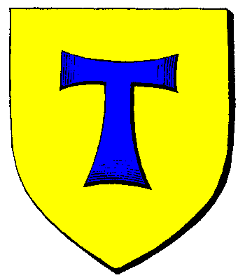

|

|
Das schwarze Brett
|
|
| Übersicht,
Allgemeines |
|
Bespaßung (11  ) )
|
Support
 |
Hallo zusammen,
da wir ja gesetzlich, moralisch, ethisch und wohl vor allem auch finanziell verpflichtet sind, euch zu bespaßen, wollten wir uns nun unsererseits mal den Spaß erlauben, zu fragen, in welcher Form ihr euch diese Bespaßung vorstellt.
Auch wenn der einleitende Satz von uns dazu verleiten mag, so bitten wir doch von solchen Vorträgen abzusehen, die Vorschläge enthalten wie z.B. die Wichtel auszutauschen, zu eliminieren oder sonstige sinnige oder unsinnige Dinge mit ihnen anzustellen, oder auch z.B. das Spiel in Hände zu geben, die sich damit auskennen.
Über ernst gemeinte Anregungen und Vorschläge, denken wir gerne nach. Bitte nicht auf einzelne Vorschläge im Vorschlagsforum verweisen, das ist uns durchaus bekannt und wird auch, entgegen aller Vermutungen, beobachtet. Die Frage hier zielt auf etwas globalere Bespaßung ab. Sollte der Beitrag wieder in den leider inzwischen üblichen Vorwurfston, vermeintlich lustigen Austausch von Beleidigungen (die übrigens meist nur einseitig lustig sein können) u.ä. ausarten, werden wir das Lesen unserseits aber einstellen.
Gruß
Spielleitung und Support |
13.05.14 15:31
|
|
Pyracheilos
 |
Wipe mit kleinerer Karte, Einführung der Minotauren, kleineren Änderungen am Waffensystem und Abschaffen von Tunnelgebieten auf Petroinseln.
Eine grafische Überarbeitung halte ich für SW nicht umsetzbar, genau wie manch andere Dinge aus dem Vorschlagsforum auch, daher reichen mir die obigen Punkte :) |
13.05.14 17:41
 |
|
Radalitz Trollblut
 |
Sofern ein Wipe mit kleinerer Karte nicht möglich ist, wovon ich mal ausgehe, wäre es dennoch sinnvoll die Landmasse zu verkleinern und näher zusammen zu bringen. Z.B. Lavainseln vernichten(wir werden wohl nie mehr über 2000 Spieler haben, wo das dann zur Sprache kommen könnte, werden also nicht benötigt). Verweisste Landstriche sind zwar auch eine Interessante Sache, aber erschweren die Monstersuche ungemein. Weg damit, dann finden auch alle Ihre Monster.
Unter Umständen würde dann keine Bespassung notwendig sein, wenn die Spieler mehr Kontakt zueinander hätten.
Quest sind natürlich immer sinnvoll, aber könnten auch von den Spielern geplant werden, sind aber vielleicht nicht mehr motiviert genug. |
13.05.14 18:13
|
|
Kittin Silberfang
 |
Die vorhandenen Dungeons sollten eine Herausforderung und einen Reiz darstellen. Warum sollen wir noch nach Narvalon runter? Keine neuen Monster... keine "Belohnungen" - Truhen lohnen nicht. Reform der "Kopfgeldjäger"-Funktion. Ähnlich wie Handwerker - würde wohl auch dafür führen, dass mehr Monsterschwung reinkommt. Zumindest wäre das für Krieger wieder etwas netter.
Überarbeitung der Regioquests. Ein kleiner ED für nen Bergtroll? Fand ich schon immer absurd :D
|
13.05.14 18:41
|
|
| Jolina (RIP) |
Ein Wipe bringt erst dann was wenn wirklich neue Funktionen ins Spiel kommen sollten, Wenn es nur um die Verringerung der Landmasse geht könnte auch einfach eine Zauberer Amok laufen und die Welt verändern, natürlich vorher mit Quest dass das zu verhinder gilt, wie einen See aus Magie errichten oder riesige magische Verstärker bauen ... ähm warte, das war Das Rad der Zeit ...
Mal im Ernst: grafische Verbesserungen wären schon angebracht.
Etwas den Charm der späten 90´er vertreiben ^^
Ich rede nicht von den Kartefelderbildern an sich, sondern eher an der Struktur des Menu, der Oberfläche also dem gesamten Interface, ich sehe keinen Grund warum die normale Map immer noch nur 7x7 Felder zählt, wenn die Isokarte eigentlich schon bei 11x11 ist. Ausser das die Grafik wohl dann auch bei heutigen Monitor-Auflösungen den halben Bildschirm einnimmt (704px x 704px). Gibt so alles kleine Stellschrauben wo SW etwas komfortabler werden könnte. Ich weis selber, das viele der Sachen einfach mit der Zeit gewachsen sind aber man könnte es doch neu Sortieren.
Warum Sind zBsp die TestSchemafür die Farbe immer ncoh in der Übersicht. Die gehören doch wohl eher in den Bereich Optionen oder komplett entfernt.
Ne klare Trennung zwischen Charakter und Spieleraccount und Interface einstellungen wäre auch nett und nicht so verstreut, was hat der Spiler-Account unter Übersicht zu suchen, der gehört eher unter Stellung/Optionen usw.
Zur eigentlichen Bespassung wäre mal ein langfristiges Quest das wirklich nen Roten Faden hat und nicht einfach aus der Richtung gekippt werden kann interessant. Aber das wird es mit der Engine hier nicht geben, weil es nun mal keine Buch ist sondern ein Interaktives Spiel. DIe bisherige erfahrung hat doch gezeigt das die meisten Spieler Quests ignorieren(bei mir meist aus Zeitgründen) boykotieren(Weisl nicht gefällt, oder der Wichtel ne doofe Nase hatte) oder simpel missverstehen(Wie, wir sollten den Blöden Chefgauner nicht einfach umnieten?) ^^
Vllt sollte den Spielern auch einfach vor der Quest nen Ziel gesagt werden, ein Gott der eine Aufgabe gibt und ein Dämon der dagegen arbeitet.
"Mein Volk sucht die dritte Scherbe im gelobten Land."
"Meine Häscher, erledigt die Idioten."
Sowas in der Art halt. |
13.05.14 20:57
|
|
Markus Feuernacht
 |
Hallo Support,
ein paar Ideen hätte ich:
1. Vielleicht die eine Quest einfügen für die wenigen verbleibenden Spieler neue Tempel zu bauen die etwas näher liegen als das zur Zeit der Fall ist
2. Monster die in der Hilfe stehen z.B. den Höllenschneemann dauerhaft einführen.
3. Einen weiteren Anreiz schaffen Monster zu Jagen. Z.B. die Überarbeitung des Kopfgeldjäger Systems oder für gewisse Monster einen Drop Items/Rohstoffe einfügen. So wäre es nett wenn z.B. Höllen Schneemänner nach dem Besiegen eine gewisse Menge Schnee an den übergeben der Sie besieht hat.
4. Auch längere Quest reihen wären Interessant aber auch sehr aufwändig. Vor allem wenn man Neulinge eben so wie alten Spieler anlocken will. Da wäre vor allem ein Problem z.B. der Gruppengröße bei Monstern. Eine gute Interaktion mit den Spielern auf RP Level wäre für die RPler auch wichtig, dass sie das Gefühl haben das es ihrem Char auch Erfahrungen bringt und halt Spaß macht und nicht nur die AP verklickern bedeutet.
Grüße
Der Spieler von Markus Feuernacht
|
13.05.14 21:57
|
|
Radalitz Trollblut
|
Macht es Sinn, wenn es immer mehr Tempel gibt, bzw. jeder seinen eigenen Tempel plötzlich hat?
Durch eine Reduzierung der Landmasse könnte man unter Umständen gewährleisten, das alles leichter erreichbar ist, auch die bereits existierenden Tempel.
Monster, die Rohstoffe droppen, wie Wichtel den Thaum. Würde das nicht dabei enden, das der Rohstoff enorm an Wert verliert oder sich bestimmte Spieler daran gesund stossen, die es schaffen die Monster zu besiegen, die andere nicht besiegen können?
Quests sind generell gut, nur ist die Frage, wieviele sich daran beteiligen oder wie man sie dazu bringt sich zu beteiligen. :-) |
13.05.14 22:06
|
|
Radalitz Trollblut
|
Ich würde nicht an der Beschaffung oder Erzeugung von Rohstoffen/Waren herum experimentieren. Die meisten Spieler legen Ihr Spiel auf die Mechanismen des Spiels aus. Etwas hierbei zu verändern würde diesen Spielern unter Umständen deren Spielspass nehmen.
Bisher kamen wir mit den jetzt verfügbaren Mechanismen doch recht gut klar. |
13.05.14 22:14
|
|
Baldur McMulenberc
 |
Wie stellt ihr euch denn diese "Reduzierung der Landmasse" vor? Wenn es nur unbewohnte Inseln trifft, hat es keine Auswirkungen außer ein paar Löcher auf der Karte und fehlende Anleger für die Schifffahrt, trifft es bewohnte Inseln hätte man mal eben einige Spieler weniger. Ich sehe da lediglich bei einem Wipe die Möglichkeit, eine neue Ausgangslage zu schaffen, im laufenden Spiel ist das nicht implementierbar (und nein, eine magische RP-Flutwelle die meine 300 Mio investierten GS wegspült wäre NICHT akzeptabel für mich). |
13.05.14 22:17
|
|
Radalitz Trollblut
|
Landmassen können sich ohne weiteres bewegen. Passiert immer noch, jedoch extrem langsam.
Sagen wir einfach es kommen heftige Tektonische Bewegungen, welche die bestehenden Landmassen zusammenschieben. Es rückt alles weiter in die Mitte.
Es muss nicht zwingend bewohnte Bereiche betreffen. Wenn man für sich selbst entscheidet das seine eigene Stadt nicht mehr notwendig ist, kann man diese ja anmelden für eine Vernichtung, etc.
Auf der Insel der Hoffnung z.B. wohnt kein einziger mehr. Die letzte Stadt wurde vor kurzen erst verlassen.
Neldoreth hingegen weisst noch ein paar Städte auf, welche zusammen gerückt werden könnten. Die Landbereiche werden durch Plattenbewegungen aufgewölbt und zusammen gedrückt.
Ich spreche nicht darüber, das jemand etwas verlieren soll, nur das alle weiter zusammen rücken darüber. :-)
Aber nicht destotrotz ist dieses nur ein Vorschlag, welche nicht angenommen werden muss.
Die Frage ist doch mehr, ob wir bespaßt werden wollen, müssen oder ob es Alternativen gibt. |
13.05.14 22:28
|
|
| Tyndal Sandström (RIP) |
Wenn ein Wipe (mit einer danach verkleinerten Landmasse) wirklich käme, würdet Ihr mir einen Herzenswunsch erfüllen. Mindestens eine Handvoll ehemaliger Spieler aus meinem Bekanntenkreis wären sicherlich auch wieder dabei.
Die aktuelle Spielrunde ist durch übermäßige Multis kaputtgegangen. Bereits vor langer Zeit.
Im Augenblick schaue ich nur nach ein paar Jahren Pause mal wieder für ein paar Wochen rein und erfreue mich an der Wirtschaftssimulation Scherbenwelten im Kleinstmaßstab. An richtiges RPG denke ich erst im Falle eines Neustarts, obwohl ich mich sehnsüchtig an die guten alten Zeiten zurückerinnere.
Weitere Änderungsnotwendigkeiten sehe ich kaum. Einfach den Spielern, die mehr Zeit, Phantasie und RPG-Begabung haben, ein wenig unter die Arme greifen, wie es in den letzten Jahren bestimmt desöfteren bereits passiert ist.
Anfangs auf jeden Fall die Landmasse verkleinern. Vergrößern kann man sie durch Events jederzeit.
Und Multis sind zu verhindern. Fragt mich aber nicht wie.
Das Spiel ist toll und lässt den Spielern alle Möglichkeiten, wie sie es spielen wollen.
Auch wenn mein Beitrag wahrscheinlich nur meiner Sentimentalität Ausdruck verleiht und kaum weiterhilft, konnte ich nicht umhin, ihn trotzdem niederzupinnen. |
13.05.14 23:11
|
|
Seppl der Kleine
 |
Werte SL, schaut doch einfach ins Vorschlagsforum. Dort stehen mehr als genug Anregungen.
Ziel sollte das modernisiernen des Spieles sein, um endlich die Spielerzahlen wieder zu erhöhen. |
13.05.14 23:32
|
|
Apollymi
 |
Quest sind so lange sich nicht wirklich was an der Gesammtsituation ändert immer noch gut und schön.
Questbeteiligung:
Kündigt den Leuten mal eine Belohnung an die sie auch wollen. So am Anfang von der Quest.
z.B. die letzten, die da noch Lust drauf haben und eins wollen können sich ein Wohnrecht ergattern.
Ansonsten eben die Sache mit den Tempeln. Es gibt genug Leute die das wollen und auch bereit sind da mit zu machen.
Es gilt eine Katastrophe zu verhindern und als Belohnung gibt es da wo sich die Leute besonders viel mühe gemacht haben die Möglichkeit gegen viel Ware/AP/Gs einen Tempel zu bauen
Und da zumindest die Tempel keinem Spieler gehören könnte man Tempel doch "brüchig werden lassen" und ohne eine gewisse Pflege würden sie dann verschwinden/einstürzen und anderswo neue enstehen/baubar.man könnte auch machen das es realistisch wird das ein Tempel abgerissen werden könnte (im questZeitraum) da bleibt dann eine ruine die man aber auch wieder aufabaun kann oder so.
Ne neue Monsterrasse mit Nestern, für die, die immer noch gerne Monsterkloppen wäre sicher auch nett.
Und natürlich kann man für jede Quest schönes RP bauen.
Wieder irgend einen coolen Belohnungsgegnstand machen wenn man sich so und so beteiligt wie z.b. dieses weitreichende Auge (Fernglas).
Dafür sollte am Anfang irgenwo sowas kommen wie:
"Die Händler sind gerne bereit ihre Dankbarkeit für Eure Mithilfe zu zeigen und bieten euch als Belohnung X( z.b. 5x riesen großer ed mit 3.000Ap /10x gewürzkuchen) oder Y(z.b ein uni Fernglas/Rüstung/Waffe) sobald ihr U (10 Höllenschneemänner besiegen)und/oder v (5000 Kakao liefern) erledigt habt."
Diese Belohnung könnt ihr dann bei Lisa Lagerinsel (auf Koords xxx yyy ) abholeln / überreicht euch Punschi zum 1. Bluemenmond 461
Für kleinere die die Aufgabe so nicht gebacken kriegen kann man ja ne leichtere Version mit etwas geringer Belohnung machen und man darf nur eine von beiden Aufgaben machen. |
13.05.14 23:46
|
|
Altan Stormwind
 |
So doof wie das klingt, aber einer der Knackpunkte, warum WOW so erfolgreich war/ist, weil man für alles und jedes eine Belohnung bekommen hat... in SW wird man leider immer nur "bestraft", das reizt irgendwann die Menschen nicht mehr, ändert hier vielleicht mal die Spielstrategie ;)
Als Beispiel, das Zerstören eines Skellnestes, wo man tausende APs rein gesteckt hat und ohne Ende Heilkram und am Ende gibt es einen kleinen Heiltrank dafür, nette Geste, aber als Spieler kommt man sich trotzdem verarscht vor...
Fazit: Fördert wieder das menschliche Belohnungssystem und der Spielspass und damit auch die Spielerzahlen werden wieder steigen. |
14.05.14 6:29
|
|
| Chevonne (RIP) |
Da ich schon vieles gelesen habe, was ich auch begrüßen würde, füge ich nur das hinzu, was mir noch weiteres einfällt.
Ich fände es spaßig, wenn man ähnlich dem Avatar auch das Icon für den HC nach strengen (!!!) Maßgaben selber einsetzen könnte. |
14.05.14 8:02
|
|
Amhlaidh Doireann
 |
Noch kurz eine Anmerkung zum Thema Wipe. Jeder der sich etwas grösseres aufgebaut hat und einen Mittlerweile gut ausgebildeten Charaktertrupp hat möchte das ja nicht unbedingt.
Aber ein Wipe könnte man dann akzeptieren, wenn das skillen von einigen Skills sowie die Schulungs XP´s reduziert werden oder halt die XP´s im allgemeinen schneller daher kommen.
Es entspricht nicht dem Zeitgeist, dass man "Jahre" investiert um einen anständigen Charakter zu haben. Wenn man wirklich intensiv dabei ist, sollte man das in einem Zeitraum von ca. einem halben Jahr schaffen können.
Damit ist es auch für Neulinge dann nicht so tragisch, nicht vom ersten Tag an mit den alten mithalten zu können, weil sie es Mittelfristig trotzdem noch aufholen können.
Wenn das so berückstichtigt werden könnte, würde ich den Wipe mitmachen. |
14.05.14 8:15
|
|
| Rudi Ralala (RIP) |
Die Skala der Vorschläge reicht schon jetzt von kleinen Änderungen bis zur Umgestaltung der Welt und einem Neubeginn.
In dem Zusammenhang würde ich gerne von euch, liebe Supportler, erfahren, wo ihr denn die Limitierung seht? Ihr werdet eine grobe Vorstellung davon haben, was mit euren Ressourcen machbar ist und was nicht, respektive was aus eurer Sicht gar nicht wünschenswert ist.
Ich selbst würde mich zwar auch gerne in einer neuen Scherbenwelt wiederfinden, die meinem ästhetischen Empfinden durch schöne Optik schmeichelt und meinen Gerechtigkeitssinn befriedigt, indem die Bonzen und Plutokraten mit mir zusammen wieder bei Null anfangen müssen, vermute aber, daß "Bespaßung" kleiner gedacht ist.
Um die Diskussion pragmatischer zu gestalten, empfände ich es als hilfreich, wenn ihr einen ungefähren Rahmen, in dem Änderungen möglich sind, definieren würdet. |
14.05.14 9:39
|
|
Markus Feuernacht
|
@Rudi bzg. Rohstoff/Gegenstands drop
Der Preisverfall is schon Enorm. In Punkte Schnee kann ich sogar sagen das ich eher unter dieser Möglichkeit leiden würde als davon zu Profitieren.
Ich sehe es ähnlich wie Altan, das Monster und Nester zerstören sollt neue Anreize bekommen. Das was man aus den Nestern bekommt is "nichts" gegen den Aufwand in der Regel.
u.U. wäre es Denkbar das auch neue Gegenstände nach der Nestzerstörung zurück gelassen werden. Sagen wir man kann "Bruchstücke" von Legendärer Ausrüstung finden und relertiv Günstig aus 5 Stücken eine 15er oder 20er Waffe/Rüstung herstellen.
Ja ich weiß es wäre Unfair gegen die Spieler die sich die für 20 Mio Gs und mehr hergestellt haben. Es soll nur eine Anregung sein wie das in die Welt passt soll die Spielleitung und die Spielerschaft dann entscheiden. |
14.05.14 13:12
|
|
Olivia v. glänzenen Wolfstern
 |
Wipe finde ich nicht spaßig!
spaßige kleine Aktionen waren mal die Sondermonster,
bunte Blümchen, die man pflücken konnte,
einstürzende Dungeons mit Monsterschwemmen, wo alle zusammen gearbeitet haben .......
|
14.05.14 13:45
|
|
Harry Wurstbrot
 |
Standen folgende Dinge schon?
- Es sollte ganz dringend über eine FTP Variante (z.B. ohne Burgbaurecht, ohne BM Recht etc.) nachgedacht werden, denn keine Neuling zahlt 4 Euro im Monat, wenn das Internet voller FTP Games ist.
- Internationalität des Games sollte angestrebt werden (könnte man es sogar Facebook oder kongregate tauglich gemacht werden?).
- Dringende grafische Überarbeitung.
Aber vermutlich müsste man aus dem vorhandenen das Beste rauspicken und eine Neuauflage designen. Ich denke, wenns gut gemacht und gut positioniert wird, könnte es aber ein Renner werden.
Meine Idee hierzu war neulich mal eine Kapitalgesellschaft zu gründen, in die jeder der ehemaligen und vorhandenen Spieler & friends investieren könnte. Evtl. kombiniert mit einer Kickstarter Kampagne. Beide Sachen finanzieren dann die Modernisierung. Die Investoren werden ab einer gewissen Summe dann an den späteren Umsätzen beteiligt, bei kleineren Beträgen winken evtl. Abos auf Lebenszeit etc.
|
14.05.14 14:28
|
|
| Chevonne (RIP) |
ja, standen schon... in vielfacher ausführung und in unterschiedlichster güte... einfach mal das forum durchforsten. ;) |
14.05.14 15:10
|
|
Poena Schattenherz
 |
Hat nur leider keinen interessiert. Für die restlichen 250 Spieler hier noch Spaß zu fahren ist ja eine Sache...
...aber wäre es für einen Betreiber nicht (finanziell) reizvoll, die Neustart-FTP-Gedanken in einer Scherbe Nr.2 (oder auch 3, wenns englischsprachig wird) zu verwirklichen? |
15.05.14 18:19
|
|
| Ceara Duana (RIP) |
Hinsichtlich eines Wipes bitte ich ganz einfach um eine globale Umfrage via Popup beim Login, sodass man nicht viel klicken oder gar das Forum besuchen muss. So bekommt man schnell eine vielzahl an Entscheidungen und man kann endlich eine Bilanz ziehen, wieviele Spieler tatsächlich daran interessiert sind.
Eine Variante:
Antwort 1: JA dafür
Antwort 2: NEIN dagegen
Antwort 3: Zusätzliche - kleinere - 2. Welt, welche keine Zusatzkosten für den Abo-Spieler beinhaltet [Somit alles beim Alten hinsichtlich der Kosten, Einnahmen dürften dadurch steigen | Bei unrentabilität bzw. wenn Welt 1 in der Versenkung verschwindet -> Erneute Umfrage hinsichtlich einer grundsätzlichen Aufgabe von Welt 1]
Antwort 4: Mir egal, wen interessierts?
Antwort 4: |
15.05.14 21:43
|
|
Tattergreis
 |
Aus meiner Sicht der Scherbenakademie:
1. Kein Wipe - denn es macht Spass zu erleben, wohin die Reise gehen könnte.
2. Erweiterte Neulingsinsel - Spielfunktionen auf der Neulingsinsel testbarer machen, also einige Beispiele: HC-Wechsel, Gebäude Bau und Abriss, Produktionsketten testen, Berufe und Rassen testen, minimale Kosten für Aktionen, Ressourcenlager wo Neulinge beheben können u.s.w. ...
3. Moderatoren / Helferlein auf der Neulingsinsel: Ja, genau das, was wir hier (alle, die sich um neue Spieler bemühen) ingame machen.
4. FTP Accounts mit eingeschränkten Aktionen
5. Eine den eingesetzten AP entsprechende Belohnung bei Monstern u.s.w.
6. Weitere Produktionszweige bzw. Verästelung um Waren aufzuwerten: Beispiel Brauhausprodukte trennen: Weingarten macht Traubenfeld -> Weinkeller oder Hopfenplantage -> Bierkeller oder noch feiner granuliert: Holzfäller -> Sägewerk mit unterschiedlichen Waren zB Bretter oder Brennholz -> dann Möbel oder ...
7. KE´s nur von Spieler zu Spieler aussprechbar, nicht von Spielern an eine Nation. Nations-KE´s nur von Nationsführern.
^^ alles für das Vorschlagsforum ;)
Übrigens schliesse ich mich der Meinung an, dass man SW freikaufen sollte.
;) Tattergreis |
16.05.14 1:16
|
|
Frathag Graubart
 |
Erster spontaner Gedanke... Ist doch etwas mehr geworden:
Die langen Wege sind hinlänglich erwähnt worden. Die große Landmasse, auf die sich die Spieler inzwischen verteilen ebenfalls. Aronius wollte, so hab ich in Erinnerung, ohnehin einige Inseln untergehen lassen, das wäre ein Anfang, insbesondere bei verlassenen. Die tektonischen Bewegungen fand ich aber auch eine gute Idee. Die uralte Grafik und Bedienbarkeit ist als Problem bekannt, aber das größte Manko von SW fehlt mir in der Aufzählung:
Ernten für Erfahrung! Wer seine Leute schulen will, verbringt Jahre damit auf einem Feld zu stehen und seine AP wegzuklicken. Hier muss etwas geschehen, wenn SW attraktiv sein will. Erfahrungsgewinn, gerne in kleinen Mengen, durch praktische Tätigkeiten oder Erfüllung von Aufgaben. Beim Heilen oder Behandeln war das glaub ich schon der Fall, wenn auch geringstfügig (also nicht praxisrelevant). Erfahrung fürs Monsterklopfen geht hingegen sehr schnell gegen Null und ist auch nicht für alle Berufe möglich und sinnvoll.
Wenn die Grafik und das Erfahrungsprinzip an den heutigen Stand des Spielens angepasst sind, stimme ich dem Tattergreis zu, dass man Anfängern ruhig mehr Testmöglichkeiten einräumen sollte bevor sie auf die Welt losgelassen werden.
Nicht zuletzt: Wer einen Fünfer im Monat verlangt, muss Spielbarkeit dafür bieten und sich mit den Alternativen auf dem Markt messen können. Da hat SW ein Problem, denn das AP-System limitiert auf zweimal täglich einloggen, der Spielspaß kommt eher aus der Interaktion mit anderen Spielern, nicht aus dem Spiel selbst. Dass die Kosten Kinder abschrecken und hier ein ansprechenderes Niveau als in manch anderer Online-Umgebung herrscht, weiß ich ja zu schätzen, zweifelsohne kostet der Betrieb auch Geld, aber eine vernünftige Relation zwischen Spielerlebnis und Preis ist in meinen Augen am heutigen Markt nicht mehr gegeben. Sprich: Für das was geboten wird, ist SW zu teuer. Wie einige andere die ich kenne, bin ich wegen alter Bekannter hier, quasi auf einer Art Chat-Plattform mit RP-Hintergrund, und nicht mehr um zu spielen.
Nun will ich nicht, dass Leute die sich zwölf Stunden am Tag vor den Rechner hängen hier zu unmenschlicher Stärke aufschwingen weil die AP abgeschafft würden. Aber eine Aufsparung für einmal tägliches Spielen würde den Arbeitnehmern unter uns vermutlich gut tun, und da die Spieler hier mit dem Spiel gealtert sind, werden das inzwischen die meisten sein.
Auch ein Pay-to-Win System widerstrebt mir, aber Belebung wird man nur bekommen wenn wir Leute hier hergelockt bekommen, die Möglichkeiten haben das Spiel schätzen zu lernen bevor sie bereit sind etwas zu investieren.
Eine weitere Sache ist die Begrenzung auf 25 Charaktere. Dank dreier Laufgruppen à 8 Mann kann ich keine weiteren Sachen austesten, wie Kobolde, Barden oder Hexen. Auch hier könnte man den langfristigen Spielspaß erhöhen, wenn hier neue Optionen ermöglicht werden ohne alles Aufgebaute zu vernichten.
Die Begrenzung von Kakao (nicht anzubauen) wurde vermutlich eingeführt, um nicht zu einer Schwemme an Erfrischungstränken zu führen, wie sie die Beta kannte. Dafür gibt es sicher gute Argumente, aber auf der anderen Seite wird der Rohstoff noch anderweitig benötigt, ich meine mich an eine Wendaria-Prüfung zu erinnern wo man 5k abliefern muss. Die können nur aus Karawanen oder vom Schwarzmarkt kommen, für welchen man Unmengen an Bösartigkeit bräuchte. Vollkommen unpassend. Hier würde es sich lohnen für Edrinks eine andere limitierende Quelle einzufügen oder die anderen "Verbraucher" von Kakao mal einer sorgfältigen Überprüfung zu unterziehen.
Weitere Dinge:
Die Nester scheinen mit der Zeit mitzuwachsen. Haben Anfänger genug Möglichkeiten an kleinen Gruppen zu üben?
Karawanen: Furunkel einer nicht funktionierenden Wirtschaft, um die Überschüsse zu vernichten, weil das System als solches nicht ausgewogen ist. Gehören ersatzlos abgeschafft. |
16.05.14 10:28
|
|
| BerndBoy (RIP) |
Die Idee mit der Begrenzung auf 25 Charactere gefällt mir genauso gut wie die lohnende Belohnung von Nesterfolgen.
Wipe oder Zweitscherbe fände ich ebenfalls noch besser.
Stadtbegrenzung wieder rausnehmen; denn es muss doch ein Statistiken-Ziel möglich sein.
Alle verwaisten Siedlungen verfallen lassen.
Wohnhaus hätte ich auch gerne als Belohnung.
Die Idee mit Waffenteilbelohnungen fände ich auch gut. |
16.05.14 23:28
|
|
Clara
 |
Eine Bitte, laßt doch mal das Gemaule wegen der Bezahlerei. 45 als Jahresabo ist wirklich nicht die Welt und ist auf den Monat umgerechnet 3.75 und nicht 5. |
18.05.14 11:46
|
|
| Rudi Ralala (RIP) |
Zumindest ich kann deiner Bitte nicht entsprechen, Clara. Ohne Jahresabonnement sind es nun mal 4,99 und auch angesichts der aktuellen Lage des Spieles bin ich nicht bereit eine solch langfristige Bindung einzugehen.
Ob der Betrag nun als angemessen oder übertrieben hoch empfunden wird, ist dann von der individuellen wirtschaftlichen Situation und/oder vom persönlichen Verhältnis zum Geld abhängig, so daß auch das Maulen eine legitime, wenn auch fruchtlose Option bleibt.
Beim Studium des "ersten spontanen Gedanken" von Frathag, der sich dann doch als elaborierte und plausible Analyse samt nachvollziehbarer Lösungsangebote erweist, drängt sich mir dann aber wieder meine schon gestellte Frage auf: Sind denn diese fundamentalen Vorschläge überhaupt Gegenstand der Ausgangsfrage oder reden wir aneinander vorbei? Beinhaltet "Bespaßung" derlei sicher nützliche und notwendige, aber aufwendige Neukonzepte oder sind eher kleine Ornamente gemeint?
Könnt ihr, liebe Spielleiter, in einem kurzen Satz dazu Aufklärung bringen? Damit man weiß, worüber sich nachzudenken lohnt?
|
18.05.14 17:58
|
|
Harry Wurstbrot
|
@Clara: Also da mein Schnupperaccount grade ausgelaufen ist und ich vor der Entscheidung stehe ein Abo abzuschließen, kann ich Dir sagen, dass es um die gefühlte Relation zu anderen Angeboten geht.
Klar sind 5 Euro nicht viel, aber trotzdem ist ein 15 Jahre altes Spiel damit "gefühlt" 100mal teurer als andere topaktuelle Games im Internet und daher werde ich kein Abo abschließen. |
18.05.14 19:15
|
|
| Náriël Felagund (RIP) |
Nette Idee von den Betreibern von Scherbenwelten. Aber ich denke, dass dieser Aufruf um einiges zu spät kommt. SW ist nicht mehr zeitgemäß und wird den Rückstand zu anderen Browsergames nie wieder einholen können. Da hilft es auch nicht, wenn es eine kurzfristige Bespaßung gibt. ;) |
18.05.14 19:59
|
|
| Noemi Duval (RIP) |
Ich finde die Aussage, dass SW nicht mehr zeitgemäß ist ehrlich gesagt ziemlich schwierig. Denn das Spielprinzip selbst altert nicht bis kaum. Natürlich, die Grafiken sind mit modernen Flashumsetzungen nicht zu vergleichen und wie alt einige Code-Teile sind, das will ich wahrscheinlich auch lieber nicht wissen ... aber auch als WOW vor einigen Jahren raus kam, gehörte SW schon nicht mehr zu den Schönheiten unter den Spielen ... Sicher, eine Anpassung der Steuerung und des gesamten Menüaufbaus, vor allem für aktuelle Monitorformate wäre schon schön (von mobilen Seiten, Apps und Co. nicht zu sprechen ^^) und auch gegen hübschere Grafiken wäre nix einzuwenden. Aber das wird das Problem nicht lösen.
Und auch die Vorschläge, SW mehr auf Belohnungssysteme auszulegen finde ich ehrlich gesagt am Thema vorbei - Spiele dieser Art gibt es zur Genüge im großen weiten Web und genau das fehlen solcher Mechanismen eröffnet ja die Wege und Freiheiten in SW - zugegeben, mit so wenig Spielern auf so großem Raum auch nur im sehr begrenzten Maß.
Dann das leidige Abothema - das man sich nicht ein Jahr an ein Spiel binden möchte, kann ich gut nachvollziehen - die Aussage bezüglich des Vergleichs mit anderen Angeboten allerdings nicht. Und das hat zwei Gründe. 1. Welches Spiel ist denn noch wie SW? Das wäre ja für einen solchen Vergleich erstmal wichtig - nämlich auch ein vergleichbares Angebot zu finden. 2. Natürlich kann ein Abomodell dem Vergleich mit F2P Spielen auf den ersten Blick nicht stand halten - auf den zweiten aber durchaus. In der überwiegenden Mehrheit der F2P Spiele muss man - um dieselben Chancen wie die Spieler in den oberen Rängen zu haben - Geld investieren (ist ja auch logisch, die Firmen bieten die Games ja nicht an, damit wir bespaßt werden, da stecken handfeste wirtschaftliche Interessen dahinter). Um also dieselben Chancen wie in SW durch das Abomodell zu haben, kosten auch F2P Spiele Geld und das kann auch schnell mehr werden, als hier. Hier ist es zumindest fest limitiert mit denselben Chancen, Möglichkeiten und auch Stolpersteinen für alle.
Natürlich ist das Argument, dass man in einem F2P Spiel nicht zum Ausgeben von Geld "gewzungen" wird, schnell herbei gezogen. Will man ein solches Spiel allerdings ernsthaft betreiben, bleibt einem auch da oft nicht viel übrig. Mit anderen Worten also: wenn man SW ernsthaft betreiben will, so gibt man hier auch nicht mehr Geld aus, als anderswo.
Daher meine Vorschläge zur Bespaßung: bitte greift nicht auf WOW ähnliche Prinzipien zurück, davon haben wir genug. Bitte fangt nicht mit F2P- und Premiuminhalten an - auch davon gibt es genug. Aber ein anständiges Code- und Facelift, die Überarbeitung der einen oder anderen Spielfunktion (zum Beispiel sollten Minigames wie Gladiator und Karawanen durchaus erhalten bleiben, aber bedürfen vielleicht doch der einen oder anderen Bearbeitung), anschließend Eröffnung einer zweiten Scherbe mit derartigen Änderungen und einem von Anfang an konsequenten Multi-Hunting und dazu eine durchaus auch finanziell unterfütterte Werbekampagne, um alte und neue Spieler anzulocken - das wäre was :)
Kurzfristige Bespaßungen, vor allem in Hinblick auf scherbenweite Quests sind zwar sicher nett, werden aber weder die Spieleranzahl vergrößern noch die bereits in Lethargie verfallen wieder aus ihren Häuschen locken. |
18.05.14 23:47
|
|
Salkin McMulenberc
|
;-) In den Punkten stimme ich Noemi absolut zu. Ich treibe es sogar noch weiter, SW hat mit das genialste und umfangreichste Spielprinzip, dass es auf dem Spielemarkt gibt.
(Anm. für Harry Wurstbrot: Hoffentlich hast du in den "Topaktuellen" nicht 100mal mehr Kosten, siehe aktueller Streik bei Empire)
Aus meiner Sicht wäre es sicherlich vor Allem für Neueinsteiger spannender, wenn die grafische Oberfläche einem Facelifting unterzogen würde. (Ich brauche es eigentlich nicht)
Die eine oder andere schon genannte Änderung im System realisiert werden könnte und !
der "Zeitfaktor" etwas angepasst wird. (Jahre um ein Ziel zu erreichen ist in unserer schnelllebigen Zeit eher abschreckend)
Dann wäre mir auch ein Wipe egal, bei dem ich eben wieder (zum x-ten Mal) von Null anfangen würde ;-)
|
19.05.14 20:08
|
|
Harry Wurstbrot
|
Mir ist ja durchaus bewusst, dass SW 1000mal tiefsinniger ist ist diese unzähligen F2P hingerotzten Games, grade weil Aronius mit viel Liebe zu Werke gegangen ist.
NUR. Das weiß der Neuling ja nicht. Junge Spieler im Internet sind solche F2P Varianten einfach gewohnt. Und meiden Nichtversteckte Abokosten wie der Teufel das Weihwasser.
Daher meine ich ja, dass SW wie ein F2P Game daherkommen soll, um Spieler zu locken, also kostet nichts, aber bestimmte Features wie Stadt, wie Burg, wie >1 Million Ruhm muss man sich dann eben per Abo freischalten.
Für alte Spieler ändert sich nichts, neue werden zuhauf angelockt. Wenn Eukal dann noch sein tolles Grafikpaket aktualisiert und es weniger bunt wird sollte einem zweiten frühling nichts mehr im Wege stehen. |
20.05.14 16:26
|
|
| Asyra (RIP) |
Bei nem Wipe würde ich mir auch ein Abo zulegen. Ebenso sollte mal wieder ein gemeinsamer IRC Server geführt werden (könnte auch über Webtales laufen). |
20.05.14 20:25
|
|
Aahz
 |
1) Werbung für neue Spieler
1a) hier ist nen Neustart immer was gutes
1b) ohne neues, frisches Blut wird sich hier nichts mehr tun
1c) von mir aus sogar Übergangsweise eine parallel Scherbe.
2) Aufgaben die sich auch Lohnen (Dungeons, Truhen, Kopfgeldjäger, Nester, ...)
3) Eine der Spieleranzahl angepasste Karte. Gäbe sogar die ein oder andere Möglichkeit, dass die Karte nicht statisch bleibt
4) Auch wenns gerade nicht aktuell ist, noch weitere Abschaffung der "Nachtangriffe". In diesem Spiel kann man echt in 15 Min alles verlieren was man sich in 4 Jahren aufgebaut hat
5) Abschaffung strategischer RIESENVORTEILE, damit meine ich uneinnehmbare Tunnelpumpen und eigentlich auch das Hainsche Maha-Gebiet. OK jetzt interessierts nicht mehr wirklich, aber ne zeitlang wars echt hart.
6) Ein klein wenig Vereinfachung für die Massenwarenproduzenten. Ist echt n harter Job... insbesondere da wir fast alle keine Studenten mehr sind und das Spiel nicht gerade Smartphone kombatibel ist
7) Karawanen: Zweischneidig. Sehr mächtig, aber auch ein sehr kommunikativer Teil des Spiels. Evtl. kann man den Ertrag der Karawanen verringern aber dafür die Art bestimmen lassen.
Ich schicke meine Leute los um "Güterklasse X" zu kaufen. X könnte dann aus Schmuck, Waffen, Rüstungen, ... bestehen. Y aus Fisch, Getreide, ... D.h. weniger Ertrag aber mehr Sicherheit.
Ansonsten:
Jeder der hier neu anfängt kann doch bis auf RP nichts erreichen. "Trainier erst einmal 12-24 RL Monate" dann reden wir weiter...
D.h. für Neueinsteiger ist die derzeitige Scherbe, in der derzeitigen Größe, mit den derzeitigen Machtpositionen.... unattraktiv.
Weiter oben sind noch vieeeele andere gute Vorschläge. |
20.05.14 20:56
|
|
Aahz
|
oh und das Abo stört mich persönlich überhaupt nicht. So haben alle ähnliche Chancen. Besser als wenn irgend ein "Hanswurst" (nicht persönlich) 150 investiert damit er mit X Bonusvorteilen einen auf Superekel oder Megahero machen kann. |
20.05.14 20:59
|
|
| Noemi Duval (RIP) |
Nunja, ich fand die 6.oo Uhr Runde sehr praktisch - gerade weil sie Aktionen, die in 15 Minuten 4 Jahre Aufbau zerstört haben (was auch nicht stimmt, Skills und solche Sachen kann einem keiner so schnell nehmen) stark erschwert haben. Und wenn man dieses Risiko nicht haben will, verweise ich auf gute WiSims wie Anno, DSO und andere.
Und ich denke gerade der Hain sollte wissen, dass nichts wirklich uneinnehmbar ist. Das hätte, wenn sich die Kaperfahrer damahls anders entschieden hätten oder gewisse Tunnelprojekte fertig geworden wären, auch für das Mahagebiet gegolten. |
20.05.14 21:17
|
|
Aahz
|
ja, ich erinnere mich darann, dass sogar das Nationspwd geklaut wurde *hust*
Aber in dem Fall ist ja alles fair verlaufen, die guten alten Zeiten *jammer, seufz, jammer*
und verbieten würde ich die Nachtaktionen auch nicht. Wäre nur toll wenns 30 min dauert anstelle von 15 min ;) |
20.05.14 22:20
|
|
Baldur McMulenberc
|
Dann muss eben mehr Struktur in die Gebäude, schon dauert so ein Angriff erheblich länger, gerade weil die Server da in der Vergangenheit regelmäßig in die Knie gingen. Von den 4(+) Stunden Dauerklicken bei Tunnelpumpen ganz zu schweigen. Also da gibts m.E. bereits einige Möglichkeiten, die notwendige Zeit zu verlängern, und die Scherbenengine ist einfach so ausgelegt, dass der Verteidiger massive Vorteile hat, der Angreifer damit oft auf Nachtaktionen angewiesen ist, um überhaupt Aussicht auf Erfolg zu haben.
Allen anderen Punkten würde ich vorbehaltlos zustimmen :) |
20.05.14 22:52
|
|
Seppl der Kleine
|
Eine Diskussion, die von der SL und dem Support bekleidet würde, wäre hier angebracht... |
21.05.14 8:13
|
|
| Rudi Ralala (RIP) |
Meinetwegen kann die Diskussion auch weiter nackend bleiben, hauptsache ihre Initiatoren werfen mal ein klärendes Sätzchen ein. Nur, daß man weiß, daß ihr noch mitlest.
Wie sehen denn die Befürworter eines Neustarts oder einer frischen Parallelwelt (denen ich mich gerne zugeselle), das Problem der Spieldauer? Soll es wieder eine auf Dekaden ausgelegte Runde werden oder sollte sie deutlich zeitlimitierter ablaufen, um eine Duplizierung der jetzigen Misere zu vermeiden, und wäre das überhaupt mit dem Scherbenkonzept in seiner jetzigen Spieltiefe machbar? |
21.05.14 9:48
|
|
Kantar
 |
Da alle am Thema vorbei sind , sind alle RAUS ^^
Wie wärs mit einem wöchendlichen oder 2 Wöchentlichen-mitmachquest wo man sich halt voranmelden muss das durch die SL oder wie auch immer geführt wird.. |
21.05.14 12:11
|
|
Amhlaidh Doireann
|
Wieso am Thema vorbei? Bespassung ist eben individuell anders. Offenbar würde es nunmal einigen Spass machen eine neue Welt zu entdecken, neu aufzubauen, neu zu formieren. Ist ja auch völlig legitim dies dann Kund zu tun.
Andere Bespassung benötige ich zumindest nicht, da die Spieler oftmals selbst was bereitstellen (siehe Scherbenolympiade), was dann wiederum von Spielern nicht wahrgenommen wird. Die Mitmachquests würden ziemlich sicher genau so wenig Akzeptanz finden. Die Welt wie sie momentan ist, ist zumindest für mich als ehem. Beta spieler ausgelutscht. man kennt jeden Winkel. Da muss mal was neues kommen was neugierig macht. Es nützt auch nichts die Scherbe zu verkleinern, es ist auch dann immernoch dieselbe. |
21.05.14 14:02
|
|
| Stufur (RIP) |
Newbie freundlicher.
Die aktuellen Monstergruppen sind für Anfänger zu stark. Sie sind einfach zu groß. |
21.05.14 16:34
|
|
Support
|
Hallo,
also erst einmal ganz allgemein, bisher gibt es keinen Anlass für uns hier nicht mehr mitzulesen, wir sind also noch dabei.
Grundsätzlich wollten wir hier keine moderierte Diskussion, daher auch bisher keine Kommentierungen von uns in diesem Bereich zu einzelnen oder allen aufgezählten Punkten.
Eine Begrenzung des "machbaren" war ebensowenig Zweck dieser Anfrage, es dient für uns dazu uns über die Ziele und Wünsche der Spieler klarer zu werden und Anhaltspunkte oder Anregungen zu finden, wo wir mit weiteren Entwicklungen hin können.
Viele Änderungen, egal ob hier oder im Vorschlagsforum lassen sich in der derzeit laufenden Runde nicht verwirklichen. Nicht weils enginetechnisch nicht unbedingt umsetzbar wäre, sondern weil es schlicht die bisherigen Spieler in allen Bereichen aushebeln würde.
Ob es einen Wipe geben wird, wann es diesen geben würde, wenn es denn einen geben wird oder ob es eine "zweite Scherbe" mit Neuerungen geben wird, das steht (leider) zur Zeit noch in den Sternen. Aber nein, wir sind da nicht blind oder gehörlos, so im Grundsatz.
Bisher haben wir uns mal aus den Dingen für die "laufende" Runde folgendes rausgefiltert, wobei die Liste hier noch keine Zusage ist, dass es diesbezüglich gravierende Änderungen geben kann:
- Kartengröße
- Monsteranzahl
- Monstergruppengröße
- Monstervielfalt
- Belohnungssystem für die "automatischen" Quests/Aufgaben
- Spielbarkeit Monitorgröße und mobile Geräte
- Erweiterung Kopfgeldjäger / Handwerker
Etwas das wir eher kritisch sehen:
- Quests mit angekündigten Belohnungen
Zur Begründung: Diejenigen die sich bisher an Quests ohne vorher angekündigte Belohnungen beteiligt haben, dürften - so hoffen wir - uns zustimmen, dass uns immer etwas einfällt. Soweit das aber schon vorher bekannt ist, werden die "alten Muster" wieder deutlich. Einer löst die Rätsel, Aufgaben, was auch immer in der Art, es wird rundgegeben und die Teilnehmer der jeweiligen Gruppe ziehen nach. Das ist, auch wenns nach Jammern klingen mag, für Questersteller, egal ob von uns oder von Spielerseite, sehr frustrierend, weil doch meistens eine Menge Arbeit darin steckt so etwas zu entwerfen und mit uns zusammen umzusetzen.
Gruß
Spielleitung und Support |
21.05.14 19:09
|
|
| Noemi Duval (RIP) |
Um auf Rudi´s Frage zu antworten: das Spielprinzip der Endlosrunde war früher und ist auch bis heute einer der für mich wichtigsten Punkte im Spielkonzept. Und ich glaube, dass man ein solches Endloskonzept auch lange durchziehen kann, wenn die Weiterentwicklung in den Spielalltag integriert wird und regelmäßig durch Werbung oder andere Aktionen auch neue Spieler gewonnen werden, während ältere gehen.
Der Hintergrund für zumindest meinen Vorschlag einer Zweitscherbe liegt darin, dass ich - ebenso wie viele andere - denke, dass wir mittlerweile an einem Punkt sind, wo viele alte Spieler (die ja durchaus noch Bock haben und für einen Neuanschub aus meiner Sicht auch wichtig wären mit ins Boot zu holen), ohne eine solche Maßnahme nicht wieder gebündelt neu anfangen zu spielen und wo verstärkt Änderungen notwendig sind, die bei einem Neustart einfach viel besser ins Auge stechen (man stelle sich nur eine Neustrukturierung des Codes, neue Grafiken und Umsetzungen für verschiedene Monitorgrößen/Handys vor, die sich bei einer Integrierung ins aktuelle Gameplay durchaus über 1 bis 3 Jahre hinziehen können, da wäre eine "neue Umgebung" sicher besser zu geeignet, weil alles schneller umzusetzen wäre und der Effekt am Ende entsprechend größer). Außerdem wäre es dann für eine länger erfolgreiche "zweite" Scherbe auch wichtig, Fehler aus der Vergangenheit nicht zu wiederholen, aber dazu habe ich ja weiter oben auch schon das eine oder andere gesagt. |
21.05.14 20:27
|
|
Kantar
|
Na dann freuen wir uns mal auf das was dann vieleicht kommt. |
21.05.14 21:48
|
|
Arthwr Dyddplentyn
 |
Da jeder etwas Anderes unter "Bespaßung" versteht,kann ich nur aus meiner Sicht was dazu sagen:
Liebe SL + Support,
eure Liste sieht schonmal ganz gut aus,bitte so schnell es geht auch umsetzen,ob nun zum Teil oder Ganz ist dabei egal,Hauptsache es tut sich was!
Persönlich wünsche ich mir auch nur die Umsetzung der vor langer Zeit geplanten MINOS,bevor sie ganz in Vergessenheit geraten.
Achtung Ironie:
Ein untragbarer Zustand das es noch größere Wesen als Horks auf der Scherbe gibt,dabei mache ich mir schon seit 2 Jahren die Mühe Arthwr+Co. hochzuziehen.*Ironie off*
Neuanfang+der Weg sind für mich das Ziel,der Grund wieso ich so lange SW treu geblieben bin.Diese regelmäßige Abwechslung brauche ich um weitere 8 Jahre durch zu halten*zwinker*,also bitte,bitte:her mit den Gehörnten,Testphase von über einem Jahr reicht völlig! |
22.05.14 0:38
|
|
Frathag Graubart
|
Danke an den Support für die Stellungnahme.
Implizit besagt diese leider, dass bzgl. der grundlegenden Mängel erst (wenn überhaupt) Lösungen implementiert werden, wenn ein Neustart geplant würde. Damit ist auch die Frage weiter oben geklärt, ob es um "Bespaßung" oder den großen Wurf geht: Bis auf Weiteres nur Ersteres (die Kartengröße nehme ich hiervon mal aus). Wirklich relevante Korrekturen mit notwendigerweise gewissen Eingriffen in das Spielgleichgewicht wird es nicht in näherer Zukunft geben. Das ist zweifelsohne verständlich, nichtsdestotrotz in meinen Augen schon schade. |
22.05.14 16:42
|
|
Braeniver Undomiel
 |
Ja, danke für das FeedBack des Supports.
Ich bin nach dem großen Riesen Quest erst auf die Scherbe gekommen, habe aber das "Long Island" Quest mitbekommen, obwohl ich mich aufgrund meiner Schwäche meines Chars dort zurückhalten musste. Aber ich erinnere mich an kleine Dinge, wie der Dämon der damals plötzlich auftauchte und das kleine Tura Fest in Aufruhr gebracht hatte. Solche Dinge würde ich mir mehr wünschen, die SL, die ja mitbekommt, wenn Dinge wie "Treffen" oder was auch immer ähnliches passieren "stören" in dem plötzlich Monster auftauchen und die Spieler auffordert Teams zu bilden (egal ob Fein oder Freund) u, siegreich aus dem Kampf zu ziehen. Also kurz: mehr action. Auf den Inseln war es monatelang total langweilig weil einfach keine Monster aus den Nestern kamen, dann plötzlich kam aus jedem Nest ein paar Gruppen, die nun nicht mehr sind und nun ist es wieder ruhig und man fällt wieder in dieses Geplätscher zurück. Gut, es sind nur noch eine Hand voll Spieler auf der Scherbe und bei dem Tempo wie hier Spieler aufhören, sind wir bald unter 100...FTP Accounts finde ich eine klasse Sache, bestimmt würden ein paar bleiben und wenn man das mobile Gameplay ein wenig verbessert, dann könnte man sich neue Zielgruppen erschließen. Aber das alles ist ja unlängst in endlosen Threads hier nachzulesen, wenn man danach sucht. Ich finde nach wie vor SW eines der besten Spielideen, aber es braucht eben >1.000 aktive Spieler. Ein Wipe finde ich nicht gut... |
23.05.14 18:34
|
|
Radalitz Trollblut
|
Wenn die Mauern nicht wären, würde ich Long Island empfehlen. Vor Ilmarin ist ein Spinnennest mit 21 Gruppen. Hinter der Mauer leider 25 Skelettgruppen.... |
23.05.14 18:39
|
|
Laurana
 |
Ich finde SW toll. Auch die Neuerungen, die Support/SL eingebaut haben (Rassen/Berufe/Funktionen). Ebenso super, dass z.B. auf die Bitte der Erhöhung der Monsterzahl eingegangen wurde. Toll, daß viel getan wird, um Spieler zu halten.
Quests mit super Belohnung gibts ja auch immer wieder. Daran scheitert es sicher nicht (siehe Weitreichendes Auge). Höchstens könnten sie spannender angelegt werden und so, dass sie mehr Interaktion fördern.
Zu den Aussagen: Um in SW alles zu erreichen braucht man zu lange (z.B. Neulinge), SW soll neu gestartet werden:
Aus meiner Sicht ist ein Neustart ein Todesstoß fürs Spiel. Das geniale an SW ist gerade, dass es ein Endlosspiel ist. Viele haben Spaß über lange Zeit etwas Tolles zu Erreichen. Spaß daran, daß man immer weiter wachsen kann in Skills, Ruhm, etc.
Wenn jemand nach kurzer Zeit am Maximalerreichbaren anstoßen will, dann passen seine Vorstellungen nicht zu SW. Die meißten würden sich noch viel schneller langweilen, wenn man sofort alles erreicht hätte und dann keine Ziele mehr hat. Und andauernd Neustarts passen meiner Meinung nach nicht zu SW. Das würde zudem einige Spieler (wie mich) vergraulen (zumindest wenn ich eine neue Gruppe anfangen muß. Das höchste der Gefühle wäre für mich mit bestehender Gruppe auf einer neueren, kleineren Scherbe neu aufzubauen).
Außerdem demotivieren Einschränkungen durch den Spielerschwund doch eh schon sehr. (wie z.B.: Städteschwund und die Produzenten bekommen dadurch kaum mehr Waren los.). Ich denke Einschränkungen im Erreichbaren sind schlecht.
Zum Problem Neulinge holen alte Spieler nie ein:
-Es könnten ja ab und zu Ziele zu SW hinzugefügt werden, welche ein neuer Spieler leichter erreichen kann und ein alter zwar erreichen kann, aber ohne Verzicht auf etwas dann schwerer: Nur ein blödes Beispiel: Skill Lügen bringt ab sofort Fähigkeit X. Viele alte Spieler zahlen bei der Ausbildung in der Schule 5000 AP pro Punkt, denn sie haben z.B. 900er Basis. Ein Neuling mit einem Char unter der 400er Basis zahlt 50 AP pro Punkt. Der Neuling hat damit einen neuen Skill viel schneller fertig als ein alter Spieler, der seine Gruppe sicher nicht wegwerfen will. Allerdings ist damit dem alten Spieler dieses neue Ziel nicht komplett versagt, denn er kann sehr langwierig den Skill zusätzlich steigern ohne seine Gruppe wegwerfen zu müssen (oder er macht seine Gruppe halt auch neu)
-Weiterhin denke ich eh, dass ein neuer Spieler relativ schnell eine passable Gruppe hat, die eine Gruppe eines alten Spielers fertigmachen kann. (z.B. Ein paar Eisregenmagier mit beschworenen Trollen machen jede auch noch so lange geskillte Gruppe ohne Beschwörungen im WD fertig.)
-Es soll sowieso nicht so sein, dass ein neuer Spieler das sofort erreicht, was ein alter Spieler sich über Jahrzehnte aufgebaut hat. Das wäre doch völlig demotivierend.
Zum Problem bei Quests, dass sie zu schnell von alten Spielern weggeschnappt werden:
Z.B.: Monsterinvasion: 1 alter Spieler schlachtet alle Monster sofort ab. Macht man die Monster zu stark, kann ein Neuling nix ausrichten.
Dann könnte man sich doch leicht irgendwelche Ideen aus den Fingern saugen, um soetwas abzuwenden. Z.B.: Killt ein alter Spieler (gemessen an Ruhm, Basis, etc.) ein Monster des Quests, dann kommt zu 98% ein Neues nach. Killt ein eher neuerer Spieler ein Monster, dann kommt nur zu 5% eines nach. Bei einem solchen Quest könnte es kurzzeitig auch Ranglisten geben (Belohnsystem). Eine Rangliste die jedes gekillten Questmonster zählt (dann sind die alten, starken Spieler befriedigt, weil sie da ganz oben stehen) und eine für die gekillten Questmonster, die nicht mehr wieder erscheinen [also Questfortschritt] (da stehen dann unter Umständen schwächere Spieler auch mal weiter oben).
Solche Belohnungen in Form einer Rangliste sind sicherlich beitragend zu einem Quest, denn jeder Spieler beweist doch gerne wie toll er ist. Viele trieben immer wieder sogar ziemlich enginetechnisch ineffektive Dinge, um Bewunderung zu ernten. Ist ja logisch, denn jeder wird gerne bewundert/gelobt. (Bsp. Dragus mit Minotauren-Nestdurchgang, das dann in der Historie nicht honoriert wurde. Es bringt seine Gruppe nicht weiter, aber dennoch hätte es ihn Befriedigt/Begeistert und andere evtl. auch.)
Also Belohnungssystem wie vorgeschlagen finde ich toll. Wobei Belohnung aus meiner Sicht neben nur Gegenständen auch viel weiter gefaßt werden kann wie: Rangliste, neue erreichbare Fähigkeiten, etc.
(Bsp. Rangliste: Obwohl ziemlich nichtssagend hat ja schon die Überflüssige Information der Stunde einige begeistert. Wie werden da erst wirklich aussagekräftige neuartige Ranglisten diese Leute begeistern)
Kartenverkleinerung:
Vielleicht ein Versuch wert, aber ich denke das wird nicht die größte Auswirkung haben. Mit dem Wohlstand der Scherbe kann man leichter Entfernungen überbrücken. Die Scherbe ist damit sowieso ziemlich zusammengerückt. Ich hole mir zum Beispiel meine Waren eh teilweise von weit her. Wenn die Produzenten näher wären, wäre es natürlich angenehm. Doch ich würde trotzdem kaum mehr kaufen/verkaufen können. Eher sollte dafür gesorgt werden, daß die Wirtschaft wieder angekurbelt wird und Produzenten auf ihren Waren sitzen bleiben und so in Inaktivität/Langeweile/Verdruß geraten. Wenn es mehr Möglichkeiten gibt sich Einzubringen, dann belebt das sicherlich einen Spieler (z.B. er bekommt seine Waren wieder los.)
Zu Spielbarkeit Monitorgröße und mobile Geräte
Was mich als Vielklicker in letzter Zeit demotiviert ist dass SW so langsam läuft. Wenn ich klicke, dann dauert es ne Sekunde bis sich was rührt. Wenn man viel zu tun hat, dann verbraucht man da viel Zeit - Zeit die ich mittlerweile nicht mehr habe. Und jetzt kommt der Clue: Ich habe mal letztens wen vertreten und da lief alles blitzschnell. Es liegt also nicht generell an SW. Könnt ihr SW wieder beschleunigen? Wenn man ne Stunde vor SW sitzt und stupide klicken muß, dann bremst es den Spaßfaktor extrem, wenn ein großer Teil dabei Wartezeit von Click zu Click ist. Ich habe mich in letzter Zeit sogar oft vertreten lassen, weil ich abends einfach nicht mehr die Zeit dazu habe selbst zu klicken.
Anwerbung von neuen Spielern:
Melden sich eigentlich zu wenige Spieler neu an? Oder bleiben zu wenige neue Spieler dann bei SW?
Fesselnde Anleitungen für Neueinsteiger durch Quests mit hohem Belohnungsfaktor sind sicherlich gut. (Questbelohnung wie oben gesagt ebenfalls nicht nur durch Gegenstände. Sondern insbesondere durch ein Questende, dass denjenigen als Held dastehen läßt. Jeder läßt sich fesseln, wenn er große Anerkennung kassiert. Z.B.: Rettung eines Dorfes [killen von ein paar Riesenratten] mit Historieeintrag [alles idiotensicher, mit vielen Hinweisen, etc.] [Zusatz: Möglicherweise könnte man die Historie so gestalten, dass man Dinge ausblenden kann. Z.B.: will nicht jeder wissen, dass Heinz1 - Heinz99 heute das Dorf gerettet haben])
Auch die angesprochene FTP Varianten, oder eine längere Schnupperzeit sind wahrscheinlich förderlich neue Spieler nicht allzu schnell abzuschrecken.
Letztenendes ist es das Wichtigste neue Spieler hinzuzubekommen. Denn sonst stirbt SW aus und das wollen wir alle nicht.
|
24.05.14 9:43
|
|
chrissi
 |
jetzt möchte ich mich auch gerne mal zu Wort melden, da einer der wichtigsten Todesstöße im Spiel der seit Jahren ignoriert wird ist die Inflation des Geldes,
es müssten korrekturen im SM-Handel angestrebt werden, seitdem ich spiele hat sich da nichts getan oder geändert an den Kursen der Waren, was zur Folge hat, dass eh nur Schneemänner und Kakao über den SM gehandelt werden, und alles andere sinnlos ist und ineffektiv (und somit recht traurig)
genauso was das Finanzsystem angeht ist viel zu viel Geld im Umlauf, dafür muss dringend eine Lösung her ohne dass ihr die Spieler die das Geld bunkern bestraft und sie demotiviert. Ich weiß nicht auf wie viel Applaus die Idee stoßen würde, aber ich würde es begrüßen wenn an einem festgelegtem Tag x einfach mal das gesammte Geld verschwindet, und sich jeder SPieler dafür den Gegenwert in Eds, Ausbauten der Stadt oder wtf aussuchen kann (reale Tauschkurse was das Geld wert ist). Die Spieler der Toprangliste sollten dazu einen Titel anerkennt bekommen, einfach zur würdigung ihres erfolges. Mit einem Geldsystem das wieder bei 0 resettet wird kommen dann auch wirtschaftlich, strategisch und militärisch ganz neue faktoren zusammen, für alle seiten.
Genauso spielspaßraubend ist der hohe aufwand an aps die vieles kostet was keinen spielspaß fördert, das war früher mit mehreren tausend spieler anders, aber heutzutage mit abnehmenden spielerzahlen ist das ausbauen von städten frustrierend, genauso wie das skillen in der schule, laurana sprach das problem von 4-5k ap pro skillpunkt schon an. Ich würde eine Lösung in der Art vorstellen dass man in Schulen oder beim Ausbau von Städten zwar immer noch die möglichkeit hat mit ap auszubauen/skillen, aber ein button existiert der statt die 1000 ap einfach eine Wandlung in 60.000 gs kostet oder so (die Preise müssten natürlich immer teurer als die AP kosten sein und es wäre toll wenn das halbjährlich vielleicht immer mal angepasst werden würde an der aktuellen kaufkraft der ap)
Noch ein punkt der mir einfällt ist die begrenzung von waren wie bücher die man nicht ausbauen kann, es kostet und bindet extrem viele spieler sowohl in meiner als auch den anderen fraktionen daran um große städte aufzubauen, ich sag nicht dass ich das zeugs geschenkt haben möchte, oder es billiger haben möchte. Ausbauten für ne Universität dürfen gerne ins unbezahlbare gehen, aber für ein unendlichspiel ist es nicht sinnig wieso jeder andere wirtschaftszweig ausgebaut werden darf, nur dieser nicht. Ebenso denke ich dass eine abschaffung von solchen Faktoren die reduzierung des reizes für multis nimmt, bzw, einfach dass accs nicht mehr künstlich am leben gehalten werden für die produktionen. Ich weiß über das thema will heutzutage keiner mehr reden, aber es war in der vergangenheit allgegenwärtig und ich denke wir alle sind zur erkenntnis inzwischen gekommen dass wir dadurch selber das spiel teils kaputt gemacht haben und in ein ungleichgewicht gebracht haben
Dies sind halt von mir ein paar schöne punkte die mein spiel bzw den reiß insgesamt aus meiner sicht wieder erhöhen würden, rechtschreibfehler darf aus zeitgründen jeder sammeln und behalten! :) |
24.05.14 15:11
|
|
Clara
|
Hm,irgendwie komme ich mir vor wie zu Ostzeiten. Was bringt eine Regulation des Geldes. Neulinge würden gar nicht mehr aus den Startlöchern kommen. |
24.05.14 18:35
|
|
Markus Feuernacht
|
@Laurana
Ich verstehe das Problem mit den Waren, zur Zeit als viele große Städte da waren wurden die Mengen gebraucht und die Ausbauten der Produktion durch diesen Absatz refinanziert wurden.
Ich fände es für den Faktor der "Wirtschaftssimulation" eher ein Problem wenn man unbegrenzten Absatz mit Gewinn einführen würde. Dadurch würde "Wachstum" über alles gefördert.
Ein Absatz zum Selbstkostenpreis, darüber kann man sprechen denke ich.
@Chrissi.
Es würde nicht viel ändern das Geld zurück zu setzten. Die die das Geld haben, haben es meistens durch die gut ausgebaute Produktion. Sprich die die viel Geld haben, werden es auch schnell wieder haben.
|
24.05.14 18:42
|
|
| Tronto der Geduldige (RIP) |
Hallo,
ich sehe eine Möglichkeit eines "Wipes" der keiner ist, der aber o.g. Punkte von vielen aufgreift.
Hierfür zitiere ich einmal die Startseite "vielleicht bist Du es auch, der ein neues Weltentor entdeckt, das zu einem neuen, vergessenen Splitter des alten Caldhira führt...?"
Mein Plan:
Quest -> Es entstehen ein paar neue kleine Insel. Auf diesen stehen die Weltentore. Spieler die diese Inseln finden, sicht evtl. durchkämpfen und vielleicht vorher noch eine "Schlüsselquest" durchlebt haben können das Weltentor durchschreiten (Für die die es nicht schaffen, wird nach 14 Tagen auch auf bestehendem Land einige Weltentore auftauchen)
Diese Weltentore führen in eine komplett neue Karte, rückkehr ausgeschlossen. Die Karte ist kleiner und muss ja neu entdeckt werden.
Die Karte sollte so gestaltet werden, dass
- Kakao erntbar wird (Wichtel sind seit der einführung der Kobolde fast schon überflüssig, könnten aber dem RP guttun wenn es wieder mehr gibt)
- So gestaltet sein, dass es nicht soviele abgrenzbare Gebiete gibt.
- deutlich kleiner sein
Warum so?
1. Die Spieler verlieren "nur Gebäude und Städte", nicht aber Ihre lange erarbeiteten Skills.
2. Die größeren, stärkeren, erfahrenen Spieler können eher durchs Weltentor, eine Art entschädigung, da Sie ja deutlich mehr verloren haben als die neueren Spieler.
Vorteile:
- Endlich wieder was neues Entdecken
- Es gibt viel zu tun (Aufbau der Städte, Erkunden, etc)
- nur ein 50% Wipe
- Chance neue Dinge (neue Monster) in das bestehende Spiel einzubinden
Was sonst noch geändert werden könnte:
AP regenerationsrate um 50% anheben -> Mehr Aktion möglich
Fenster an größere Auflösung anpassen (Größeres "Lauffenster" |
25.05.14 7:54
|
|
| Tronto der Geduldige (RIP) |
Achso... Nor ein enormer Fortschritt in Richtung Kundenzufriedenheit.
4Players in den Allerwertesten treten.
Bezahlung über andere Paymentanbieter anbieten. Da gibt es mittlerweile genug wie z.B. micropayment.de. Bezahlen mit einem Anruf oder SMS...
Und Bezahlen muss dann umgestellt werden:
Für 45 Euro kann man 120 Platinmünzen kaufen. Jeder Monat spielen kostet 10 Münzen. Diese Münzen kann man Kaufen, in geringsten Mengen für Questteilnahme (mal zufällig eine) oder Questmitarbeit bekommen und auch durch Werbung verdienen. Ich denke jeder kennt aus diesen Pay-for-fast-alles-Spielen, dass man eine gewisse Menge auch durch Umfrage, Werbevideos o.ä. verdienen kann... SO kommt SW auch an seine 45 Euro im Jahr, aber die Spieler können selber entscheiden wie sie bezahlen oder abarbeiten wollen. |
25.05.14 9:16
|
|
Ateara Tinuhin
 |
find ich keine schlechte Idee :) |
25.05.14 19:29
|
|
Ateara Tinuhin
|
*hust* der Klickfinger war zu schnell...
Meinte allerdings eher die Idee mit den Toren und weniger das vorgeschlagene Bezahlsystem.
Von den 45 im Jahr kommt wahrscheinlich nur ein geringer Teil überhaupt bei den Betreibern an. Den Rest greift 4Players ab... Und die geben sich sicher nicht mit im Spiel verdienten oder durch Werbung verdienten Münzen zufrieden. |
25.05.14 19:38
|
|
| Tronto der Geduldige (RIP) |
"Von den 45 im Jahr kommt wahrscheinlich nur ein geringer Teil überhaupt bei den Betreibern an. Den Rest greift 4Players ab... Und die geben sich sicher nicht mit im Spiel verdienten oder durch Werbung verdienten Münzen zufrieden. "
Doch doch,... Kennst Du trailpay oder matomy nicht?
Da machst Du eine Umfrage oder etwas und der Anbieter in unserem Falle 4P bekommt eine gewisse Geldsumme. Bei einigen Anbietern, die halt nicht in Spiele investieren sondern dir direkt auszahlen, bekommst Du teilweise 3-4 Euro für eine Umfrage ausgezahlt. Sprich wenn Du schon 3-4 Euro ausgezahlt bekommst würde auch SW diese 3-4 Euro ausbezahlt bekommen, wenn Du für SW diese Umfrage machst. 10-15 Umfragen dieser Art im Jahr, SW hat seine 45 Euro (bare Münze :) ) und Du hast nicht einen Euro bezahlt. Oder Cash-Back-Programme. Beispiel: SW wird 1&1 Profiseller. Wenn Du nun einen Vertrag über deren Shop abschließt, bekommen die eine Werbeprämie. Je nach höhe bekommst Du dann die o.g. Münzen um deinen Account zu bezahlen. |
26.05.14 8:51
|
|
Support
|
Hallo,
einer der angesprochenen Punkte ist die Kartengröße. Es gäbe hier viele mögliche Ansatzpunkte (wobei wir zu bedenken geben dass wir bisher Änderungen an der Karte, wie das Entstehen oder Verschwinden von Inseln, abgelehnt haben).
Eine Möglichkeit wäre in der Tat das Löschen aktuell unbewohnter Inseln.
Aber ab wann zählt eine Insel als unbewohnt? Wenn gar keine Gebäude/Städte/Nester mehr darauf sind? Einige dieser Inseln werden aber womöglich als Zwischenstops für Seereisen benötigt.
Das würde außerdem auf der Scherbe fast nichts ändern, denn ob leere Insel oder Wasser, das macht nicht viel Unterschied.
Das würde eine Folgemaßnahme erzwingen, das Zusammenrücken bereits besiedelter Inseln in die so entstandenen Lücken.
Dieser technische Eingriff ist weder durch RP zu erklären noch technisch einfach. Die Auswirkungen im Spiel sind auch nur sehr schwer abzuschätzen.
Und große, nur zum Teil besiedelte Inseln wie zB Loh bleiben damit auch leer.
Eine Möglichkeit wäre das Löschen bereits besiedelter Gebiete.
Dies würde zu größeren Umzugsaktionen führen, Leben in die Scherbe bringen, neues Aufbauen erfordern, neue Bündnisse erzwingen und neue Kriege auslösen.
Aber es wäre auf keinem Fall fair. Wer muss umziehen, wer darf bleiben.
Obwohl wir diese Option interessant finden ist sie doch sehr unwahrscheinlich.
Man könnte die Siedlungsräume verkleinern, indem man die Neugründung von Städten unterbindet. Damit würden sich, über kurz oder lang, die Spieler auf deutlich weniger Städte konzentrieren, insbesondere da der Abriss einer Stadt in einem Krieg neue strategische Dimensionen hat.
Auch wäre eine Option das Versiegen von Petroleumquellen, sei es von uns absichtlich gesteuert (und damit die Verknappung eines Rohstoffs mit zusätzlichem Konfliktpotential), sei es, dass der Abriss einer Pumpe zu einem nicht bebaubaren Feld führt.
Dies würde viel Bewegung auf die Scherbe bringen, welche allerdings nicht das Raum-Problem löst.
Zuguterletzt könnten die Minotauren auf den Inseln erneut Brückenköpfe errichten sich von dort aus weiter vorarbeiten.
Siedler und Gruppierungen, welche es (langfristig) schaffen diese Bedrohung in Schach zu halten können ihr Siedlungsgebiet halten.
Andere werden einfach überrannt und vertrieben.
Dies würde zu einer Verknappung des besiedelbaren Raums führen, Siedler würden gezwungen sich zusammenzurotten anstatt immer weiter zu verteilen.
Da wir jedoch wissen, wie "beliebt" die Minotauren und das damit verbundene "Zwangs-RP" ist, fällt wohl auch diese Option aus.
Für das Problem der zu großen Landmassen haben wir leider keine einfache und vor allem faire Lösung, sollte hier jedoch jemand einen durchdachten Vorschlag haben oder sich die Mehrheit der Spieler für ein "unfaire" Lösung entscheiden, sind wir unter Umständen bereit von unserer Haltung, der Unveränderlichkeit der Karte, abzusehen.
Freundliche Grüße,
Spielleitung und Support |
27.05.14 19:29
|
|
Radalitz Trollblut
|
Unter nichtbesiedelten Landstrichen verstehen sicherlich viele Leute etwas anderes.
Ob überhaupt ein Vorschlag zur Verkleinerung der Scherbe durchkommt ist ohnehin fraglich.
Bei soetwas fallen nicht unwesentliche Landstriche weg, welche für die Ressourcegewinnung (Endurium, Harz, Pilze, Wolpertinger) genutzt werden. Ich habe allerdings den eindruck, das das bisherige gesammelte nicht in voller Menge verbraucht wird, bzw. die Preise auch dadurch fallen.
Ich stelle mir vor, das Landstriche, welche "unbesiedelt" sind, einfach untergehen, also in Wasserfelder umgewandelt werden. Das Problem der fehlenden Anleger kann man umgehen indem man, wie auf 4250/1050, einen Anleger ohne Landfeld platziert. Das könnte man sicherlich damit begründen, dass dort Berge gestanden habe, welche noch aus dem Wasser herausragen. |
27.05.14 19:48
|
|
Radalitz Trollblut
|
Das ganze könnte man sicher auch in eine Quest verpacken.
Z.B. ein riesiger Tsunami drohnt Inseln zu überschwemmen. Bewohner haben die Möglichkeit durch kleinere Baustellen(Quest mit Wareneinsatz) Bereiche abzustecken, welche Flutsicher sind. |
27.05.14 19:55
|
|
Fabius Alagos
 |
Ich bin dafür, dass keine Stadtneugründungen mehr möglich sind und dass Petroquellen beim Abriss explodieren...allerdings nur wenn eine Pumpe mit mehr als 50 Saugern draufstand (sonst bau ich selbst und brenne die Felder nieder :)) Nur fürchte ich sind hier die wenigsten ähnlicher Meinung.
Falls es einen Neustart gibt:
Insgesamt lebt das Spiel von der Interaktion und den Begegnungen der Spieler. Zusammenspiel soll belohnt werden...die Unterstützungsfunktion (im Sittmodus nicht möglich) aufgewertet werden. Felder reggen, Stadtausbauten usw. sind leichter/billiger im Unterstützungsmodus.
XP-System überholen...Erfahrung soll es für neue Dinge geben...neue Monster die man zum ersten Mal killt...oder neue Fähigkeiten die man erlernt.
Ruhm bekommt man durch Plätze in der Statistik oder indem man berühmtere Feinde tötet (dann aber mit einer Lösung nicht "Pseudofeinde" zu killen um mehr Ruhm zu bekommen) Es muss für alle Berufsgruppen Statistiken geben. Stadtruhm mindern, die PPs und der Reichtum sind eigentlich genug.
...und auch wenns bitter ist...vielleicht sollte man drüber nachdenken, dass Chars wirklich sterben können bzw. beim Wiedererwecken scheitern. |
27.05.14 20:14
|
|
Kittin Silberfang
|
Ich halte das Vorgehen in dieser Richtung nicht für zweckmäßig. Der Support/SL hat die Effekte und Konsequenzen hinreichend aufgezeigt. An dieser Stellschraube kann - auch unter dem von Radalitz genannten Sonderwarengewinnungsaspekt - nicht gedreht werden. Ich sehe die Zukunft in folgenden Themen:
- Verbesserte und schnellere XP-Gewinnung für Neulinge / Accounts mit niedriger Basis oder einfach: die ersten 250.000 XP gehen recht locker in nem halben Jahr
- "verlängerte Probezeit": Schnupperaccount über 4 Wochen ist viel zu wenig
- Free-to-play-Accounts - Bis 75 Skill, 400 Basis und 999.999 Ruhm geht alles easy. Wer mehr will - zahlt die 5 Euronen. Über "keine Stadt, keine Türme, keine Burgen..." kann noch diskutiert werden, halte ich aber ehrlich gesagt gar nicht für notwendig.
- - Regelmäßige Multi-Check bei den F2P Accounts
- Mobiles Design, sodass man SW auch mit dem Smartphone/Tablet besser spielen kann
- Vergrößerung der Spielkarte - im Ernst, 7x7 finde ich zu wenig und kommt nun nicht mit RP und "mein Char kann nicht soweit sehen"
- Aktivere Spielwelt (NPCs wie Monster, aufploppende Dungeons mit "Endbossen" - die auch wieder verschwinden... und nein, nicht erst wenn das letzte Staubkorn in den 5x3x3x6x2x1x4x7x2x3x2 möglichen Tunneln gekehrt ist)
- Überarbeitung der Zufallsquests / Regioquests / Belohnungssystem |
27.05.14 20:22
|
|
Kittin Silberfang
|
Nachtrag XP: Die Zahl hatte ich nicht nachgerechnet. Was ich damit meine ist, dass mein Krieger keine Erfahrungspunkte durch Getreideernten kriegt. Wie bescheuert ist das denn. Es braucht eine "neutrale" effiziente Methode oder eben für Krieger / Handwerker / Magier eine spezielle. Und man sollte neben dem "XP machen" natürlich so nebenbei noch etwas spielen können.
Ja ich weis. Die eierlegende Wollmilchsau. |
27.05.14 20:26
|
|
Markus Feuernacht
|
@Kittin und XP
Also das mit den XP kann ich mir kaum vorstellen. Ich habe vor einiger Zeit viele und lange XP Gesammelt und Leuten die um die 500 Gesamtbasis haben und jeder hat seine XP bekommen durchs Ernten, also wie neue Chars.
Beim Kämpfen schaut das ganz anders aus, da bekommen die Alten Chars meist nur noch 1 XP wenn überhaupt. |
27.05.14 21:01
|
|
Kittin Silberfang
|
Sag ich doch. Musst nur meinen Text noch mal in Ruhe lesen. |
27.05.14 21:07
|
|
Braeniver Undomiel
|
Gut, es ist viel Arbeit, aber ich komme wieder zu meinem Vorschlag zurück, dass es mehr von der SL vorbereitete Queste geben sollte.
a) Warenquest: dass man bestimmte Waren zu bestimmten Punkten auf der Scherbe bringen muss um dann eine z.B. schöne Waffe oder Rüstung zu erhalten
b) Das Kopfgeldjägerquest: wenn man eine bestimmte Anzahl an Monstern erlegt hat man einen Keller betreten müsste in dem ein "Endgegner" steht, den man besiegen muss der dann XP, GS, Waffen oder Rüstungen als Belohnung bringt
c) Reisequest: man muss bestimmte Städte besuchen und Audienzen in den Rathäusern bekommen um dann z.B. ein größeres Fernglas zu erhalten
d) Wetter: Stürme könnten auf See passieren, Kraken oder Riesenkalamare könnten die Seefahrt spannender machen, hier herrscht ja immer eine Flaute auf dem Meer
e) Kriegsschiffe: man könnte Seekriege ausfechten
f) Innere Seen: werden angelbar, beschwimmbar oder man kann durch ein Quest: Brückenbau eine Brücke bauen
usw usw...
ich glaube, dass das nicht DEN neuen Kick für die restlichen Spieler gibt, aber es frischt ein wenig das Leben auf der Scherbe auf und ich glaube, dass es nicht schwierig ist dieses in die laufende Runde zu integrieren.
Wipe finde ich nach wie vor nicht hilfreich. FTP wäre eine klasse Idee und schon oft hier angesprochen und man könnte den Versuch ohne wirklichen Schaden für die restlichen Spieler mal wagen.
Was die Inseln angeht, so könnten meiner Meinung nach ein paar unnütze Anleger verschwinden, gerade bei den inneren Seen. |
28.05.14 9:54
|
|
Braeniver Undomiel
|
Nachtrag: Einführung von RUM als Rohstoff :D |
28.05.14 9:57
|
|
Baldur McMulenberc
|
a) Wenn sich das lohnt killt es die Schmieden und den Enduabfluss noch mehr als bereits sowieso durch den Spielerrückgang geschehen. Wenn es nicht lohnt machts keiner.
b) Schick. Nur wird das mit dem Keller schwierig zu implementieren sein (Welche Keller sind das? Kann da jeder immer rein? Wie verhindert man, dass der falsche den Endboss killt? Wie viele soll es geben und wo?...)
c) Als einmalige Quest ok. Als Dauerquest ähnlich Kopfgeldjäger nicht praktikabel, da Städte nach Zufall ne hohe Wahrscheinlichkeit ergeben, dass man iwo nicht reinkommt (Tunnelstadt, Turmstadt, KEs)
d) Keine Ahnung wie viel Seefahrt du so betreibst, aber mir gehts jetzt schon immer auf den Keks, dass ich ständig Zufallsquests bekomme (so 1-3 wenn ich unterwegs bin), die noch mehr Zeit als das elende Dauergeklicke kosten (mit 35k APs kann ich 17.500 Felder zurücklegen, das macht 1750 Klicks. Natürlich ernte ich zwischendurch, ist also weniger, aber immer noch deutlich zu viel bei den aktuellen Reaktionszeiten!)
e) Etwas schwammig..meinst du PvP, Kriegsschiffe als Armeen oder was genau? Btw. hatte ich meine witzigsten Gefechte auf dem Meer, ohne Kriegsschiffe, da ist bereits einiges möglich.
d) Schau dir mal Kathodos an, überleg dir, wo da Türme stehen könnten und denk dann drüber nach, ob die Siedler dort Schwimmen lustig finden würden. Mal davon abgesehen, dass mir da kein einziger Vorteil einfällt...
Nur mal meine Meinung. Bei Kittin möchte ich zu bedenken geben, dass eine Vergrößerung der Spielkarte gleichzeitig eine Verschlechterung von WD-Optionen bedeutet, da man dann oft keinerlei Chancen mehr, einen Feind z.b. am Anleger abzufangen.
|
28.05.14 10:55
|
|
Braeniver Undomiel
|
Baldur, es sollte ja auch nur mal so ein Gedankenspiel sein, was man alles machen könnte. Keine der Ideen ist tiefer ausgearbeitet worden, nur als Gedankenspiel gedacht "mehr" Leben auf die Karte zu bringen...Wenn die SL mir signalisiert, dass da was zu machen ist, dann müsste man mal in sich gehen und genau diese Quests ausarbeiten... |
28.05.14 11:46
|
|
Radalitz Trollblut
|
Noch ein Vorschlag zu den Dungeons.
Wir haben ja nun unsichtbare Nester, welche man nicht vernichten kann.
Bevor jetzt überalls welche auftauchen, wie wäre es, wenn man einfach die unsichtbaren Nester (Fliegen/Fliegende Schlangen/Baby-Drachen) ebenfalls als Dungeon begehen könnte.
Im Grunde kann man dort abhängig von den spawnenden Karawanen-Jägern dort unterschiedlich schwere Monster plazieren.
Als Beispiel:
Unsichtbares Fliegennest, 5 Ebenen, Truhen (leichte Schwierigkeit), Monster: Ratten, Fliegen, Feldermäuse, Erdwürmer, etc..
Unsichtbares Schlangennest, 10 Ebenen, Truhen (mittlere Schwierigkeit), Monster: Goblins, Orks, Hexen, etc..
Unsichtbares Drachennest: 15 Ebenen, Truhen (schwere Schwierigkeit), Monster: Skelette, Untote, Spinnen, etc.
Ob da jetzt verschiedene Monster drin sind oder nur eine Monsterart, das bleibt jemand anderem überlassen, aber wäre vielleicht mit verschiedenen Interessanter.
Die unsichbaren Nester sollten darüber nicht zu vernichten sein, aber es sollten schon wieder neue Monster enthalten sein, wenn sich das Nest bewegt.
Da die unsichtbaren Nester sich immer wieder bewegen könnte jeder von Dungeons profitieren. |
28.05.14 14:44
|
|
Aahz
|
Zum Thema Scherbengröße:
Bin grundsätzlich der Meinung, dass es hier nie eine Lösung geben wird die alle zufrieden stellt.
Vorschläge, die uns evtl. alle näher zusammenrücken lassen. Man könnte die Reisezeiten zwischen A und B verkürzen.
Zur Diskussion:
1)
Routen die man mit oeeh aeeeh, sagen wir mal der 4fachen Menge an Pferden ausstatten muss, die dafür aber X % schneller sind. X kann von mir aus auch 50% sein. Abgesehen von Schmugglerrouten sehe ich keine Probleme und man muss nicht mehr 20h AP sparen für eine Reise.
2)
Eine bequemere Version eines Mollochs (häufig ist doch die Route eh günstiger.. selbst mit Waren)
3)
Keine Veränderungen die sich auf die AAP auswirken, das wären zu starke strategische Eingriffe
4)
Weniger AP Verbrauch bei den langsamen Schiffen (nicht beim Explorer, sonst könnte man von Punkt 1 mehrfach profitieren)
5)
Dazu könnte man im Rahmen von RP gewissen Landstriche entvölkern (ist ja eigentlich auch schon bei den Minos geschehen...). Hier braucht es ein wenig Fingerspitzen Gefühl. Die SL kann den Spielern ja auch die Möglichkeit geben gewissen Gegenden zu retten. Allerdings sollte die Belohnung hierbei der Erhalt der Region sein, nicht mehr! und es sollte schwer, aber machbar sein.
6)
Das Stichwort Petro bringt mich weniger auf die Landmassen Thematik, sondern viel mehr auf die wirtschaftliche Thematik. Eine Verknappung des Petros würde aus meiner Sicht genau ... nichts bringen. Die Überproduktionen sind so heftig ... ich sehe hier eher ein Problem des Gesamtmarktes. Sicher ist es aus jeder Sicht anders. Aus meiner Sicht fehlt es dem Markt an Anreizen. Wenn ich mal die einzelnen Wirtschaftsgüter Clustere und kommentiere:
a) Güter des tägl. Bedarfs:
Bis auf Massenwaren (und da eigentlich auch schon) beobachte ich eine unglaubliche Überproduktion auf der Scherbe. Diese ist entstanden, da die Abnehmer stark zurückgefahren sind. Brot, Bier, Schmiedewaren, Wein, ... gibt es relativ billig, aber unabhängig vom Preis bleiben immer noch viele Produzenten auf ihren Waren einfach hängen.
b) Sonderwaren:
Auch hier sehe ich keinen Bedarf mehr. Ausbauten sind getätigt, Tunnel gebaut, Festungen errichtet, Unirezepte umgesetzt.
Bis auf Schnee (Lager) und Kakao fallen alle Sonderwarenpreise ins bodenlose, da niemand mehr welche benötigt.
c) Luxus
Als Fazit aus 1&2 beobachte ich auch einen enormen Luxusüberschuß. Auch hier fehlen die Abnehmer scherbenweit.
d) Karawanen
Ändern auch nicht viel, wenn man sie abschaffen würde gäbe es immernoch die Überproduktionen, abgesehen von evtl. den unbeliebten Massenwaren (Holz, Fleisch, Fisch, Getreide, ..)
Hier gilt es zu überlegen neue Anreize zu schaffen. Die Anreize müssen sich für die Produzenten oder 3te Abnehmer entsprechend lohnen.
Hier ist der Vorschlag a) von Braeniver Undomiel gar nicht so schlecht. Dagegen sind Baldurs Argumente auch abzuwägen. Was auf jeden Fall geht/gehen würde (weil es vom Spielprinzip bei 1000 anderne Spielen angewendet wird) wäre der Abfluss von Waren für nicht spielrelevante Benefits, z.B. Optik. Finde den Punkt a) gar nicht so schlecht, da ich denke wir sind über Baldurs Einwand zu den Schmieden bereits weit hinaus. Das sieht man an den Preisen der Massenwaren wie Endu.
Soweit "Anregungen". Tiefergehende Diskussionen, immer gerne. Aber ins Detail sollte man nicht in der Breite gehen - weil es nunmal zu jedem Pro ein Contra gibt und meine Scherbenerfahrung zeigt, dass die Contras immer zu Elefanten aufgebauscht werden, selbst wenn es nur Mücken sind :)
|
28.05.14 17:44
|
|
Wurzelsepp
 |
Huh..hier ist ja doch noch was los.
Nur ein paar Anmerkungen:
Es ist gut dass die SL was tun will. Aber leider ist es, egal was kommt aber schon zu spät um sw wirklich zu retten. Die alte Größe wird es nicht mehr erreichen. Trotzdem gilt heute immer noch was viele vor 5 Jahren gesagt haben:
Motivation zu spielen entsteht:
- In einer Welt mit "gleichbleibenden" Umweltbedingungen und Regeln dadurch dass man irgendwann als erster alles erreichen (="gewinnen") kann und dann eine neue Runde anbricht -> WIPE-Prinzip.
- In einer Welt ohne Wipe nur duch dauernde aktive Gestaltung von Neuerungen (sei es durch Aktionen von NPCS oder Änderungen in Umwelt oder Spielsystem, was alles von der SL zu leisten wäre).
- In allen Welten durch Interaktion mit Spielern. Und die entsteht nicht wenn sich alles in unendlichen Weiten verläuft und nicht trifft.
Von daher bleibe ich dabei: Wipe ist wohl die beste Lösung.
Ein Mitnehmen der geskillten chars hätte sicher einen Reiz, aber was wollen diese dann in der neuen Welt überhaupt erreichen?
Reizvoller finde ich daher einen absoluten Neuanfang - denkt doch mal zurück wie das war: Man wartet an der Orksperre auf wildfremde Leute, um gemeinsam einen Durchgang zu erzwingen, man samelt tagelang Massenwaren um dem auserkorenen Nations-Seemann sein erstes Schiff zu finanzieren....also ich zumindest fand das die schönste Zeit im Spiel :)
|
29.05.14 10:54
|
|
| Rudi Ralala (RIP) |
Ich habe eigentlich gar kein Verständnis für den Wunsch nach größerer sozialer Nähe. Je weniger Bratpfannengesichter ich morgens auf dem Weg zum Wichtelbäcker sehen muß, desto besser.
Wenn das Volk es aber wünscht, daß man sich mehr auf der Pelle hockt, plädiere ich für das Versenken des Kontinents Loh, der durch seine völlig unverhältnismäßig bandwurmartige Ungestalt ein zeitfressendes Ärgernis für die Schifffahrt, eine Beleidigung jedweder geologischer Ästhetik und eben eine Trennung zwischen West- und Ostscherblingen darstellt.
Als sozial verträgliche Alternative schlage ich den Bau eines Kanals vor, respektive die Schiffbarmachung des Flüßchens, das das kontinentale Unding schon in der häßlichem Mitte durchzieht.
Die Einnahmen aus der kostenpflichtigen Nutzung des Loh-Kanals sollten dem Initiator des Projektes, ergo mir zugutekommen. |
29.05.14 23:24
|
|
Lyra Callionymus
 |
...und wer weiß - vielleicht bist Du es auch, der ein neues Weltentor entdeckt, das zu einem neuen, vergessenen Splitter des alten Caldhira führt...
Das war es eigentlich, was mich an der Scherbenseite angesprochen hat. Ich grübele immer noch darüber. Nun, einmal nahm ich an der Segelregatta teil. Dort erlebte ich so manche Dinge, die ich noch gar nicht kannte. Auch bin ich mir sicher, dass ich noch lange nicht Alles gesehen habe- Nicht nur ich.
Es gibt hier genug Leute, die schon 10 Jahre spielen und die sich ganz gut auszukennen scheinen. Es wäre mal spassig, wenn auf dies oder das hingewiesen werden würde, was noch zu finden ist.
Früher gab es das Scherbenradio, dass immer mal wieder was interessantes veranstaltete.
Jedenfalls hab ich im Moment das Gefühl, das Viele einfach ziellos über die Scherbe irren. Hin und wieder mal ein Hinweis, wo es was Interessantes gibt, würde das Spiel schon interessanter machen. Ich kann mich noch erinnern, als ich mal fluchte und dann Wasserelementare meine Insel fluteten. Da kamen dann Einige angesegelt,um die Elementare zu bekämpfen. Das war spassig!
Also ca. ein mal im Monat irgend etwas Einzigartiges würde mir schon gefallen. |
30.05.14 22:55
|
|
Aahz
|
ah, ein Blick ins aktuelle Handelsforum zeigt wie heruntergekommen die akt. Wirtschaft ist :/ |
31.05.14 18:35
|
|
| Tronto der Geduldige (RIP) |
Lieber Support,
"Für das Problem der zu großen Landmassen haben wir leider keine einfache und vor allem faire Lösung, sollte hier jedoch jemand einen durchdachten Vorschlag haben oder sich die Mehrheit der Spieler für ein "unfaire" Lösung entscheiden, sind wir unter Umständen bereit von unserer Haltung, der Unveränderlichkeit der Karte, abzusehen."
Mein für alle fairer Vorschlag, steht nur 5 Beiträge über eurem. Lest Ihr die Antworten in diesem Forum? |
01.06.14 6:52
|
|
Apollymi
|
ob das jetzt Fair ist, dass alle Spieler alle ihre Gebäude und Städte verlieren ist auch nur eine Ansichtssache.
Wenn jemnad sein Geld mit Eds/Mana/Heilwaren macht und dann halt ein paar Mts verliert, verliert der vermutlich weniger als jemand der sich ne Pumpe aufgebaut hat und entsprechend GS in das Gebäude investiert hat.
Das alleine ist doch schon nicht 100%tig fair.
Leute die mehr Zeit investiert habe eine Stadt aufzubauen würden auch mehr verlieren als Leute die mehr Zeit damit verbracht haben ihren chars 1k Basis oder ich weiß nicht wie viel Basis zu geben.
Wenn man ausrüstung behalten könnte, könnte man verdammt viele Eds mitnehmen aber bei 500k waren wäre wohl allerspätestens für die meisten schluss und wo hin dann damit? dann muss man schon ordentlich schnee dabei haben um das auch nur ansatzweise irgendwo lagern zu können bevor das alles vergammelt.
Also alles garnicht so einfach. |
01.06.14 17:08
|
|
| Tyndal Sandström (RIP) |
Nur weil einer meint den ultimativen Vorschlag generiert zu haben, muss das noch lange nicht stimmen.
Wenn der Support hier im Forum zu Stellungnahmen aufruft, wird er sich die Antworten bestimmt auch ansehen.
Eine für alle faire Lösung einer Verkleinerung der aktuellen Welt sehe ich hier bisher noch nicht. |
01.06.14 17:23
|
|
VitaminC
 |
Jeder fast eine Bespaßung anders auf... Einiges wurde hier genant und zu folgenden Problemen/Lösungen würde ich mich gern äußern...
-Geldüberschuss
-Warenüberschuss
-Monster
-Neuanfänger
-Quest
-Produktions/Aufwand
-Kartengröße
-Spieleranzahl
-Char Limit oder Beruf
- zuletzt Anregung
meine Meinung/Ideen/Überlegungen
-Geldüberschuss
Meiner Meinung nach gibt es dieses Problem nicht...Es gibt nicht zu viel Geld es gibt Spieler die definieren ihre Spielweise über ihren Kontostand. Dieser Überschuss drückt nichts anderes aus als wie gut/schlecht ein Spieler Gewirtschaftet hat und wie flexibel er reagieren kann. Er kann Ingame damit wenig Anfangen wenn er keine Bezugsquellen hat für Eds, Waffen, Waren usw. und wenn er nichts mehr zum auszubauen hat bring es ihm nichts. Es ist einzig ein Tauschmittel mit entsprechendem Gegenwert dass auch Schwankungen unterzogen ist...Das Null setzten von Konten zu gewissen Zeitpunkt macht kein Sinn. Ich kann täglich 0,5 Million allein durch mein HV mit der Engine generieren... Hab also Ruck Zuck wieder Barmittel andere dafür nicht...Ist das Fair oder setzten wir nun auch den HV runter.... Wo hört dass dann auf...
-Warenüberschuss
Ja dies ist zu einem großen Problem geworden, da es immer weniger Spieler und immer weniger große Städte gibt. Die gössen Decklung hat da nicht grade geholfen.. Besser wäre es da wohl gewesen die PP , den Ruhm sowie Karawanen anders zu berechnen als die Stadtgröße. Es ist unfair Spielern die sich was aufgebaut haben wegzunehmen.
Würde der Verbrauch weiter ansteigen würden die Waren auch verbraucht werden. Lieber also den Bedarf an Waren erhöhen dabei aber bitte den BM nicht zusätzlich belasten durch höhere Kosten.
Ich würde evtl. sogar soweit gehen das Ausbauten nun 1/10 von den bisherigen kosten, wie gesagt wenn aber PP, Ruhm auch angepasst wird...
-Monster
Einige Nationen wollen keine Nester auf ihrem Land andere wollen spezielle unendlich Nester usw... Problematisch ist es dann nur für die Neuen Spieler den die müssen erst die Scherbe absuchen um ein geeignetes Nest zu finden... Nester für Neulinge in einem Sicheren Gebiet...
-Neuanfänger
Die Lagerinsel ist etwas ungeeignet für wirklich neue Spieler. Zu viel Hass und Misstrauen auf der Scherbe. Es nimmt sich kaum eine Nation zeit für die Neuen... Ich denke das Minotauren Gebiet ist da evtl. geeigneter. Dort könnten neue Spieler angeleitet werde von Support Accounts... Quest abgeschlossen werden
geeignete Monstergruppen generiert werden usw... Nach einer gewissen Zeit hat der Spieler dann die Option das Gebiet zu verlassen nachdem er via Quest einige Nationen Länder/Gebiete kennen gelernt hat oder er bleibt bei den Minotauren... Das als Rp angelegt bleibt weiter versklavt oder befreit dich von den Ketten und flieht von der Insel... Wäre dann aber für immer feind der Minos.. was aber keine Konsequenzen hat außer das er im einfach nicht den Schutz auf Gebäuden hat usw....
-Kartengrösse
Ein großes Problem. Früher hast dich in ein WD gelegt und nach 24 war er Ausgelöst... Momentan liegst 2-3 und es passiert nix... Jeder Hinz und Kunz kann nee Stadtgründen und die kleinen Städte verbrauchen nichts. Es wird kaum noch um Landmasse gekämpft weil genug da ist. Aber Gebiete einfach untergehen lassen wer entscheidet dass... Die Entfernungen bleiben trotzdem bestehen... Hier würde wohl nur wirklich eine neue Karte helfen die bei steigender Spieler zahl durch Quests neue Landmassen freischaltet Lavainsel like.. Ich glaube es geht hier nicht ohne dass es eine einschneidende Veränderung gibt.
-Spieler zahl
Grossen Problem... Die Leute könne hier viel erzählen die breite Masse erreichst nur mit F2P. Ein Schnupperabonnement für 2 Wochen ist ein Witz und entspricht nicht der Zeit.. Es gibt genug gute Vorschläge... Mein Favorit wäre Premium Account 2x so viele AP am Tag 2x so viele XP , Damit ist es den neuen Spielern möglich schneller und leichter die alten Hasen einzuholen... Die alten Spieler verlieren dadurch nichts die neuen haben aber eine höhere Motivation...
-Char Limit oder Beruf verlernen / neue Rassen/ neue Berufe
Es ist sehr bedauerlich da es immer wieder neue Berufe und Rassen gibt diese aber durch die Charregelung für einige Spieler nur ein Traum bleibt oder sie werfen ihre alten Chars weg.. Ich hab 3 mal bis jetzt meine komplette Gruppe neu angefangen um zu Testen , zu optimieren herum zu spielen. Um dann nur festzustellen omg... Die 25 Char Regelung sollte überarbeitet werden in welche Richtung ist mir noch unklar.. evtl. Sollte der HC sein Beruf verlernen können und bekommt die XP zurück und so zu testen . Dabei verliert er 1 Karma
damit nicht täglich der HC ein neuen Beruf hat.. oder alle 30 Tage nur möglich usw...
zuletzt Anregung
Ich denke es gibt nicht ohne Grund die Option eine Umfragen zu starten, benutzt diese. Gebt aber intelligente Antwort -möglichkeiten. Bildet ein Gremium aus erfahrenen Spielern die euch beraten Fraktions- übergreifend es geht uns alle was an. Alle die noch Interesse an dem Spiel haben. Pickt euch nicht hier ml was da mal was heraus, überlegt euch die Konsequenzen.
Das ist nun viel und ist doch nur ein Teil von dem was mir durch den Kopf geht... Meistens sind meine Gedanken/Überlegungen schon weiter als meine Hände es schreiben können.. Daher ist sicherlich das eine oder andere Thema nur angerissen...
P.s. Wer fehler findet darf sie behalten :P |
02.06.14 11:19
|
|
Bhaal
 |
Hrm Bespaßung ist schon ein interessanter Ansatz.
Ich glaube der Anspruch sollte sein, dass aus dem Spiel heraus genug Spaß entsteht, sodass ihr uns nicht aktiv unterhalten müsst.
Das das in letzter Zeit seltener der passiert liegt meiner Meinung nach an genau einem Mangel: auf der Scherbe gibt es zu wenig Konfliktpotential durch zu wenig Spieler
Die Ursachen dafür sind vielfältig. Hauptsächlich liegt es an der geringeren Spielerdichte und dem Wegfall von kontroversen Charakteren ala Levthan oder Amorous und dem erreichen von selbstgesteckten Spielzielen.
Meiner Meinung nach sind auch das die Punkte an denen man als aller erstes ansetzen sollte:
Spielerdichte: SW braucht einen ernstzunehmenden Free to Play Ansatz bei dem ein Spieler auch ohne Geld zu bezahlen alle Spielaspekte in eingeschränktem Umfang nutzen kann. Produktion von Gebäuden 50%, Ruhm und PP aus Städten 25%, Skillcap bei 75, keine Energieschübe, 25% langsamere AP Regeneration usw.
Mitlerweile ist der Pay to Play Ansatz von SW nicht mehr Zeitgemäß und erschwert es deutlich neue Gesichter für das Spiel zu begeistern. Die Konkurrenz ist einfach zu groß geworden und das Design von SW ist zu sehr in die Jahre gekommen, als dass wir von neuen Spielern erwarten könnten in Vorkasse zu gehen.
Spielziele: Neben der Interaktion mit anderen Spielern lebt SW vorallem von selbstgesteckten Zielen - Seien es nun 1 Million Ruhm, 100 Skill, eine große Stadt oder besonders viele gewonnene Kämpfe.
Es sollte neben der Statistik noch zusätzliche Ranglisten geben. Bauer mit dem Meisten Ernteglück, Schürfer mit dem besten Auge, Rammsporntöter, Spinnentöter, Elitewächter, Räuber Hotzenplotz, Piratenfürst usw. Die Spitzenreiter der jeweiligen Ranglisten sollten sowohl einen zusätzlich Titel als auch kleine Sekundärboni bekommen. Wer die meisten Pilze findet, dem bringen seine Mitarbeiter auch mal ein paar gratis in den Bauernhof, der besonders gute Räuber erbeutet anstatt 50% nun 75% usw.
Charaktere: Jedes Rollenspiel braucht gute Bösewichte - also Spieler die es schaffen überzeugend und nachhaltig einen Bösen Charakter zu spielen, ohne ihren Opfern dabei so sehr zu schaden das diese das Spiel aufgeben. Diese Charaktere schweißen den Rest der Spielerschaft zusammen, getreu dem Motto der Feind meines Feindes...
Ziel sollte es sein solche Spieler zu fördern und sie dazu zu ermuntern sich nicht in uneinehmbaren Festungen vor ihren Opfern zu verschanzen. Hier könnte man beispielsweise seitens des Questteams eine aktivere Einbindung der Dämonen ins Spiel anstreben.
Ich habe noch viele andere nützliche Ideen, zum Beispiel zu Raubüberfällen, Gegenständen und dem Kampfsystem. Allerdings weiß jeder das es SW definitiv nicht an Spieltiefe mangelt. Neue Features, Whipe Fantasien und so weiter kann man angehen, wenn sich in Sachen Spielerzahl die Entwicklung nachhaltig umkehrt. Auch das Thema Ressourcenschwemme lässt mich mittelfristig mit mehr Spielern bekämpfen.
Die meisten Vorschläge die ich bisher gelesen habe zielen darauf ab die Scherbe der Spielerzahl anzupassen. Doch letztenendes führt das dann nur zum Tod auf Raten.
Meiner Einschätzung nach, braucht die Scherb 1500+ Spieler um wieder genug kontroversen und Konfliktpotential zu generieren um uns selbst nachhaltig selbst zu bespaßen.
Deshalb mein dringender Apell: Es muss als gelingen, das Spiel einsteigerfreundlicher zu gestalten. Damit neue Spieler kommen um zu bleiben und vieleicht irgendwann auch mal Geld dafür bezahlen.
|
02.06.14 19:41
|
|
Bhaal
|
Eine bitte an die Technik habe ich dann doch - baut endlich eine Previewfunktion fürs Forum ein!
Der geneigte Leser möge sich bitte vorstellen, ich wäre beim Schreiben meines letzten Beitrags nicht völlig überarbeitet gewesen. *zum schämen in die nächste Ecke wank* |
02.06.14 19:48
|
|
Markus Feuernacht
|
Pfff also da steht viel und einiges klingt gut.
Aber das mit den Konflikten ist eine Sache. Die Bahrfüßer waren mal so etwas für alle Pumper (ok die die sich verschanzen waren sicher auch damals Sicher).
Heute traut sich kaum einer im Forum zu schreiben weil er Repressalien mit Abrissen u.Ä. befürchten muss. Sehen wir es realistisch, die meisten Spieler wollen sich nichts gegenseitig kaputt machen, weil sie friedlich sind. Die die das gerne tun haben sich da Abgesichert oder haben quasi nichts zu verlieren.
Möchte man Konflikte und Interaktion ohne Spieler gegen Spieler zu "hetzten", wäre denke ich ein Maßvoller NPC das Passende.
Hmmm die Idee gefällt mir und ich werde sie mal weiter ausdenken und im Vorschlagsforum setzten...
Danke Bhaal´s Spieler, dein Thread hat mich da zu einem Denkansatz gebracht :)
|
02.06.14 20:50
|
|
Nemo van Delving
 |
Huhu,
ich sehe für das Spiel nur eine erfolgreiche Zukunft, wenn folgende Punkte angegangen werden:
1. Modernisierung der Grafik (neue Spieler schreckt das veraltete Aussehen einfach ab. Mir persönlich ist das egal, jedoch wären neue Gesichter und frischer Wind begrüßenswert)
2. Komplette Überarbeitung der Spieleinführung (Tutorial). Die meisten Leute schauen bei Browsergames rein und wenn es schon beim Tutorial hapert, verlieren bereits viele die Geduld und geben dem Spiel gar keine Chance.
3. Ein Quest-System, angelehnt an die MMORPGs um die Welt lebendiger zu gestalten. Dazu die Möglichkeit, selbstständig z.B. Dungeons zu gestalten und vorzuschlagen.
4. Modernisierung des Bezahlsystems. Ein Free 2 Play Game sollte mit Einschränkungen machbar sein. Vorteile für Spieler die ein Abo abschließen.
5. Massive Werbung und Nutzung der Social Networks (Facebook, Twitter und Co.) um regelmäßig Spielernachwuchs zu generieren.
Das Spiel in aktueller Form ist einfach tot. Während der letzten Jahre sind tausende aktive Spieler gegangen. Es ist echt erschreckend wenn man als alter Spieler aufs Anschlagsbrett oder Allgemeine Forum schaut. Vorher musste man dort nach 24 Stunden bereits auf Seite 2 wechseln um überhaupt alle aktuellen Geschehnisse mitzukriegen.
Geschweige denn von den hunderten Leuten die täglich im IRC waren, Dinge wie das Scherbenradio das die Community zusammengeschweißt und eine super Werbung war. Das alles ist verloren gegangen weil der Fortschritt fehlte. Das liegt sicherlich nicht an den Spielern, Ideen und Vorschläge gab es über Jahre hinweg mehr als genug und in einem Bezahlspiel mit damals mehreren tausend aktiven Bezahl-Accounts hatte man erwarten können, dass die Verantwortlichen dafür sorgen, dass das Spiel mit der Zeit geht und regelmäßig frischen Content bringt.
Man hat doch gesehen, wie aktiv und einfallsreich die Leute wurden, wenn endlich mal was los war auf der Scherbe. War eine größere Quest im Gange gab es massenhaft öffentliches und privates RP, die Anschlägsbretter und Brieftauben liefen regelrecht heiß. Man muss ihnen nur hin und wieder mal ein Leckerlie hinwerfen um sie bei Laune zu halten.
Es ist sehr viel Zeit vergangen seitdem hier wirklich "Full House" herrschte. Der Höhepunkt ist schon seit bald einem Jahrzehnt überschritten. Meine aktivste Zeit liegt auch mittlerweile 6-9 Jahre (2005-2008) zurück. Trotzdem schaue ich immer wieder gerne hier rein, da ich dieses Spiel mit vielen Erinnerungen verbinde. Es war einfach eine wundervolle Spielwiese, wie sie es bis dato nirgends anders in Browsergamesform gab.
Aber gut, lange Rede, kurzer Sinn. Man wird hier in der jetzigen Form nichts mehr retten können. Man sollte das Kapitel einfach abschließen und versuchen vielleicht über ein Crowdfunding-Projekt ein komplett neues SW aufzuziehen. Dann kommen sicherlich auch viele alte und mit gewissheit viele neue Spieler an Land. Das Genre ist länst nicht ausgestorben, wie man an den großen Titeln wie Anno, Siedler und Co. sieht.
Geht doch einfach mal den ersten Schritt. Gibt sicherlich genügend Unterstützer für ein neues Projekt. Ich wäre einer davon.
Bis dahin, Sail Ho! :-) |
03.06.14 8:24
|
|
Braeniver Undomiel
|
Anmerkung am Rande, ich finde es interessant, dass anscheinend das Geld der momentan aktiven Spieler reicht, um die Server am Laufen zu halten.
Seit einem Jahr ist kein Update mehr gekommen, also kann man sich das anscheinend gerade nicht mehr leisten, aber mal weitergedacht, wo beginnt die kritische Masse, bei dem sich der Betrieb nicht mehr lohnt und man in die Miesen geht? Alleine aus kaufmännischer Sicht wurden meiner Meinung nach ein paar Fehler gemacht oder es ist einfach nur das Geld eingestrichen worden (was ja vollkommen iO ist, wenn man der Betreiber ist). Aber ein Verlust von geschätzten 1.500 bezahlten Accounts im Wert von mindestens 67.500/Jahr ist bestimmt höchstgradig erschreckend für den Betreiber.
Ich bin nach wie vor bereit zu zahlen. SW ist das einzige Spiel, wofür ich Geld bezahle, nur würde mich mal interessieren, ob überhaupt die Vorschläge die hier alle eintrudeln a) finanziell umsetzbar sind und b) von welchem Zeitrahmen wir hier sprechen?
Ich würde mich auch freuen, wenn die Vogelstraußmentaliät der Inhaber mal ein Ende hätte und wir Spieler hier ein Perspektive erhalten. Sonst hat das alles keinen Sinn mehr und wir sind bald <100 Spieler... |
03.06.14 23:15
|
|
Dorni Dornenherz
 |
Ich wage es zu bezweifeln Braeniver, dass die Inhaber das lesen wollen, was Du da geschrieben hast, es geht hier um Bespaßung, also Thema verfehlt ......
aber Recht hast Du schon :-) |
05.06.14 7:51
|
|
VitaminC
|
*editfunktion* auch mal was tolles wäre :P
hab vergessen da oben reinzuschreiben es wurde aber auch schon weiter oben angesprochen.. dass der Schwarzmark total unflexibel ist und die Preise dort einfach aus der Nase gepopelt sind anders kann ich mir das nicht Vorstellen... dabei können sowieso kaum Leute da was machen wegen bösi ich denke der SM wäre auch eine gute Möglichkeit waren die im Überschuss sind zu einem gewissen normalen/stabilisierten Preis zu Verkaufen. Standartwaren 2 Fachkarawarenwert... Masse 1 fach Karawanenwert.... Frage ist halt auch was wollt ihr an den Karawanen ändern... weil SM hat ja Einfluss drauf...
und noch was...
gebt endlich für die Massenwarenprodder die Gebäudeübergabe als Funktion frei... Ein Massenwarenprodder ist sowieso gef.... vor Mangelzeiten immer on, kaum Gewinn, kaum Abnehmer wenn mal welche da sind usw... Ich finde es würde den Bedarf/ die Benutzung an Multis stark reduzieren weil es dann eher 1 Mann Betriebe geben würde die bei Bedarf von den Leuten decken würden. Und bringt wieder deutlichen Spielspaß für diese Gruppe von Spielern... Und mal ehrlich Monsterhütten sind viel zu anfällig für Angriffe. Schon allein wegen der Wiederaufbaukosten usw... Naja und die Producer hatten auch mal zeit für RP..
|
05.06.14 9:59
|
|
Braeniver Undomiel
|
Die Inhaber sehen es gerade schwarz auf weiß, wenn sie den Jahresabschluss machen und die Steuererklärung einreichen...und da wird es mehr schmerzen als hier im Forum ;) |
05.06.14 11:06
|
|
Kantar
|
"gebt endlich für die Massenwarenprodder die Gebäudeübergabe als Funktion frei.."
wie was Vita ?
-------
Warum denn nicht den veralteten "Kram"
der Mangelzeiten abschaffen?
Dafür mehr Schwung ins Wetter bringen. Natürlich alles in einem gewissen Rahmen. |
11.06.14 14:12
|
|
someone
 |
Stimmt,
hier könnte man mit wenig Aufwand viel frischen Wind ins Spiel bringen.
Abschaffen würde ich die Mangelzeiten ja nicht. Das "Wetter" ("Schneeregen geht über die Scherbe nieder") sollte aber auch einen einen schlagkräftigen Einfluss haben!
Also (mehr) Einfluss auf Produktion und Ereignisse.
Verschiedene Variablen wie:
"Temperatur", "Luftfeuchtigkeit" und "Windstärke" könnten das globale Wetter vorgeben.
Jahreszeiten und auch Regionen könnten dann als fixe Abweichungen einfließen. Punschel ist einfach kälter als die Lavainseln, die Kräutergärten sind feuchter als die Petroinsel, und zum Sommer wird es wärmer und im Herbst dann wieder kälter, ...
die Auswirkungen auf die Produktionen wären nur eine sinnvolle Anwendung für diese Variablen. Auch Naturgewalten und Quests könnten Wetterabhängig auftreten/ verlaufen.
Naturgewalten in Form von Elementarmonstern könnten, abhängig von von Wetter und co. , festes Bestandteil des Spiels werden.
(Gab es vielleicht auch schon mal?)
So wie Beispielsweise die Eisberge im Dunkelfrost auf Anlegern spawnen...
Luftelementare = Stürme
z.B: Küstenfelder, vorwiegend kleine Gruppen, sehr häufig, vorrangig Erntemond, (Windrichtung?)
Wasserelementare = Schmelzwasser/ Überschwemmungen
z.B: Gebirge, Flüsse, kleine Gruppen, häufig, vorrangig Saatmond, bevorzugte Fortbewegung über Wiesen, bevorzugt Gebäudeschaden
Feuerelementare = Waldbrände
z.B: Wälder, Plantagen, wachsende gruppe, vorrangig Blumenmond, expotentielle Ausbreitung, Ertraggsminderung
Erdelementare = Lavinen
z.B. Gebirge, einzeln, Wahrscheinlichkeit spawn abhängig von Feldwert "Steine schlagen", Ertragsminderung Stein bei spawn,
...das wäre mal Wetter mit spürbaren Auswirkungen auf´s Spiel!
Mit den Wettervariablen und neuen (alten) Monstern, ergeben sich dann auch neue Spielräume für Zufallsqueste und Regioqueste.
hier steckt eh noch jede Menge ungenutzes Potential.
1. Verdammt, hier hilft einem wirklich niemand!
Regioquests, die nicht beendet werden, sollten ohne jede Frage, nicht immer mit dem selben öden Gefluche enden und ohne Wirkung geblieben sein.
Etwas Abwechslung bei den Schlussformulierungen würde mich schon enorm Unterhalten!
2. "Belohnungen"
Würden sich die Qests dann auch nur ansatzweise Lohnen wäre man sicher auch motivierter sie zu lösen.
3. "Bestrafungen"
würden dann manche Quests auch noch bestimmte Auswirkungen haben, sollten sie nach einer gewissen Zeit nicht erfüllt werden, kann ich mir viele bespaßende Dinge ausmalen!
Der pinkelnde Brückentroll, die Hexengruppe oder was auch immer treibt weiter sein Unwesen, der Quaksalber explodiert und entzündet ein Feuer, Das Kind baut einen Hölllen-Schneemann und wird von ihm gefressen, der Damm bricht, die Säbelrehe entkommen und verwüsten das Land, die Götter erzürnen, ...
Das war jetzt nur eine spontane Idee. ich hab versucht es kurz zu halten und auf die Grundidee mit Beispielen zu beschränken.
Sicher ist der Rahmen den ich hier Stecke schon recht groß geworden und es werden sicher Leute einwenden, dass die Ereignisse unabwendbare Folgen für Monsterfreies Gebiet und ferne Pumpen darstellen, doch ich denke alle wären gleichermaßen betroffen und der Scherbenalltag wäre deutlich abwechslungsreicher.
Die Umsetzung ist wahrscheinlich einfacher als eine komplett-überarbeitung der Grafik und schwerer als ein Neustart des Gladiators und ob es für einen neuen Boom sorgt wage ich zu bezweifeln - doch die Interaktion (ob RP, Questjäger oder Rettungsmaßnahmen), die Unterhaltung und der Spielspaß würden davon Langfristig profitieren.
...und einmal integriert sind die Effekte dauerhaft, automatisch und weiterhin ausbaufähig.
vielleicht lohnt es sich diesen Vorschlag aus zu arbeiten?
ich bin gespannt auf´s feedback. |
11.06.14 21:53
|
|
Kantar
|
Also am meisten Spass würde es mir machen wenn man mal das Stottern des Spiels beseitigen könnte..gerade ist es mal wieder EXTREM.
Someone nicht mit dem Wetter übertreiben^^ |
12.06.14 7:07
|
|
Braeniver Undomiel
|
nein Kantar, das mit dem Wetter finde ich gut :D
Dann aber bitte Rum als Rohstoff einführen, denn der ist gut im Norden für die bitterliche Kälte :D |
12.06.14 10:38
|
|
Dorni Dornenherz
|
und dann endest Du auch so Bräni ?
13.06.2014 7:41 Exitus Gromir ertrinkt kopfüber in einem Faß voll Rum! |
13.06.14 8:22
|
|
Icke wieder
 |
Vielen herzlichen Dank an dieser Stelle an die Spielleitung, die endlich ernsthaft eine Spielverbesserung in Erwägung zieht.
Nachdem die 3 monatlichen Fast-Feed-Innovations hoffentlich endgültig in die Ablage geschoben werden, habt ihr hier eine wirklich vortreffliche Meinungsaustauschrunde geschaffen.
Nehmt Euch jetzt ruhig noch 1-2 Monate Zeit, die Aussagen - auch zwischen den Zeilen - ausgiebigst zu analysieren. Ich verharre solange wieder schweigend - nicht aus Protest sondern aus ehrlicher, purer Dankbarkeit für diesen entschlossenen Schritt in die richtige Richtung. |
13.06.14 9:22
|
|
Braeniver Undomiel
|
Dorni, ich habe ihm immer gesagt mit den Füßen zu erst... |
13.06.14 10:00
|
|
| BerndBoy (RIP) |
Zerfallrate von Energieschüben verringern.
(Ist doch nicht fair, da verfallen dauernd 1.500 AP Tränke, die aufgrund von Zeitmangel gesammelt wurden und dann kann man sie nicht nutzen, wenn man Zeit hat, weil sie zerfallen sind.)
|
19.06.14 12:41
|
|
Kittin Silberfang
|
Ein E-Schub bringt 500 Ap. |
19.06.14 13:47
|
|
| BerndBoy (RIP) |
ja und für ein Drittel der verpassten AP bekommst Du diesen... |
19.06.14 23:41
|
|
Tattergreis
|
Ja, die E-Schübe als AP Ersatz. Ein wichtiges Thema.
Ich gehe sogar soweit zu sagen, dass man darüber nachdenken könnte, Schübe 1:1 für verfallene AP zu verteilen.
So wäre zumindest die Grundmenge an verfügbaren AP für jeden Spieler gleich und das persönliche Onlineverhalten könnte etwas lockerer gestaltet werden.
Durch die bestehende begrenzte Nutzung auf täglich 3 dieser Schübe, sehe ich das Sammeln dieser Schübe durch Spieler entspannt, selbst wenn es dutzende wären... |
21.06.14 8:47
|
|
Tattergreis
|
... und ich vergaß, verfallen sollten diese AP-Schübe durch Verfall gar nicht, sie sollten zu 100% genutzt werden können. |
21.06.14 8:49
|
|
| Tronto der Geduldige (RIP) |
@Bernd, 3:1 ist falsch. Je 2000 AP bekommst Du einen 500 Ap Schub.
Ein 1:1 Tausch finde ich eher negativ. Warum? Man muss dann ja nur noch alle 4 Tage online kommen und kann dann mal eben seine 28000 AP der 4 Tage an einem verballern.
Wo ich aber zustimme: 3 Tränke zu verbrauchen ist ein wenig zu wenig. 10 Tränke am Tag (=5000 AP) für 20.000 (3 Tage nicht online) verfallene APs ist doch vertretbar. Verfallen sollten die Tränke meiner Meinung nicht.
Ein mehrmaliger, täglicher Pflichtlogin ist wichtig, sonst sind immer weniger Leute online und das nimmt Leben aus dem Spiel.
Besser wäre ein Belohnungssystem. Positive Dinge werden von Nutzern lieber aufgenommen. Wenn man sagt, dass man 1x pro Stunde sich im Rathaus (oder so) etwas abholen kann. Dies könnte ein Zufallsitem sein (Heiltränke, selten auch mal EDs oder Waffen), eine kleine Menge eines zufälligen Rohstoffes oder Gold. Hauptsache man bekommt was, damit die Leute es auch tun. Und es wird einige geben, die sich fast stündlich einloggen, um das Geschenk abzukassieren. Führt dazu dass die Leute öfters online sind und mehr interaktion entstehen kann. Wenn man sieht, dass jetzt wo ich das hier schreibe grade mal 20 Leute oder so online sind (wovon einige ja Dauer-On sind) da kann nicht viel Interaktion entstehen.
Oder aber man müsse die Online-Zeit anderweitig "belohnen" 10% schnellere AP-Regeneration oder so. |
22.06.14 8:38
|
|
Abdiel der Gehörnte
 |
Ich will Kühe! |
22.06.14 20:49
|
|
| BerndBoy (RIP) |
@Tronto
1. Danke, mir gar nicht bewusst, dass es die entgangenen AP-Tränke nur für 2000 AP gibt. 1:1 fände ich auch doof, und der Verfall sollte halt nicht sein.
2. Ich verstehe Dein Ansinnen, Leute online zu bekommen, aber abgesehen davon, dass wir hier auch von Interaktion leben, fände ich eine Belohnung für Daueronliner schlecht. Denn das ist der USP für mich hier, keinen Nachteil als berufstätiger zu haben. |
23.06.14 1:15
|
|
Markus Feuernacht
|
@Energieschübe
Also das 1:1 zu Wandeln für 500AP Verfallen = ein Schub wäre angemessen. Dann oft sind es ja kleine Zähler die mal drüber gehen. Da mal 30 da mal ein paar und es würde da durch ja erst ein mal kein Nachteil entstehen, die AP die Generiert wurden bleiben erhalten.
Sicher könnte man Argumentieren das es die Leute demotivieren Regelmäßig Online zu kommen. Das sehe ich anders, wer Online sein will und kann, wird es sein. Wenn jemand Überstunden Schieben muss oder sonst wie verhindert ist Freud sich das es nicht so nachteilig ist.
Die Grenze sollte aber bei 3 Stück bleiben je Tag, das ist eine angemessene Größenordnung finde ich.
Den Verfall würde ich auch gerne Abgeschafft wisse. Jemand der nicht da sein konnte und dann die Tränke, für die er ja mit RL Geld bezahlt hat, (Damit ist das Abo gemeint) auch nutzen können.
Da sie weder weiter gegeben werden können noch mehr als 1,5k AP generiert je Tag, würde ich dabei keinen Eingriff in die Mechanik sehen. |
23.06.14 1:55
|
|
| Ceara Duana (RIP) |
Also meines Erachtens ist die Luft wirklich raus ;) |
24.06.14 19:57
|
|
Arthwr Dyddplentyn
|
*stellt sich neben Abdiel und schwenkt ein Riesenplakat nebst Fahne und Wimpel mit:*
Jawohlja...und Ochsen und Kälber...irgendwas mit Hörnern,meinetwegen auch Minos...also bespaßt mich gefälligst damit!!! |
25.06.14 1:23
|
|
Abdiel der Gehörnte
|
Muh! *mithoppel* |
26.06.14 21:12
|
|
Radalitz Trollblut
|
Ist es zu früh, um nachzufragen, ob sich etwas, in welcher Form auch immer, verändern wird?
Mittlerweile ist ja schon ein wenig Zeit vergangen. |
01.07.14 9:21
|
|
Altan Stormwind
|
warum, der Thread war doch Bespassung genug, früher sind wir uns zwar ein bissel mehr in die Haare gekommen, aber naja man wird halt auch nicht jünger ;) |
01.07.14 10:07
|
|
Radalitz Trollblut
|
So kann man das natürlich auch sehen. :-) |
01.07.14 10:39
|
|
Kantar
|
"früher sind wir uns zwar ein bissel mehr in die Haare gekommen"
Ja wenn man noch welche hat dann kann man sich in die Haare kriegen.
Aber bei zunehmenden Alter wird das immer schwieriger ^^ |
02.07.14 15:31
|
|
Laurana
|
Inseln näher zusammenrutschen:
Vielleicht kann man das alternativ durch Senken der Reise-/Bewegungskosten erwirken, falls anderes technisch, oder wg. Gerechtigkeit schwierig ist. |
04.07.14 11:14
|
|
Ninniach Lhuthien
 |
Zum Thema "Scherbenverkleinerung" gefällt mir am Besten die Anregung mit der Senkung der Reise- und Routenkosten.
Scherbenwelten gibt es nun schon so lange und immer noch gibt es "nur" die Schiffe, die es zu Anfang gab. Aber... auch technisch kann sich einiges entwickelt haben. Schnellere Schiffe, Schnellere Reiserouten.
Wenn ich von Kanubia ( Burg Rüpelfels)zur Sonnensteppe (Purpurdämmerung)mit Route und ohne überladen zu sein, für 8 Personen 7159ap und 6624gs benötige, ist es einfach zu viel.
Schnellere Schiffe und schnellere Fahrzeuge wären ein guter Einstieg. Das könnte z.B. schon allein durch andere Werte beim Routen legen ermöglicht werden. Da die Bevölkerung der Scherbe so geschrumpft ist, wäre es auch von Vorteil, wenn jeder einzelne mehr als 3 Routen legen könnte.
Ansonsten sind in den anderen Beiträgen sehr viele gute Vorschläge gemacht worden, wie z.B. von Braeniver Undomiel und Someone. |
07.07.14 12:27
|
|
Altan Stormwind
|
ich bin dagegen! |
07.07.14 17:01
|
|
Braeniver Undomiel
|
*ich bin dafür* wie Ninniach es geschrieben hat, kürzere Wege wären klasse oder eben effektivere Schiffe...vielleicht sogar auch ein Schiff was mehr als 100k Waren tragen kann, also eine "Megamoloch" oder so ähnlich mit 300-500k Waren zu einem fairen Bewegungskostenwert...
*klopft beim Support an die Türe, Hallo? Jemand wach?* |
08.07.14 10:42
|
|
Braeniver Undomiel
|
Nachtrag: -> http://www.scherbenwelten.de/kommnew.php?viewer=&css=&kategorie=13&beitrag=135599 |
08.07.14 11:04
|
|
Alessa Imret Eilistraee
 |
Mir drängt sich der Eindruck auf, die Feindschaft möchte Levthan zurück *schmunzeln muss* |
08.07.14 12:25
|
|
Abdiel der Gehörnte
|
Nein Danke! Rumningeln können wir ganz gut selber... |
16.07.14 19:59
|
|
Altan Stormwind
|
neee, leider ein schönes Streitgespräch mit Levthan, als ständig dein Geningel zu ertragen...
Im Übrigen bin ich der Meinung, dass Karthago zerstört werden muss! |
18.07.14 6:43
|
|
Laurana
|
Gibts supportseitig eine Info über den aktuellen Stand?
Wäre der Motivation/Bespaßung zumindest fürs Schreiben in diesem Thread/ in dieser Angelegenheit zuträglich. |
18.07.14 14:27
|
|
Dorni Dornenherz
|
13.05.2014 wurde der Thread eröffnet ..... das ist doch grad mal 9 Wochen her Laurana, Du bist einfach zu ungeduldig :-)
gibt auch wieder ein neues Bespassungsopfer:
18.07.2014 19:40 Exitus Chevonne kehrt nach Hause zurück und muss feststellen, dass etwas mit ihrer Magie anders ist. |
18.07.14 23:04
|
|
Kantar
|
Das sehe ich aber anders, der Spieler war noch nie Standhaft was ein Char anbelangte^^
18.07.2014 22:16 SIEG Siobhan hat zum ersten Mal Riesenratte besiegt! |
19.07.14 6:49
|
|
Kantar
|
Aber mal ehrlich Dorni..
War heute schon auf der 4P Seite, habe aber noch gezögert den Butten zu drücken.. vieleicht tut sich ja noch was ...auch wenn ich nimmer so recht daran glauben will... das Spiel ist im A.... h |
19.07.14 13:09
|
|
chrissi
|
es ist halt traurig dass kein Statement mehr zu irgendwas kommt, und man hier komplett in der Luft hängt,
einige der Vorschläge hier waren ja gar nicht mal verkehrt im ansatz... |
19.07.14 13:21
|
|
Dorni Dornenherz
|
Das geht wohl derzeit vielen anderen auch so Kanti, was ich halt nicht nachvollziehen kann ist die Tatsache, das eben kein Statment seitens der SL erfolgt, aber gut, vielleicht ist es so gewollt ? |
20.07.14 8:24
|
|
Radalitz Trollblut
|
Es kann natürlich alles unterschiedlich interpretiert werden, aber vielleicht liegt es daran
Zitat aus dem ersten Post: "Sollte der Beitrag wieder in den leider inzwischen üblichen Vorwurfston, vermeintlich lustigen Austausch von Beleidigungen (die übrigens meist nur einseitig lustig sein können) u.ä. ausarten, werden wir das Lesen unserseits aber einstellen. " |
20.07.14 8:56
|
|
chrissi
|
also bisher wäre mir nicht bewusst dass das ganze hier in Beleidigungen ausgeartet ist Radalitz
einzig und allein kippt die positive stimmung die dieser thread ausgelösst hat grad extrem um ins negative |
20.07.14 11:42
|
|
Radalitz Trollblut
|
Für mich interpretiere ich hier auch nichts als Beleidigung, aber ich lese mir jetzt nicht alles durch, um zu schauen, ob etwas als solches interpretiert werden kann.
Ich hoffe zumindest, dass noch eine Meldung kommt. Zumindest ein kleiner Hoffnungsschimmer, dass darüber nachgedacht wird oder an irgendetwas gearbeitet wird, damit meine Seele beruhigt ist.
Würde mich zutiefst betrüben, wenn es gar keine Antwort mehr geben würde.
Ich finde auch, dass es ein paar gute Ansätze gab. Der beste daran, war der Eröffnungsthreat, wodurch wir diese überhaupt erst zusammengetragen haben. :-) |
20.07.14 14:04
|
|
Abdiel der Gehörnte
|
Die Kühe wurden mittlerweile ja implementiert. Dankeschön und weiter so! |
21.07.14 11:28
|
|
Kantar
|
Ach daher geht SW net **^^**. bzw eingeschränkt ^^ |
21.07.14 12:02
|
|
Radalitz Trollblut
|
Die Kühe haben nur Webtales infiltriert. Der Weg über Webtales ist daher blockiert.
SW geht noch, man muss nur Schleichpfade beschreiten. :D |
21.07.14 12:05
|
|
Altan Stormwind
|
Türkische Verhältnisse, waah ;) |
23.07.14 20:58
|
|
Support
|
Hallo zusammen,
nein, weder dieser Thread noch die damit in Zusammenhang stehenden Vorschläge und möglichen Veränderungen sind in Vergessenheit geraten. Und es gab auch weiterhin keinen Anlass, das Lesen hier einzustellen. Sicherlich sind wir in der Lage, den einen oder anderen Kommentar zu ignorieren ohne, dass wir damit der gesamten Spielerschaft einen Stempel aufdrücken wollen.
Leider sind uns engineseitig an einigen Stellen einfach die Hände gebunden. So können wir, selbst wenn wir wollten, den Großteil der vorgeschlagenen Änderungen nicht in der laufenden Runde verwirklichen. Und hierzu noch mal der Hinweis, ob es ein Ende dieser Runde geben wird, steht hier (leider) nicht zur Debatte.
1. Kartenverkleinerung:
Hier wird sich technisch nicht das umsetzen lassen, was zum Teil schon angesprochen wurde. Wir können die bestehende Karte nicht enger zusammen rücken, da dies zu so vielen neuen Berechnungen führen würde und so viele Folgefehler nach sich ziehen würde, das der Aufwand zu hoch wäre und dabei das Ergebnis zu keinem sichtbaren Erfolg führen würde. (Fehlermeldungen, abgebrochene Skripte, fehlerhafte Darstellungen in allen Bereichen wo z.B. Koordinaten gebraucht werden u.ä.)
Daher wird die Überlegung eher in die auch bereits angesprochene Richtung führen. Verringerung der AP-Kosten für Reisen oder, was derzeit unser Favorit ist, die Einführung von Systemgenerierten Routen, ähnlich dem schon vorhandenen Tempelexpress.
Dieser kann jedoch bisher nur nach einem unfreiwilligen Tempelbesuch genutzt werden, daher arbeiten wir an einer sinnvollen Umsetzung von Verbindungen zwischen den einzelnen Landmassen.
Hier ist natürlich zu beachten, dass es keine Routensperrung für mögliche Feinde geben wird und daher an einer Einschränkung gearbeitet werden muss, die vermeiden würde, dass ungewollte Besuche ohne Vorwarnung zu Stande kämen, die bei den Spielern einen verständlichen Unmut auslösen könnten.
2. Interaktion/Handel
Hier gibt es von unserer Seite eine Überlegung, die mit dem Punkt 1. zu verknüpfen wäre. Systemgenerierte Städte oder Handelsposten, die z.B. einen Handel auch über weite Strecken hinweg erlauben würde. Wobei hier natürlich die Ankaufsmengen pro Tag und Spieler begrenzt sein sollten. Wir wollen keine riesigen Absatzmärkte für Karawanen- oder Massenwarenüberschüsse schaffen, wir wollen den Spielern die Möglichkeit geben, bei geringerer Spielerzahl trotzdem noch eine florierende Wirtschaft auch über weite Entfernungen hin ermöglichen. Möglich wäre natürlich hier eine Verteilung dieser Städte/HPs wie früher für die Tempel. Im Rahmen einer Quest können die Bauplätze dafür gewonnen werden oder auch verhindert werden. Wäre das für die Spieler eine Option?
Grundsätzlich bleibt hier zu sagen, dass es eine Idee ist, noch kein Versprechen. Wir sind uns noch nicht wirklich einig, ob es wirklich den wirtschaftlichen Zweigen innerhalb SW dienen kann, oder ob es eher zu noch weniger Interaktion führen wird. Ebenso ist noch nicht abzusehen, wie viele Exploitmöglichkeiten hier ´gefunden´ werden und ob diese den Nutzen nicht gänzlich aufheben werden. Diese Idee ist also gerne noch diskussionswürdig, auch mit den von euch gesehenen Vor- und Nachteilen einer solchen Einrichtung.
3. Forenübersicht
Für Beiträge, wie hier im Allgemeinen, sollte eine Kennzeichnung eingeführt werden, mit der ersichtlich ist, dass der Support bzw. die Spielleitung sich geäußert hat. Zum Teil gehen auch solche Beiträge oder Antworten für einige Spieler einfach deshalb unter, das direkt nach einem Beitrag von uns mehrere Einträge erfolgen und die meisten Spieler nicht gewillt sind, mehrere Seiten aufzuarbeiten, was in unseren Augen auch verständlich ist.
Daneben gibt es von unserer Seite aus den Vorschlag, den Fisch wieder abzuschaffen. Er wird in unseren Augen ziemlich inflationär eingesetzt und die ursprüngliche Idee, hiermit im Handelsforum Bescheid zu geben, dass der Handel erledigt ist, ist schon längst nicht mehr der Zweck des Fisches. Es mag kleinlich klingen, aber im RP Bereich Anfragen durch den Fisch zu schliessen, halten wir für nicht sinnvoll. Ein kurzer Eintrag mit dem Text: Liebe Mitbürger, meine Suche war erfolgreich, ich benötige keine weiteren Hinweise mehr ist schöner zu lesen. Auch im nicht RP-Bereich hat der Fisch nicht viel zu suchen. Der eine oder andere wird auf der Suche nach Antworten diese Beiträge nicht mehr öffnen, weil er sie für unsinnig hält, dabei wurde vielleicht gerade dort seine Frage beantwortet und der ursprüngliche Fragesteller hat mit dem Fisch lediglich sein Zeichen gesetzt, dass der Beitrag für ihn abgeschlossen ist.
4. Spielerseiten/Datenübersicht
Abschaltung der Musiksteuerung
Abschalten/Herausnahme der Testversionen
5. Kopfgeldjäger/Monster
Hier werden wir wohl noch einiges überarbeiten und neu erstellen, aber die Details stehen noch nicht so fest, dass wir sie hier schon auflisten möchten. |
29.07.14 21:40
|
|
Braeniver Undomiel
|
Danke für das konstruktive FeedBack...mal sehen, was sich ändern wird. Es muss sich ja nun bald was ändern, sonst springen noch mehr Leute ab... |
29.07.14 23:45
|
|
| Alui (RIP) |
Ich finde immer noch die visuelle Umgestaltung von der Bedienungsoberfläche für mobile Endgeräte wichtig. Anstelle von Text zum anklicken, bitte lieber "Buttons" in denen der Text steht. Das Spiel bleibt gleich, nur leichter zu bedienen. |
30.07.14 7:52
|
|
| Shâna Carnesîr (RIP) |
naja.. ich bin ja eigentlich kein Freund vom Wipe, weil sich nicht wirklich etwas ändern würde, was die Fronten anbelangt..
aber bei all den Änderungen/Neuerungen, was ich beim Support Feedback lese, wäre da ein Neuanfang nicht sinniger?
Das würde zumindest wieder einige "Alten" anlocken und "Neue" ranziehen.. |
30.07.14 13:47
|
|
Dorni Dornenherz
|
@Shana
und ich weiß schon jetzt, wer dann nicht mehr dabei ist :-)
@Support
wenn ich das "leider" richtig interpretiere, soll eine Diskussion darüber eröffnet werden, ob diese Runde beendet wird ..... hatten wir die nicht schon mehrfach ? |
31.07.14 6:57
|
|
Timberella Schattenfell
 |
Nein,, Dorni da liegste wohl nicht richtig.
Und hierzu noch mal der Hinweis, ob es ein Ende dieser Runde geben wird, steht hier (leider) nicht zur Debatte.
NICHT ZU DEBATTE....
Das heist nur der Support würde gern eine darüber führen wollen ,was leider aber nicht möglich ist weil was auch immer.....
Schöne Punkte ,mal gespannt was rauskommt.
Was das Problem der immer weniger werdenden Spielern (leider) nicht behebt. |
31.07.14 7:36
|
|
Seppl der Kleine
|
Irgendwie fehlt mir das Thema "Spielbarkeit/Grafik". |
31.07.14 9:06
|
|
Braeniver Undomiel
|
"Und hierzu noch mal der Hinweis, ob es ein Ende dieser Runde geben wird, steht hier (leider) nicht zur Debatte."
ok, nicht hier, aber wo dann?
Natürlich würde ein Neubeginn interessant sein, aber dafür müsste das ganze Spiel komplett umgekrempelt werden und dafür scheinen die monetären Voraussetzungen nicht vorhanden zu sein.
Aber es wäre vielleicht einmal hilfreich, was dann noch in dieser Runde verwirklicht werden könnte. So taumeln wir hier weiter blind herum, liefern zwar klasse Ideen, aber davon lässt sich nichts oder kaum etwas realisieren.
Also mal eine konkrete Ansage: "Da und hier und dort können wir was ändern" würde schon einmal zielführender sein, oder?
|
01.08.14 13:18
|
|
Laurana
|
Danke für das Update. Ich denke es hat sehr vielen Spielern geholfen die Bestätigung zu erhalten, daß der Support noch an diesem Thema dran ist. Weitere Updates immer mal wieder sind auch weiterhin äußerst wünschenswert :)
1.: Route zwischen Landmassen:
"Hier ist natürlich zu beachten, dass es keine Routensperrung für mögliche Feinde geben wird und daher an einer Einschränkung gearbeitet werden muss, die vermeiden würde, dass ungewollte Besuche ohne Vorwarnung zu Stande kämen, die bei den Spielern einen verständlichen Unmut auslösen könnten."
<-- so wie das Sperren von Städten auf der Eremiteninsel? Da war es ja aus SL-Sicht in Ordnung, dass die Anwohner (neben vielen weiteren Nachteilen) keine Handhabe über Handelsrouten mehr hatten.
Die Idee der Systemrouten finde zwar nicht komplett gerecht, aber dennoch interessant. Anleger/Häfen in der Nähe der Systemrouten wären gut, damit Leute ihre Schiffe dort parken/kaufen können. Oder man müßte auch per Schiff eine Systemroute nutzen können. (z.B. auf See Reisepunkte die einen zu anderen Reisepunkten beamen können für weniger AP)
Denn sonst könnte ein Problem sein, daß die Spieler benachteilig werden, die per Schiff weiterreisen müssen. (Nur zum Beispiel Bösartigkeit. Oder Städte die nicht per Route angebunden oder anbindbar sind. usw...)
Eine generelle Verkleinerung aller Bewegungskosten wäre ansonsten wohl relativ dennoch gerechter. (Ausnahmen wie Einschränkung bei Armee nötig). Dann erwischt es alle Anwendungen. (Z.B.: Massenwarenversorger die auf Kurzstrecke extrem viel und oft hin und herreisen; Bewegung durch Tunnel für Tunnelgebietler (immer wichtiger, weil mangels Verteidiger viele [auch "neutrale"] sich nicht mehr vor dem Zerstörungswahn gewöhnlicher Missetäter schützen können), etc.)
2.:
-Systemstädte. Auch interessant.
Gibts ja fast schon mit Neo Tiros. Die Stadt verbraucht nur keine Waren. Preise könnten sich auch angleichen... da sind wir dann fast schon bei freien Städten die aber überarbeitet werden müßten. Denn im jetzigen System reguliert sich eine solche Stadt nicht ordendlich nach dem Markt. Es werden Minimengen zu horrenden Preisen angekauft. Wenn die Stadt dann verarmt ist, dann ist der sinnvolle Handel komplett unterbunden für alle Zeiten. (oder ich habe es nicht verstanden, wie man sinnvoll eine freie Stadt bedient...)
-Systemhandelsposten:
"Mengenbegrenzungen wegen Massenwaren" vs. "florierende Wirtschaft"
Eine Wirtschaft ist florierend, wenn sie wächst. Stillstand ist bereits negativ. Statt fester Schranke eine bewegliche (aufschwimmend auf der Wirtschaftskraft mit Zug nach unten, der sich im oberen Bereich z.B. quadratisch verstärkt).
Nur als Bsp.: Aronius hat das damals mit dem Karawanensystem ganz gut gelöst. Je mehr Karas, desto geringer der Gewinnfaktor. Das ganze hat sich dann ziemlich gut selber reguliert.
Ist der Vorschlag bereits abgelehnt Ausbaukosten für Städte zu verringern? Nachdem es keine Multis mehr gibt und auch keine armen Neulinge die Geld verdienen müssen, gibts auch keine Ausbauer mehr.
Die Spieler können also kaum den Warenbedarf selber steigern (oder nur durch verrückten Aufwand... wer baut sich selber seine Stadt rießig auf via Massen an EDs, oder über ein Jahrzent in dem er nix anderes macht?)
Immerhin wäre es wahrscheinlich das Unproblematischte, wenn die Spieler über etablierte Systeme selber mehr Absatz schaffen könnten.
Außerdem ist es der Hauptgrund, daß Spieler soweit voneinander entfernt siedeln. Wenn man seine Stadt unter vernünftigem Aufwand neu aufbauen könnte, dann würden die Leute eher umsiedeln können und sich geballter an einem neuen Ort niederlassen.
(z.B. der Hauptgrund warum ich mich entschlossen hatte eine Satelitenstadt zu betreiben war letztendlich, daß ich nie wieder eine so große Stadt errichten könnte mit dem Fehlen der Ausbauer. 12500 Ausbauten mit EDs kostet 1,25 Mrd GS... Nein danke! Ein Zehntel wäre eher angemessen.)
----------------------------------
Was mir ansonsten gerade noch einfällt: Die Karte ist ja nicht änderbar. Möglicherweise könnten Einzelheiten geändert werden. Z.B. der Hafen auf Lóna Linwilóce könnte durch nen Anleger ersetzt werden und anstatt dessen könnte der Hafen auf einer bewohnten Nachbarinsel angesiedelt werden.
Ggf. könnte man sich über die Verschiebung von weiteren wichtigen Standorten überlegen. |
01.08.14 14:20
|
|
Markus Feuernacht
|
Also so weit gehe ich mit allen Punkten die Laurana Anspricht Konform.
Außer wenn es um die Wirtschaft geht. Also dieses "kein Wachstum ist Rückschritt" sehe ich anders. Die "Inflation" bei SW geht meiner Meinung nach vom Überschuss aus.
Um die Wahren noch los zu bekommen gehen die Produzenten mit den preisen runter bis eine Schmerzgrenze erreicht ist.
Wenn SW eine Wirtschaftssimulation bleiben will, darf man die Situation des gesättigten Markes nicht weg "patchen".
Vor allem nicht wenn man einige Zerstörungen in Betracht zieht, in "sicheren" Gebiete kann mehr oder minder Risiko frei gewachsen werden und die anderen können unter Risiko der Zerstörung investieren. Ich meine das würde dann auch da die Werte noch mehr in Machtblöcke verschieben. Die heute ihre Märkte durch die teuren Stadt Ausbauten versuchen von die Überproduktion weg zu bekommen.
Fazit:
Ja es kann etwas für die Wirtschaft getan werden, aber bitte mit Maß und "fair". Absatzmärkte nur für die HEUTE existierende Überproduktion schaffen. Dann hört die Überschwemmung der Märkte auf. Aber es wird sicher auch dann einige geben "wachsen" wollen und dann halt versuchen schneller zu sein und halt seine mehr Waren da weg zu bringen so das der "langsamere" auf seinen Waren sitzen bleibt.
Ich sehe das Problem als schwierig an und bin sehr Gespannt ob und wenn ja wie es von Support/Spielleichtung und Spielerschaft an gegangen wird. |
01.08.14 23:21
|
|
Zadar
 |
In SW gibt es selten echte Überproduktionen.
Die Nachfrage wird bestimmt durch den Verbrauch (vorallem durch Städte und Armeen) und den maximalen Tauschdurchsatz durch Karawanen.
Spieler ohne eine Gemeinschaft die Karawanen unterhält waren in dieser Hinsicht schon immer benachteiligt.
Die Produktion widerrum ist durch den Luxusausstoß begrenzt.
Eine 500er Kavaarmee verbraucht beispielsweise 294 Luxus am Tag. Der Planer eines Heeres könnte auf diese Weise beispielsweise ermitteln wie groß die heimische Wirtschaft sein muss um ein Soll an Truppen zu unterhalten.
Laurana spricht konkret die festen Schranken an. Bei Städten also vorallem die zusätzlichen Verbraucher bei 50/100/500/1000 Tausend Einwohnern. SW belohnt durchaus Zusammenspiel. Aber es versucht anscheinend auch die daraus entstehenden Vorteile nicht zu groß werden zu lassen.
Städte mit mehr als 200k Einwohnern außerhalb großer Machtblöcke waren immer eine Seltenheit.
Ich hatte damals sehr lang gezögert Xorlosch größer auszubauen, dann jedoch ein Ausbauziel von 800k angepeilt. Die eingeführten Märkte/Siechenhäuser trafen mich als ich mit meinen Ausbauten ca. bei 700k war was ziemlich ärgerlich war, ansonten wäre ich bei 500k geblieben.
In der ursprünglichen Planung hätte der Markt sogar ein wenig Gewinn abgeworfen gehabt, wogegen recht massiv gewettert wurde. Aber wer sich freiwillig einen zusätzlichen Verbraucher mit einem Durchsatz von 50.000 in die Stadt stellt um ein klein wenig Gold zu verdienen hat nicht mehr alle Tassen im Schrank.
Laurana hat den Wert der Ausbauten in Goldstücken angegeben. Ich habe vor meinem Ausscheiden den Wert von Xorlosch auf 300 Euro beziffert (Kosten von Abo AP). Selbst in modernen "Abzock" f2p Titeln ist das eine Menge Holz.
Eine weitere feste Schranke sind die Bücherproduzenzen, da sie keine Möglichkeit haben ihre Produktion über den Skill hinaus zu steigern.
Ich persönlich fand die Regelung über Theater/Magistratur auch immer ein wenig Schade, da sich die Städte in der Einwohnerzahl kaum noch voneinander unterschieden.
Städte mit 4 Millionen Einwohnern sind PP/Ruhmtechnisch etc. sicherlich problematisch. Das es mittlerweile nur noch eine Stadt mit mehr als 500.000 Einwohnern gibt ist Gleichmacherei.
"- 13.01. Vorbereitung zur ersten scherbenweiten Energiekrise"
Eine Energiekrise hat es niemals gegeben. Die meisten Bürgermeister mit größeren Städten haben einfach selbst Pumpen unterhalten. Dies hat ihnen zwar eine andere Produktion verwehrt aber den größten Kostentreiber eliminiert.
Beta Städte, also Städte bis 50k Einwohner ohne Theater etc. werfen praktisch immer Gewinn ab. Durch die Eliminierung des Petroleums werfen, solche Städte weiterhin Gewinn ab.
Stadtruhm bleibt somit auch unter Berücksichtigung des Wegfalls einer anderen Produktion in den meisten Fällen billiger als Kampfruhm mit EDs.
Warum also haben "neutrale" Bürgermeister so selten über 200.000 Einwohner hinaus ausgebaut?
- Sie haben andere Spielziele was natürlich legitim ist.
- Zu großer Auswand in der Warenbeschaffung (Reise AP)
- Mangel an frei gehandelten Büchern.
- Kein Zugang zu einem gesicherten Pumpenplatz (mit mindestens mehreren Burgen)
- Kein Zugang zu Karawanen um Waren einer regulären Produktion ausreichend abzusetzen. |
02.08.14 1:43
|
|
Frathag Graubart
|
Das Aufzeigen, wie Karawanen benötigt werden, legt den Finger in die Wunde wie unausgewogen und unbalanciert das ökonomische System in SW ist. Karawanen verzerren die Wirtschaft und insbesondere das Produktionssystem. |
02.08.14 10:47
|
|
Altan Stormwind
|
Karawanen werden für eine ordentliche Wirtschaft überhaupt nicht benötigt, man kann nur seine Gewinne halt extrem damit steigern...
also ich bin für die komplette Abschaffung! :o) |
02.08.14 19:32
|
|
Laurana
|
Obwohl es nicht direkt zum Thema gehört nur mal nebenbei bemerkt:
1.: das Zufallsereignis: "Welche Ware bringt die Kara zurück" ist nicht gleichverteilt. Z.B. in einer Statistik über 150 Karas:
Sonderware kommt zu 1.27%
Massenware kommt zu 57.4%
(Massenware = Holz,Stein,Getreide,Fleisch,Fisch)
(Sonderware = Tran,Harz,Schnee,Endu,Kakao)
2.: Aus Sicht des einzelnen Karabetreibers: 2 Kursstreckenkaras (mit insg. 2 vorhandenen Karas) bringen 3x soviel Gewinn, wie 2 Langstreckenkaras (mit insg. 17 vorhandenen Karas)
3.: Eine Langstreckenkara (bei 17 Karas) bringt im Schnitt pro Tag etwa 70k GS Gewinn bei den mir derzeit geläufigen Marktpreisen.
4.: Eintauschmenge: Z.B. Petro: Du kannst (bei Langstreckenkara (17Stk)) mit Deiner Kara etwa pro Woche 2240 Petro eintauschen pro Kara.
Ist schon ne witzige Gaudi eine Kara und sicherlich auch nützlich. Extreme Gewinnsteigerung sehe ich allerdings nicht. Aus Sicht des Einzelnen wird man seine Überproduktion ebenfalls nicht los. Prodde ich z.B. 6k Petro am Tag, dann kann ich 5.3% davon in meinen beiden Langstreckenkaras umtauschen. (Im Schnitt 320 Petro pro Tag pro Kara)
[Langstrecke = 101 Felder, Kurzstrecke = 26 Felder] |
04.08.14 14:39
|
|
Laurana
|
(Zusatz: Unter Annahme die beteiligten Städte auf der Karastrecke sind 500k Städte. Falls kleiner, dann sind Umsätze dementsprechend runterzurechnen) |
04.08.14 14:41
|
|
Kapo el Ligno
 |
Hallo zusammen,
ich melde mich hier mal auch zu Wort - wobei ich zugeben muss, dass ich nur die Beiträge vom Support gelesen habe... Die Begeisterung, 157 Beiträge zu lesen, ist nunmal leider nicht mehr da.
Zu "1":
Die Idee mit systemgenerierten Routen finde ich gut, in Bezug auf "unerwüschten Besuch" könnte man vielleicht ein Benutzungsverbot (auf Systemrouten!) für Feinde der BMs (...der Start- und Zielstadt...) verhängen. Und natürlich solltenn keine Städte, die noch keine eingehenden Routen haben, eine eingehende Systemroute kriegen - sonst wären Türme sinnfrei. Die Routen sollten teurer (in GS, denke ich) als Spielerrouten sein...
Zu "2":
Systemseitige Warenabflusstellen zu schaffen....Weiß nicht, wäre eher kontraproduktiv, man müßte gar nicht mit Anderen handeln.
Vielleicht eher ein globales Kontor-System, welches mit allen Waren (vielleicht sogar Sklaven) handelt, und die Preise je nach Angebot und Nachfrage regelt, also sowas wie: wenn jemand große Mengen Steine rauskauft, erhöhen sich die Steinpreise in allen "Systemkontoren". Die Preise bleiben solange hoch, bis wieder jemand eben Steine reinverkauft. Durch übermäßige Verkäufe kann man den Einkaufspreis auf 0 drücken... Mir ist klar, dass die genauen Formeln dahinter viel Tuning und Balancing erfordern... Aus Fairneßgründen sollten die Kontore nicht eintürmbar sein, so ähnlich wie Tempel.
Zu "3":
Forensystem...Ist eher ein Nebenaspekt... Aber es wäre schön, wenn z.B. - wie man das von x-beliebigen "richtigen" Foren kennt - neue und gelesene Themen systemseitig markiert würden. Und erst wieder als "ungelesen" markiert würden wenn dort ein neuer Beitrag geschrieben wird?...
Zu "4": die Testversionen haben zwar IMHO in der Produktionsinstanz nichts zu suchen, verderben aber nicht wirklich das Spielerlebnis. Was aber zumindest mich stark stört ist dass ich nicht sinnvoll unterwegs mal eben mit dem iPhone reingucken kann. Das Interface wird kaum bedienbar, ständige Scrollerei usw.
Das Interface wirkt auch etwas altbacken irgendwie... Bei jedem Klick wird die gesamte Seite neu geladen, mit wenigen Ausnahmen (Futtern der Heilwaren im Kampf und Gebäudeliste). Mit AJAX geht sowas viel viel "flüssiger"...
Zu "5": Kopfgeldjäger und Monster... Ja, gerne!
Punkt 6.: das Problem ist die schrumpfende Spielerzahl. Mit mehr Spielern ist Vieles Andere weniger ein Problem. Man sollte das Spiel attraktiver für Einsteiger machen. Bei vielen anderen Spielen gibt es "Mentor"-Systeme, wo der Mentor und der Lehrling was davon haben - einige von uns haben früher versucht, das eben mit Lehen zu simulieren, mit unterschiedlichem Erfolg.
Viele andere Spiele wiederum haben systemseitige Lernquests, die einen mit wichtigen Waren belohnen. Nein, ich weiß nicht wie es derzeit auf der Newbieinsel aussieht... Aber dort wären Lernquests gut aufgehoben.
Ansonsten vielleicht irgendwie ans Facebook anbinden? Die Historie-Meldungen könnten als Anschläge an Pinwänden vielleicht Leute anlocken...
In diesem Sinne :) |
04.08.14 23:45
|
|
Icke wieder
|
Liebe SL,
Danke für die klare Aussage, welche Ideen ihr aufgreift und welche nicht.
Und danke für eure Mühe und die vielen Gedanken.
Es wird also "bald" schnellere und systemgenerierte Routen geben.
Und vielleicht aber vielleicht auch nicht systemgenerierte Handelsposten und Städte. Das könnte man echt mal diskutieren.
Der Fisch wird abgeschafft. Juchhu.
Die Musiksteuerung und die Testversionen fliegen endlich raus. :D
In Planung geht auch irgendwann auch mal die Überarbeitung von Kopfgeldjäger und Monster.
Das klingt nach Fortschritt und ich freue mich dann auf die Umsetzung in 2015.
Viele liebe Grüße
Ottor Waefre |
13.08.14 15:55
|
|
Pyracheilos
|
Übertreibs mal nicht! 2018 können wir frühstens damit rechnen. |
13.08.14 17:56
|
|
Arin
 |
Die Musiksteuerung raus?!
Ich glaub ich hör wohl nicht richtig.
Die alten Lieder müssen zurück oder neue hinzu !
Ich für meinen Teil bin ansonsten zufrieden :) Scherbenwelten ist das was der Spieler daraus macht, einzig neue Spieler müsse man gewinnen - ich glaub sinnvolle Vorschläge dazu gab es bereits zu genüge. |
20.08.14 18:23
|
|
chrissi
|
hui :)
also die 3 Monate haben ma schonmal geschafft, ob wir das halbe Jahr wohl vollbekommen bevor diese irrsinnig schwierigen anforderungen umgesetzt werden?
da war was von einer einleitenden ethischen, moralischen und finanziellen Verpflichtung |
25.08.14 16:00
|
|
Arthwr Dyddplentyn
|
SW =Langzeitspiel,Betonung liegt natürlich auf LAAANG...
...3 Monate sind Nichts,ich warte bald 1,5 Jahre auf "meine Minos"!!! |
25.08.14 22:47
|
|
Seppl der Kleine
|
Na dann wird es bis 2015 aber enge. |
26.08.14 12:21
|
|
Laurana
|
Noch eine mögliche Idee zur Schaffung schnellerer interkontinentaler Verbindungen (Seerouten):
Überhangsskill Seefahrt > 106 zulassen und Schiffsgeschwindigkeiten bis runter zu 1 AP/Schritt zulassen.
Z.B.: (ohne Bendurbonus:)
Kosten 10er Schritt:
Galleone: Skill 105 = 21AP, 120 = 11 AP, 135 = 10 AP
Moloch: Skill 105 = 41AP, 120 = 31 AP, 135 = 21 AP
usw.
Nur als Idee. Details müßten sicherlich überarbeitet werden. |
26.08.14 13:00
|
|
Icke wieder
|
Huch, jetzt hab ich vor 2 Tagen glatt meinen objektiven und immer politisch korrekten "Es ist wieder ein Monat vergangen, ohne dass irgendetwas passiert ist"-Beitrag vergessen.
Egal. Hab auch vergessen die Stadt zu versorgen, weil ich vergaß ins Spiel zu gucken... |
15.09.14 13:12
|
|
Thor von Asgard
 |
du vergisst ziemlich viel...
das macht mir sorgen... irgendwann vergisst du dass wir feinde sind....
Geh mal zum Arzt, nicht dass es was ernstes ist. |
15.09.14 15:27
|
|
Seppl der Kleine
|
Schon was passiert? |
28.09.14 17:13
|
|
Icke wieder
|
5 Monate |
13.10.14 11:34
|
|
Kantar
|
Hey nun hetzt die net ^^ |
13.10.14 11:44
|
|
Kantar
|
Also ich guck mir das noch bis Neujahr hier an,,in der Zeit mache ich mal da rum
diesiedleronline |
22.10.14 19:40
|
|
Hippie Hasenfutter
 |
Siedler Online? Da bist du in ein paar Monaten spätestens durch. Null sinnvolle Interaktion neben zig Tausend anderen Spielern. Das Ganze in unbenommen schmuckem Design, aber das fesselt nicht lange. |
22.10.14 20:18
|
|
Laurana
|
Hallo Support, SL.
Gibt es einen neuen Stand? Wurde schon was gemacht? Oder wurde schon weiter entschieden was gemacht wird?
Bitte schreibt doch mal wieder was dazu. Und wenn´s nur ist, daß aus persönlichen Gründen noch keiner dazugekommen ist.
Nur dieses Totschweigen ist einfach zermürbend.
-----------------------------------------------------------------------------------------
Wenn man per Handelsgilde den Bedarf der Waren verfolgt und eine kleine Statistik macht, dann erkennt man einen krassen Sinkflug bei den meißten Waren. Der Punkt an dem z.B. mir das Handeln keinen Spaß mehr macht rückt bereits in greifbare Nähe. Ich fahre doch nicht mit dem Schiff zwischen den Kontinenten umher, um Minimengen zu verkaufen. Das rentiert sich nicht mehr.
Macht das Ausbauen von Städten billig. So könnten die Spieler selber ihren Verbrauch erhöhen. Dass nicht lauter Megastädte entstehen regulieren ja sowieso die teuren Versorgungskosten.
Bei den derzeitigen Ausbaukosten und dem Fehlen von Arbeitskräften (wer zur Hölle spielt schon SW, um monatelang auszubauen [wenn er nicht gerade ein Multi ist]) ist es unmöglich, daß sich die Spieler selber helfen die Wirtschaft wieder interessant zu machen. Mechanismen von außen einzuführen dauert ja anscheinend lange und es ist fraglich wie wirksam diese überhaupt werden.
Das wäre eine Änderung die sofort Wirkung zeigen könnte und die wahrscheinlich auch noch sehr leicht geändert werden könnte, vermute ich mal. |
29.10.14 12:43
|
|
Kantar
|
Am 29. Oktober 1969 erfolgte unter der Leitung des US-Wissenschaftlers und Internet-Pioniers Leonard Kleinrock (geb. 13. Juni 1934 in New York City) erstmals die Übermittlung eines Wortes per Fernverbindung über Modem und Telefonstandleitung zwischen zwei Computern. Das Internet war erfunden.
45 Jahre inet--Glückwunsch .. |
29.10.14 19:43
|
|
| Rudi Ralala (RIP) |
Oh. So einen neumodernen Schnickschnack gibts jetzt schon? Was wird das nächste sein? Mondflüge? Kabellose Telephonapparate? Elektromagnetische Bespaßungen? |
29.10.14 20:46
|
|
Arthwr Dyddplentyn
|
Schließe mich den "Horrormeldern" Kantar + Rudi an, übertrumpfe sie sogar mit neuem Teufelszeug:
Es soll schon Onlinespiele geben in denen die Spielerschaft bespaßt wird!!! |
30.10.14 0:40
|
|
| Tronto der Geduldige (RIP) |
Der BESTE Vorschlag, damit auch wieder NEUE Spieler kommen und ALTE Spieler zurückkommen:
WIPE WIPE WIPE WIPE WIPE
sonst wird das nix mehr mit SW... |
01.11.14 11:10
|
|
Ixop Petroleum
 |
Muss Tronto leider zustimmenen im Namen der Taugenichtse. Ansonsten halt Aussenwenten (leider gesperrt) oder Galactic Tales (mit ca 20 Aktiven). |
01.11.14 20:37
|
|
Altan Stormwind
|
Ihr mit eurem Geschreie nach einem Wipe, die bekommen es nicht mal hin sich um ein laufendes Spiel zu kümmern, wer soll den bitte schön in der Lage sein einen vernünftigen Wipe durchzuführen...
da gehört wesentlich mehr dazu, als nur auf den Resetknopf zu drücken... |
02.11.14 9:40
|
|
Tattergreis
|
hehe, bespaßen wir uns doch einfach selbst:
Vorschlag 1:
Wir bauen uns auf neutralem Gebiet in Kooperation ein dickes fettes Städtchen. Ziel würde ich mal sagen 3 MIO Einwohner... na, wenn das kein Spaß wäre...
|
03.11.14 18:56
|
|
Samuel
|
und du machst den Bürgermeister Tattergreis und garantierst uns allen das nix kaputtgeht und zahlst ordentlich für die Ausbauten? |
03.11.14 19:52
|
|
Tattergreis
|
ha, aber nein, dazu habe ich nicht die nötige erfahrung... aber ich denke mal, da fände sich schon jemand, der das koordinieren kann... |
04.11.14 8:02
|
|
Daerwain Saelhugion
 |
Wir können ja langsam anfangen zu wetten bei wieviel aktiven spielern sw abgeschaltet wird ;-) |
04.11.14 12:37
|
|
Fabius Alagos
|
1. Was ist Spaß?
2. Wieso habe ich (keinen) Spaß an SW?
Wer mir die Fragen beantworten kann, dem garantiere ich gute Chancen auf ne Menge Spaß. |
08.11.14 12:32
|
|
Fabius Alagos
|
zu 1) Spaß ist die Ausschüttung von Botenstoffen die Gefühle wie Belustigung, Unterhaltung, Freude auslösen.
zu 2) Die Ausschüttung steht in Verbindung mit der eigenen Bewertung. Lautet die Bewertung "Etwas/Jemand/ich soll anders sein als Jetztzustand" werden Botenstoffe ausgeschüttet die Flucht/Totstellen/Flucht auslösen. Also Wut, Frustration, Distanzierung...das hat mit Spaß nicht besonders viel zu tun. Ist aber in diesem Anschlag zu finden...diese Dinge dienen dazu, dass sich die Dinge ändern, damit andere Botenstoffe ausgeschüttet werden. Das passiert aber nicht.
Kann man leicht an sich selbst überprüfen. Hierdurch kommen wir zu den Fragen:
3. Wenn das Verhalten der SL ein Reiz ist, der durch mich bewertet wird, was müsste passieren, damit ich Spaß empfinde? Ist es überhaupt möglich, dass ich durch anhaltende Reize dauerhaft bespaßt werde? Inwieweit stimmt dies mit der Lebensrealität und meiner eigenen Lebenserfahrung überein?
4. Wie gelange ich zu der Bewertung, die mir dauerhaft Spaß bringt? |
09.11.14 11:48
|
|
de Ruyter
|
Ich denke, eine Bespaßung kann nur zwischen Spielern passieren.
Wenn ein Spieler bereits so viel erreicht hat, dass eine weitere Steigerung (Geld, Ruhm, Kampfkraft, ...) sehr schwer wird, kann natürlich deutlich gelangweilter sein, als ein Newbie wie ich.
Wenn man gelangweilt ist, kann man natürlich weniger Spielspaß erleben.
Ich halte einen Wipe nicht für notwendig um aus seiner eigenen persönlichen Langeweile herauszukommen. Sich persönlich kann ja jeder Wipen, wenn er das für nötig hält;).
Eine Scherbe die beinahe entvölkert ist, stellt ihre Bewohner vor andere Herausforderungen. Diese sind aber nicht unlösbar. Sind sie nicht unlösbar, sehe ich keinen Grund für ein Eingreifen der Spielleitung. Als Beispiele:
Es gibt zuwenige Routen -> dann müssen eben nur die wichtigsten Routen betrieben werden und kein flächendeckendes Netz zwischen allen Städten.
Es ist durch die weiten Strecken zu schwierig an genügend Waren für die eigene Stadt zu kommen -> Eventuell ist die Stadt dann schon größer als sie sein sollte? Dann müssen die Produktionsgebäude stärker ausgebaut werden und sind dadurch ein lohnenderes Ziel für eventuelle Feinde.
Früher (ja, jetzt fange ich auch schon so an;) ) wurden Probleme einfach angegangen.
Erinnert ihr euch noch an die Diskussionen als die Bewertung der Karawanendistanzen bezüglich der diagonalen Züge geändert wurde. Da wurde auch nicht nach einem Wipe geschrien. Da wurde auch nicht die Spielleitung für angefeindet (Zumindest nicht öffentlich). Da hat sich einfach jeder an die neuen Regeln angepasst. |
11.11.14 6:58
|
|
Chevonne
 |
Ich möchte dem Tenor hier im Thread einen Gegenpol bieten. Ich gehöre zu den Spielern, die Spaß nennen, was man daraus macht. Ich habe nach wie vor Spaß am Spiel. Ich bin dabei nicht abhängig von irgendeiner Bespaßung. Wenn es was interessantes Neues gibt, freu ich mich, werde mich aber sicherlich nicht davon abhängig machen. |
12.11.14 12:28
|
|
Kurax Glutfaust
 |
Es gibt genügend Dinge, mit denen man sich selbst bespaßen könnte. Man kann auch Questen ohne Mitwirkungen der Spielleitung realisieren, natürlich ist man dann etwas eingeschränkt, aber es ginge.
Der Grund für die Frustration vieler Spieler ist für mich naheliegend. Man investiert viel Zeit und Mühe darin voranzukommen, und anfangs sind Erfolge schnell, später langsamer und am Ende kaum noch zu realisieren. Da fehlt dann logischerweise der permanente Kick.
Das eigentlich Problem liegt aber darin, dass außer ein paar Rückkehrern niemand auf dieses Spiel stößt, und falls doch, ist die Wahrscheinlichkeit gering, dass es schnell positiv einnimmt. Zu alt, nicht sexy genug, und zu wenig Kummunikation. Dafür bezahlen?
Und ohne Wachstum macht die Wirtschaft keinen Spaß. |
12.11.14 13:35
|
|
| Tronto der Geduldige (RIP) |
Es gibt nur noch 1 Möglichkeit, dass Spiel vor dem sicheren Tod zu retten:
Wipe und den Neuanfang anders gestalten. Niemand soll mehr Monate und Jahre dafür verbringen müssen EP zu sammeln und seine Stadt aufzubauen. Klar, dass man gerade am Anfang nicht alles geschnekt bekommen darf...
Dazu muss das Bezahlkonzept geändert werden. 4P hat einige Spieler sowas von vergrault, dazu 45 Euro im Jahr! Man muss schauen, dass man es mit kostenlosem Spiel und Premiumfeatures verkaufen kann. Dabei soll es im Spiel jedoch keine Unterschiede geben, maximal im High End Bereich.
Man könnte:
Premium=Werbefrei.
Kein Premium: Bei Login 1 Werbevideo und 2 Bannereinblendugen dauerhaft.
Dazu ein Bezahlmodi wie aus dem MMORPG "Rift": Man kann handelbares Guthaben kaufen. Sprich folgendes:
Spieler A will sich ein Premiumobjekt kaufen, will aber kein Echtgeld investieren.
Spieler B hat im Lotto gewonnen und ihm ist das Echtgeld egal.
Spieler B kauft mit Echtgeld Premiumwährung und verkauft die Ingame an Spieler A (gegen Gold oder im Tausch gegen Gegenstände). Angebot und Nachfrage regeln hier den Preis.
So hat man den Vorteil, dass man alles (auch die Premium-Features) sich im Spiel verdienen kann.
|
15.11.14 14:17
|
|
Ferret
 |
Ich habe nun nicht den ganzen Thread gelesen.
Aber der Trend in der Branche geht zu Spielen die du kostenlos spielen kannst und nur für Besonderheiten und schnelles weiterkommen bezahlen musst.
Ich selbst spiele seit Anfang an und der Verlust von allem erreichten wäre sehr schmerzhaft. Aber zur Zeit schauen wir dem Tod des Spiels zu.
Also wird nur eines helfen, ihr baut eine neue Scherbe (habt ihr dafür noch genügend Potenzial also server, programmierer usw?) Für die neue Scherbe könnt ihr grafisch etwas verbessern, für smartphones, tabletts usw optimieren.
Der Neustart des Spiels muss beworben werden (kooperation mit facebook, google play usw.
Ich würde des bezahlsystem ändern, Zahlung von monatlich bis jährlich aber auch die Möglichkeit kostenlos die Grundvariante des Spiels zu spielen und eben auch die leute zulassen die sich die fortschritte im spiel kaufen wollen. Lasst Doppel Accounts zu, was solls wenn die Leute Zeit haben mehrere Accounts zu spielen, dann sollen sie doch.
Wenn man dann ganz grosses Multiusing unattraktiv machen will, dann ändert man das handels und ausbau system. Zum beispiel das wenn Waren übergeben werden, automatisch im gegenzug ein festgelegter preis übergeben wird (sl legt den mindestpreis fest) das bei ausbauten in städten geld sofort automatisch ausgezahlt wird usw. Dann macht multiusing keinen sinn mehr weil sich keiner vorteile verschaffen kann, aber gleichzeitig hat er die möglichkeit sich verschiedene aspekte des spiels anzuschauen. Ändert einfach das handelssystem. Wenn jemand was übergeben will, muss mindestens ein vorher festgelegter preis vom handelspartner fliessen aber man sollte sich auch auf einen preis bis zu einer maximalgrenze einigen können. So ein handelssystem sollte leicht zu erstellen sein, da es mit max und min preis zu begrenzen gehen sollte.
Allein durch Multis hättet ihr dann mehr spieler, die sich aber nur minimalen vorteil verschaffen können. Aber es stünden wieder mehr produzenten zur verfügung.
Aber vorrangig sollte der fokus darauf liegen neue spieler zu gewinnen.
Unsere spielerschaft meckert extrem viel, wo sie in anderen spielen gar kein mitspracherecht haben.
meine empfehlung wäre ein wipe, neue karte und vorher überarbeitete grafik, bezahlsystem, handelssystem, rundmail an alle ehemaligen spieler und eben richtig gute werbung.
Prüft eure möglichkeiten was machbar ist, vlt auch mit einem bezahlsystem was direkt an euch geht.
ihr habt ein einzigartiges spiel als vorraussetzung das nur der überarbeitung bedarf. Dann müsst ihr halt mut zum risiko haben und sagen ok entweder ist das game in einem jahr kaputt weil alle aufgehört haben oder ihr berechnet die kosten für alle änderungen und sagt gut wir brauchen für die umsetzung 100 000 euro. Redet mit den spielern ob sie direkt an euch für ein jahr im voraus bezahlen usw wenn nicht genug mittel da sind. Besteht vlt sogar die möglichkeit das spiel in mehreren sprachen anzubieten usw.
ihr habt alle Möglichkeiten und Recht machen kann man es eh nie allen. Der eine liebt sein RP der andere seine Wirtschaftssimulation. Und die Balance von beiden macht uns so sehr Spass.
peppt das Spiel auf. Früher war mal der Wirt in der Taverne zu lesen. Lasst uns wieder sehen das es euch gibt und nehmt auch am Spiel teil. Ein wirt in der Taverne wäre super.
denkt einfach drüber nach was geht. Aber werdet euch schnell einig. Eine Scherbe mit 10k Spielern wäre so ein Traum. Sowas würde ich mir wünschen. Ich kenne viele ehemalige SWler die zurückkommen würden wenn die Grundlagen des Spiels nichts kosten würden.
|
15.11.14 14:28
|
|
Baldur McMulenberc
|
@Ferret: Entweder die Preise sind komplett starr, oder eine Aushebelung des Systems wäre ohne Probleme machbar. Sobald ein Preisunterschied möglich ist, kann man "optimieren", muss nur die Durchflussmenge stimmen.
Statt Legalisierung von Multis sollten vllt. eher die komplett unzeitgemäßen Mechanismen vor allem im Stadtausbau (aber auch in den Schulen etc.) abgeschafft werden. Nur ganz ehrlich: Ich habe 0 Hoffnung, dass sich da noch was tut. Das Spiel ist tot, und wird auch nicht mehr aufleben.
Bzgl. de Ruyter: Man kann sich alles schön schreiben, und das dann auch noch durch falsche Fakten belegen.
1. Eigen-Wipe: Schön, wenn das für dich machbar ist, es soll Chars geben, deren Abgang eine Kettenreaktion auslösen würde. Dein Argument kommt von den Dauerneustartern immer wieder, nur sollte man halt akzeptieren, dass nicht jeder diesen Spielstil pflegt.
2. Wirtschaft: Wo soll ich nur anfangen? Zum einen gibts keine Unter-, sondern eine Überproduktion, zum anderen sind kleinere Städte nicht die Lösung, sondern das aktuell größte Problem, und zuletzt gab es gerade bei der Karaänderung einen rießigen Aufschrei. Diesen wird es heute nicht mehr geben, weil sich kaum jemand noch ernsthaft für dieses Spiel interessiert.
Zugespitzt formuliert: Demnächst spielen dann noch 10 Hanseln, die sich alle 5 Wochen selbst wipen, weil sie es so toll finden, sich ständig neue tolle Fantasiecharaktere erschaffen können. Das macht dann richtig Fluff. Und alle anderen spielen etwas, was nicht derartig konsequent von einer untätigen SL an die Wand gefahren wird. |
15.11.14 14:48
|
|
Ferret
|
@ baldur
Ich selbst hätte gern wieder eine stadt. Aber ich bin alleine und könnte die nie versorgen.
Es gibt einfach zu wenige spieler und dem Problem sollte man mit den angesprochenen Punkten entgegenwirken.
Es treffen hier halt sehr unterschiedliche Gruppen aufeinander. Einmal die RPler und einmal die Wirtschaftssimulanten. Es immer beiden Gruppen recht zu machen wird schwer. Also ist auch mehr Verständnis gefragt. Aber genau das vorhandensein beider Gruppen macht den Charme des Spiels aus. Das einer Wirtschaftssimulation Leben eingehaucht wird.
Es fehlt nur ein weniger an einem Fortgeschrittenen Einsatz der SL zu sagen ok wir treffen die und die Entscheidung um das Spiel zu retten. Vielleicht sollte man uns auch sagen was die SL und die Besitzer des Spiels sich vorstellen und was sie überhaupt wollen? Ist es überhaupt gewollt das Spiel zu vergrössern? Es wäre doch Hammer eine wachsende Scherbe zu haben und auch mal einen neuen Kontinent zu entdecken.
|
15.11.14 15:15
|
|
Ferret
|
Es gibt total viele Möglichkeiten eine grosse Spielerschaft zu haben und trotzdem geld zu verdienen. Fürt man halt diamanten als Währung ein die man kaufen kann und womit man dann spezielle rezepte kaufen kann, zusätzlich ap, oder kampfkraftverstärkung für 24 h oder so.
Ja die spieler haben dann Vorteile aber die bezahlen das Spiel und der Rest kann halt kostenlos spielen |
15.11.14 18:19
|
|
Ferret
|
Also die meisten sagen solange das Bezahlsystem so bleibt fangen sie nicht an.
Bezahlsystem umstellen, so dass man die Grundlagen kostenlos spielen kann und nur besondere Fortschritte bezahlen muss. |
16.11.14 12:00
|
|
Hippie Hasenfutter
|
Jo, führt die Dianmanten ein, dann bin ich mit Sicherheit auch wieder weg!
Die Diskussion hier ist müßig. Der Eigner des Spiels ist nicht in der Lage, Veränderungen umzusetzen und nicht willens, die Regie aus der Hand zu geben. Also wird sich nichts tun. |
16.11.14 13:59
|
|
Braeniver Undomiel
|
Der Eigner wird sich dann aber wundern, dass eine der ´sicheren´ Einnahmequellen so langsam versiegt. Und selbst das Spiel zu verkaufen lohnt sich langsam nicht mehr. Exit verpasst. |
16.11.14 19:35
|
|
Ferret
|
Offensichtlich ist man auch nicht Zeitnah an einer Lösung interessiert. Antworten kommen hier ja auch selten. Es wird vermutlich noch ca 350 zahlende spieler geben, also 15k im Jahr. Es gab mal 2000 spieler...wenn das keinem auffällt weiss ich auch nicht. |
16.11.14 19:45
|
|
Braeniver Undomiel
|
85% Umsatzrückgang in ca. drei Jahren. |
16.11.14 19:57
|
|
David von Ressirp
 |
Alles Gelaber....neue Ankömmlinge, lasst euch nicht beeindrucken....hier wird eine Welt beschrieben die es nicht mal nach dem Tag X gibt!
Dieses Spiel sucht seines Gleichen, sicher nicht wegen seiner Optik, aber der Spieltiefe. Ich behaupte, das keiner der aktiven Spieler das Spiel komplett ergründen konnte.
@ Braeniver Undomiel ...wieso postest du den "Umsatzrückgang"...was soll so ein dummes Zeug. Stelle mal den Zuwachs entgegen. Wenn du keinen Bock hast, gehe doch einfach mit dem letzten Kommentar!
Warum unterhält man sich permanent über den Untergang der Scherbe...es ist doch nicht an dem. Es gibt hier jede Menge Leute die Bock auf das Spiel haben....in welcher Form auch immer...die Ziele haben. Sicher....wer keine Ziele hat....ab dafür....aber nicht seine Negativstimmung an andere weiter reichen, danke!
SW hat fett etwas zu bieten, von daher nicht durch scherbenmüde er/sie/es aus dem Ruder bringen lassen!:) |
18.11.14 23:16
|
|
Ferret
|
Ich denke was alle meinen ist, dass es mal 2000 Spieler hab und jetzt knapp 300.
Wäre das Spiel nicht so wie du es beschrieben hast, dann würden sich hier alle gar nicht so bemühen was zu verbessern.
Fakt ist aber um auf Dauer neue Spieler zu gewinnen und das Spiel am Leben zu halten müssen neue Spieler nachkommen.
Da muss man halt drüber nachdenken grafisch, bezahltechnisch und werbetechnisch was auf die Strecke zu bringen. Ich würde das Spiel gern mal mit 10 000 Spielern spielen, die Möglichkeit haben neue Inseln zu entdecken, neue Mitspieler zu haben. Das spiel hat das grösste potenzial das ich je gesehen habe, sonst hätte ich es nie so ewig gespielt. Ich spiele ein drittel meines leben schon sw. Nur muss man um das Spiel zu retten neue Spieler dazugewinnen. Aber die Spielerschaft von heute denkt: was 50 Euro für ein Jahr, das zahle ich nie. Aber sie denken auch na gut 5 Euro damit ich das im Spiel bekommen kann, tun mir nicht weh...
So ist der heutige Gedankenweg der Spielerschaft. Am Ende zahlen sie für andere Spiele mehr.
Wir sind nicht mal mehr 300 Spieler. Ich habe 3 Spieler zurück ins Spiel holen können und einen Newbie dazugeholt. Wenn jeder von uns 4 neue oder zurück holt, wäre das ein Anfang. UND DIE SL MUSS AUCH WAS TUN...macht Werbung, auch ihr seid gefragt wenn es um neue Spieler geht.
Eine Fernsehwerbung und euer Server bricht auseinander ;-) |
19.11.14 8:14
|
|
| Tronto der Geduldige (RIP) |
Das Spiel wird definitiv sterben.
Nach dem Abgang von Aronius hat die SL doch nicht einmal was richtig auf die Kette bekommen. Alles zog sich hin, bis in die Ewigkeiten. Dann kommt ein Thread, in dem um Vroschläge gebeten wird, wo die SL seit nem halben Jahr keine Wasserstandsmeldung gibt und von vorneherein einige Sachen ausschließt.
Auch wenn 50% der Spieler bei einem Wipe gehen würden, was kann denn noch schief gehen. Maximal dass man das Ende etwas beschleunigt. Und ich habe öfters versucht mit dem Spiel aufzuhören. Der Suchteffekt ist da. Und die die gegen einen Wipe sind, sind seit Jahren dieser Sucht verfallen... Sie meinen nur einfach so aufhören zu können...
Wie sollen den im Moment Neulinge angeworben werden?
Das Spiel ist unbekannt und sieht scheiße aus, ist halt ein Nischenspiel und die Grafik nebensächlich.
Zudem ist die Probephase von wenigen Tagen einfach zu kurz, damit man sich vom Gegenteil überzeugen kann?
Man sollte sich mal überlegen: "Wie kommt das Spiel für Neulinge an?"
Macht doch mal den Test. Stellt euch vor Ihr wärt ein ganz neuer Spieler, der zum erstenmal www.scherbenwelten.de aufruft. Lest euch den Begrüßungstext durch. Wartet auf die Willkommens-E-Mail die nie ankommt und bekommt raus, dass ihr euch einfach so anmelden könnt. Tut so als hättet Ihr vergessen was man machen muss und versucht euch auf der Newbieinsel zurecht zufinden und dann lest nebenbei das Forum, um zu versuchen, das Spiel zu verstehen...
Es muss so viel geändert werden:
1. Bezhalsystem ändern
a) 4P Raus
b) Überweisung & Kreditkarte ist zuwenig. Gerade U18 Spieler haben teils weder eigenes Bankkonto gescchweige denn KK.
2. Abo System überarbeiten
a) Werbeeinblendung (Banner, alle 10 Minuten ein 30 Sekunden Video) für nicht Premium-Spieler
b) "Diamanten als Währung" 100 Diamanten = 5 Euro
c) Premium = 50 Diamanten im Monat (Dafür 400 Basis-Grenze anschalten, keine Werbung)
d) Diamanten ingame Handelbar! Sprich, statt nur mit Gold, kann man auch untereinander mit Diamanten bezahlen. Dadurch kann man alles ohne Echtgeld erreichen
e) Diamanten auch verdienbar (Trialpay, Sponsorpay oder ähnlich)
f) Für Diamanten kann man keine direkt spielrelevanten Dinge kaufen. Also keine Waffen etc., sondern Rezepte oder aber Grenzen brechen. (30k AP Grenze für 10 Diamanten um 5k anheben oder so)
3. Spiel verändern
a) Neue Karte (Neue Spieler wollen was entdecken)
b) Neues Tutorial
c) Neue Systematik (Ausbauten, EP farmen etc)
d) Mehr feste Regionale Quests (wo man dann auch EP verdienen kann), ähnlich wie in allen anderen MMORPGs. (Töte x Ratten, Beschaffe 100 hiervon). Einige einmalig, einige Wiederholbar.
e) Bessere EP-Balance (so dass man nichtmehr x Jahre erntet um seinen Char zu skillen, sondern, dass Kämpfen z.B. auch attraktiv wird)
f) "Quests" für SIngleplayer (wie oben), Kleingruppen (2-5 Spieler), Großgruppen (5-20 Spieler) oder Globale Quests (für mehrere Großgruppen). Das können Angriffe auf große NPC-Feind-Bastionen oder so sein. Großkämpfe an denen mehr als 3 Spieler zur Zeit beteiligt sind sind doch PVP...
g) PVP und PVE trennen. PVP ist in einigen Regionen der Scherbe Standardmäßig aktiv und beschert dort höhere Benefits (Wer eine Stadt im PVP-Gebiet hat, verdient deutlich mehr als jemand der seine Stadt komplett sicher hat.) So kann man langsam und sicher etwas aufbauen oder unsicherer schnell vorankommen. Evtl. dass einige Rohstoffe nur im PVP Gebiet zu holen sind.
h) Evtl. Franktionskriege... Zwerge gegen Elfen...
|
19.11.14 9:38
|
|
Seppl der Kleine
|
Danke David, du hast vollkommen recht.
Bei Einführung eine Premiumwährung bin ich auf jedenfall weg. |
19.11.14 10:11
|
|
| Tronto der Geduldige (RIP) |
Seppl, David und Hippie... Bald seid Ihr alle weg, nämlich dann, wenn die Anzahl der Spieler so gering ist, dass die Servergebühren & Co. höher liegen, als die Einnahmen...
Überleg mal... 270 Spieler waren in der letzten Woche online. Sagen wir mal 10% waren es nicht (Ich bin z.B. online obwohl ich schon längst nimmer bezahle) Rechnen wir mal mit 300 Spieler,....
45 Euro im Jahr * 300 Spieler = 13.500 Euro im Jahr. Wenn SW schlau war, dann bekommt 4 Players nur einen Prozentualen Anteil für die Durchführung der Abrechnung...
Sind knapp über 1.000 Euro im Monat, die überhaupt rein kommen... Ich denke nicht, dass das Spiel soviel Gewinn abwirft, wenn es nicht gar heute schon rote Zahlen schreibt.... |
19.11.14 10:42
|
|
Radalitz Trollblut
|
Premiumwährung wäre für mich ebenfalls ein Niedergang von SW. Das bisherige System hat sich eigentlich bewährt, nur wird leider wie oben beschrieben nicht für neue Spieler unternommen.
Ohne Werbung kommt man natürlich nicht an neue Spieler ran, ausser durch die Stammspieler.
Das Problem einfach abzuwälzen auf die Spieler, die ohnehin schon Geld zahlen ist keine vernünftige Art.
Man verbringt Freizeit hier, um sich mal nicht über solche Dinge den Kopf zu zerbrechen.
Ich verstehe ehrlich gesagt nicht, was so toll sein soll an einer Premiumwährung. Ich sehe immer wieder Spiele verschwinden, die versuchen über die kostenlose Schiene mit Premiumwährung sich über Wasser zu halten. Auf lange Zeit würde das nicht gutgehen.
Für meinen Geschmack müsste nicht einmal an der Grafik gebastelt werden. Nur weil andere Spiele eine bessere Grafik haben, heisst das noch lange nicht, dass sich das auch rentiert.
Im großen und ganzen muss man sagen, es muss Zeit investiert werden, die offenbar nicht vorhanden ist oder nicht investiert werden will.
Betreuung und Werbung wäre das wichtigste meiner Meinung nach.
Ich würde es sehr bedauern, wenn SW irgendwann einmal von der Bildfläche verschwindet, aber wenn da keine Zeit investiert wird, wird das unter Umständen passieren. |
19.11.14 10:49
|
|
Ferret
|
Mir spricht Tronto aus der Seele, danke dafür.
Mit deinen Verbesserungen würde ich es auch versuchen.
Und ja das Spiel ist für Neulinge zu komplex. Wenn einem da keiner hilft, entscheiden sich die meisten innerhalb der 2 wochen gegen bezahlen. Da kommt einfach der Suchtfaktor und das Feeling noch nicht so an. |
19.11.14 11:06
|
|
Sojus Bane
 |
Der für mich beste und zutreffenste Post war von David von Ressirp. Ich sehe das genauso. |
19.11.14 11:56
|
|
Ferret
|
Das heisst ihr seht es nicht so dass von 2000 spielern nur noch 300 da sind?
Und ihr würdet nichts unternehmen um neue spieler zu gewinnen?
Gab es in letzter Zeit überhaupt einen richtig neuen SWler? Der nicht durch einen Freund vom Spiel erfahren hat? |
19.11.14 14:17
|
|
| Tronto der Geduldige (RIP) |
Radalitz, Sojus...
Warum passiert denn nix mehr? SW bringt einfach kein Geld mehr rein. Wenn denn schon die Serverkosten und Co alles auffressen, was die Abos bringen, wie soll dann noch Geld in Quests oder Verbesserungen fliessen, wenn der Support und die SL nicht ehrenamtlich arbeiten?
Die Einführung von HANDELBARER Premiumwährung ist meines Erachtens nach sehr produktiv. Zum einen kann jeder alles ohne Echtgeld erreichen, zum anderen kann jemand der es Dicke hat das Spiel unterstützen.
Denn es sollte jedem klar sein:
SW kann nur noch überleben, wenn es kostenlos wird, sonst wird niemand mehr hier neu anfangen. Ich brauche auch keine dicke Grafik oder so, SW macht Spaß, es müssen ein paar Stellschrauben gedreht werden. Aber NEUE Spieler anzuwerben geht mit der Grafik, der begrenzten freispielbaren Zeit und der Komplexität des Spiels einfach nicht.
Aber wenn SW kostenlos sein soll MUSS zwangsläufig irgendwo Geld her. Und wenn es keine Premiumwährung sein soll, woher soll das Geld denn herkommen? Abo für Premiumspieler ist faktisch nix anderes.
Und dass sich solche Systeme nicht halten, liegt meist nicht an solcher Währung, sondern eher am SPiel selbst.
Freie Spiele mit Sonderwährung gibts massig, auch welche die lange dabei sind. Beispiele:
Drakensang Online (seit 3 Jahren)
Rift (sogar mit handelbarer Sonderwährung!, seit 3 Jahren)
Tera (seit 3 Jahren)
Aion (seit 5 Jahren)
HdR (seit 7 Jahren)
Metin 2 (seit 10 Jahren)
Shakes & Fidget (seit 5 Jahren)
gerade bei letzerem ist ein total maximal Mittelmäßig Spiel schon lange im Rennen...
|
19.11.14 15:19
|
|
Ferret
|
Wollt ihr als SL nicht wenigstens mal eine Rundmail an alle ehemaligen Spieler machen und sie an die tollen Zeiten erinnern und an das Spiel? Wie gesagt mir gelingt es grad ein paar alte Spieler zurückzuholen, weil sie wieder Lust haben. Ihr habt doch alle emailadressen von denen die mal gespielt haben. Also rundmail raus und motivieren.
Spruch des Tages:"kaum ist man mal 6 Jahre nicht da, brennen sie einem die Stadt nieder" |
20.11.14 0:20
|
|
Tattergreis
|
Das Dauergemecker und der Totgesang vieler Spieler richtet mehr Schaden für unsere Scherbe an, als alle in diesem Thread gelisteten Vorschläge zu Änderungen es je könnten ....
Denkt mal darüber nach, wie das auf Neulinge wirkt, das unsägliche und unendliche Gelaber und Gemotze. Destruktives Krankjammern ist das, besser noch, Totjammern.
Dazu mein Vorschlag an die, die sich nun angesprochen fühlen: Beteiligt Euch konstruktiv oder löscht den Account. |
20.11.14 7:54
|
|
Baldur McMulenberc
|
So ein Stuss. Jeder Neuling braucht doch nur einen Blick in das Handels- oder Anschlagsforum zu werfen, um zu sehen, dass das Spiel tot ist. Hier wird sich nicht einmal mehr über den Machtmissbrauch von Konventsspielern aufgeregt, so wenig Interesse ist hier noch vorhanden.
Abgesehen davon hat die SL das hier selbst verbockt, mit ihrem Post hat sie einen FUnken Hoffnung geweckt, alles was seitdem kam waren Serverausfälle. Natürlich können jetzt die 2-3 Hanseln, die noch keine 400 Energieschübe angesammelt haben, den anderen versuchen, den Mund zu verbieten und zum Löschen auffordern. Ich bin überzeugt, letzteres wird es nächstes Jahr en Masse geben, und dann könnt ihr losheulen, weil 4P wegen fehlender Einnahmen den Stecker zieht.
Falls es wer noch nicht gerafft hat: Diejenigen, die hier noch schreiben sind die, die gerne an den Fortbestand weiterglauben würden. Da ist es selten dämlich, eben jenen den Mund zu verbieten. Denn dann werden es nur weitere Spieler, die kommentarlos das Abo kündigen. |
20.11.14 12:19
|
|
Braeniver Undomiel
|
*Schuckauf* SQL-Fehler, Fehler wurde protokolliert, Update-Statement |
21.11.14 2:12
|
|
Altan Stormwind
|
und schau mal auf deine Beitragszeit... |
21.11.14 2:14
|
|
Braeniver Undomiel
|
Timewarp...ich hänge in einem Quest fest...lol.... |
21.11.14 2:17
|
|
Dorni Dornenherz
|
bei mir werden 5 Leute on gezeigt .... naja, kommt ja bald hin denke ich *gröööhl*
|
21.11.14 2:19
|
|
Braeniver Undomiel
|
AP zählt aber runter, wenn man was klickt...aber leider bewegt man sich nicht (mehr)...mal gespannt wo ich rauskommen werde... |
21.11.14 2:26
|
|
Amhlaidh Doireann
|
Cool, was passiert hier? xD |
21.11.14 2:33
|
|
Braeniver Undomiel
|
Stillstand...mal sehen wann es die Admins merken *lol* bisher verloren durch rumgeklicke 2000 AP.... |
21.11.14 2:36
|
|
Braeniver Undomiel
|
wusste gar nicht, das Aronius noch Gebäude stehen hat...
21.11.2014 2:35 Vandalismus Orkbande beschädigt ein Gebäude von Aronius |
21.11.14 2:41
|
|
Amhlaidh Doireann
|
Das liest man aber schon seit Tagen in der Historie. Fragt sich, wieviele % Zustand das Gebäude eigentlich hat. :) |
21.11.14 2:44
|
|
| Tronto der Geduldige (RIP) |
Tattergreis, ich fühle mich angesprochen... aber anders...
Ich habe mein Abo schon lange gekündigt. Meinen Char jedoch nicht gelöscht.
Dadurch kann ich zwar nimmer spielen, aber kann z.B. noch das Forum nutzen.
Wenn sich hier im Thread was getan hätte seitens der SL, so kann ich mir gleich wieder ein Abo machen.
Aber hier passiert ja nix. Und mittlerweile, wenn die 50 SPieler die hier immer motzen bei einem Wipe gehen zu wollen... Dafür kommen nach einem Wipe (und änderungen) 500 wieder zurück... |
22.11.14 22:53
|
|
de Ruyter
|
Glaubst du wirklich, dass 500 wieder zurück kommen würden?
Das wäre ja ca. jeder vierte Spieler aus der "Blütezeit". Ich vermute eher, dass die Anzahl der Leute die wegen einem Wipe aufhören und die Leute, die nach einem Wipe wieder anfangen würden sich in etwa die Waage halten würde.
Das ist aber nur so eine Vermutung von mir. |
23.11.14 6:57
|
|
| Tronto der Geduldige (RIP) |
Nicht wenn essentielle Änderungen wie oben beschrieben gemacht würde.
Alleine wenn 4P rausgeworfen würde, würden 100 wiederkommen...
Im Ernst, sollte SW kostenlos und mit Premiumwährung NEU starten, und vorallem mit NEUEN Inseln, alles NEU, dann würde SW 5000 Spieler haben.
Es waren 2000 Spieler zur Blütezeit und die wurden gehalten...
Das heisst es kommen SPieler, es gehen Spieler. Es haben sicherlich 10000 Leute schon SW gespielt, halt nicht gleichzeitig.
WIe viele Spieler haben Aufgrund des Abozwanges aufgehört, die dann evtl. wiederkommen.
Wie viele Spieler wollten schon vor 3 Jahren den Wipe und würden wiederkommen
Wieviele Spieler fanden SW zu komplex um nach 3 Wochen ein Abo abzuschließen und die Katze im Sack zu kaufen und würden es sich anschauen, wenn sie es denn könnten... |
23.11.14 9:56
|
|
Lyra Callionymus
|
Ich finde Trontos Vorschlag ziemlich gut!
Es braucht ja gar nicht so extrem viel geändert werden. Erstmal eine einzige Insel, die schwer zu entdecken ist und vor allem zeitaufwendig. Wie beim Seefahrergildequest, wo ja mehrmals ziemlich weite Strecken gesegelt werden müssen, um letztendlich eine Schriftrolle zu erhalten, mit der es möglich ist, das Schiff zu taufen.
Genauso könnten reichlich Hinweise überall versteckt werden, die letztendlich zu einem Weltentor führen zu einer Insel, aufdersich die Vegetation völlig anders entwickelt hat (wie im RL z.B. Australien). Da leben dann neue Moster, etc.
Wenn dann irgendwann die Spielerschaft wiederabnimmt, wird eben noch eine neue Insel freigeschaltet. Hinweise könnten auch in Dungeons sein. Vielleicht sind sie das ja schon???
Ich war vor Kurzem in einem Heiligtum mit reichlich Kisten und Fässern. Bisher konnte ich noch keine öffnen. Konnte das schon Jemand??? |
23.11.14 10:34
|
|
| BerndBoy (RIP) |
Nun nachdem kurzzeitig die Monstersituation wieder verbessert wurde, liegt diese schon wieder brach oder wer weiß, nur in unbewohnten Gegenden. Da das aber ein Hauptfaktor von SW ist, bleibt diese Situation so unzufrieden stellend, dass SW nicht mehr unser Spiel ist. Schade.
@de Ruyter
Mit Wipe hast Du aber eine Chance, dass neue Spieler auch herkommen, weil SW attraktiv und wieder mit Zielen belegt ist. |
09.12.14 7:51
|
|
Vincent Diao
 |
Wird denn an einem Neustart geplant? Für einen Neuling wäre ds ja ein super Gelegenheit. |
30.12.14 21:34
|
|
Braeniver Undomiel
|
Einen Neustart wird es meiner Meinung nach nicht geben, da es keinen wirklichen Sinn macht. Es würden sich die selben Bande wieder ergeben und man hätte wieder nach ein paar Monaten das selbe Spiel, was es nun ist. Ich würde an Deiner Stelle einfach loslegen und machen... |
30.12.14 23:02
|
|
Vincent Diao
|
Ich glaube nicht, dass Du zum Start der aktuellen Schwerbe (ist ja auch schon ein paar Jahre her) dabei warst, wenn Du so etwas behauptet.
Erstens hat es mehrere Jahre gedauert, bis die Spielsituation festgefahrene war.
Zeitens hat es damals sehr wohl neue Konstellationen gegeben.
Klar, einige werden sich wieder so zusammenfinden wie bisher. Das hat was mit Vertrauens und Zuverlässigkeit zu tun und ist ganz normal. Aber das gilt bei weitem nicht für alle. |
02.01.15 11:10
|
|
Apollymi
|
bei der aktuellen Spielerschaft kann ich mir aber gut vorstellen, dass nach einiger Zeit die Situation sehr ähnlich ist.
die Beta hat damals längst nicht so lange gedauert. damals war die Situation noch nicht so sehr festgefahren wie heute und die Leute etwas weniger Paranoid.
neben einem Wipe müsste sich also auch gewaltig etwas an der Spielerschaft ändern (z.b. 500 neue Spieler dazuholen was grade sehr realistisch scheint *hust*), um nicht bald wieder eine sehr ähnliche Situation zu haben.
die meisten die noch da sind, sind (fast) von Anfang an dabei gewesen und das es nie einen Wipe gab ist auch eines der Dinge was sie im Spiel gehalten hat.
also ohne dafür massig neue Spieler zu bekommen würde ein Wipe mittlerweile mehr Schaden als Nutzen. |
02.01.15 11:51
|
|
| Rudi Ralala (RIP) |
Ist eigentlich wurst, ob man die Runde weiterlaufen läßt oder den berüchtigten Wipe veranstaltet. Ohne ambitionierte Betreuung des Spiels in Form von zuverlässiger Kommunikation und häufigen kleinen Innovationen wird selbst dieses ungewöhnlich tiefe Spielkonzept auf Dauer niemanden bei der Stange halten.
Mittlerweile habe ich BGs kennengelernt, deren Betreiber eine kleinere Spielerschaft als die der Scherbe glücklich machen und die über die Runden kommen, obwohl Bezahlung optional ist und nur mit kleinen, spieltechnisch irrelevanten Boni belohnt wird. Aber zufriedene Kundschaft läßt halt auch mal gerne was springen.
Das größte Kapital eine mit dem Projekt leidenschaftlich verbundene Gemeinschaft wird hier mittlerweile sträflich vernachlässigt und ignoriert.
Womit nicht die armen Supportwichtel gemeint sind, die mir scheinbar gerade auch ein verständliches Stimmungs- und Motivationstief zu durchleiden scheinen. |
05.01.15 21:08
|
|
Vincent Diao
|
Die Meinung teile ich nicht. Nach dem Strat dieser Runde gabe für Jahre genug zu tun ohne, dass die Spielleitung was bespassen musst. Es gab von alleine genug Veränderungen und auch genug zu tun. |
06.01.15 8:06
|
|
| Rudi Ralala (RIP) |
"Tempora mutantur, nos et mutamur in illis", wie die Römer sagen. Aber die spinnen ja bekanntlich. |
06.01.15 10:04
|
|
Agathe Wolfskopf
 |
Ich teile eure beiden Meinungen:
Ja, nach Start der Runde gab es genug zu tun, weil es Zeit gebraucht hat, bis sich Alles eingependelt hat (Diplomatische Beziehungen, Standorte, usw.), und dann wurde es ruhig, weil es sich eingependelt hatte. Der Ruf nach einem Wipe wurde laut, wurde aber ignoriert. Dadurch ist mittlerweile nicht nur alles eingependelt, sondern sogar dermaßen festgefahren, dass auch ein Wipe keinen Sinn mehr machen würde.
Ich weiß auch gar nicht, ob das überhaupt noch im Interesse der SL liegt. Momentan haben sie keinen Aufwand, aber regelmäßiges Einkommen durch die Spieler, die noch von den alten Zeiten träumen und auf bessere Zeiten hoffen. Wie lange können sie das wohl noch "auspressen" bzw ernten ohne zu säen? |
07.01.15 7:58
|
|
Vincent Diao
|
Da ist was dran. Ich glaube das wurde auch vor langer langer Zeit schon diskutiert. Dann kann ich mich ja wieder abmelden. |
07.01.15 11:55
|
|
Nimrodt
 |
Ich muss sagen, daß meine monatliche Rechnung per E mail am 03.01.2015 hätte eintreffen müssen.... ist sie aber bis jetzt nicht. |
07.01.15 13:22
|
|
Apollymi
|
hm.
ich glaube da bist du nicht alleine.
ich hätte vermutlich am 2.1. so eine Rechnung erhalten sollen für mein !!! 3Monate Abo.
ich studiere grade die 4Players übersicht bzgl. meines Abos
angeblich läuft mein Abo bis 2.5.15 die letzte eingetragene Abrechnung war jedoch am 4.10.14
kriegen wir jetzt also doch "freimonate"? klingt für mich ja zu utopisch.
oder ist das der "wirkliche" Anfang vom Ende... ?
oder nur ein bug? |
07.01.15 15:19
|
|
| SAMM (RIP) |
Mal eine kurze Info.
Nachdem ich an Silvester von den Zuständen hörte hab ich mal ein paar Mails geschickt. Von 4Players kam heute die Antwort.
Sinngemäß: sie machen nur das Hosting und die Aboabrechnung. Sonst besteht kein Kontakt mit den Betreibern, also Webtales. Auf die Fragen bezüglich unklarer Abbuchungen bzw. veränderter Abrechnungsdaten ist der Payment-Support jedoch gar nicht eingegangen.
Jan |
08.01.15 22:44
|
|
Chihiro Takeshi
 |
4Players ist 2012 von Computec Media übernommen worden. Und seit einiger Zeit erfolgt die Abbuchung über GlobalCollect mit Sitz in Hoofddorp (NL). Das Unternehmen soll eines der führenden Anbieter von Zahlungsmethoden im Internet sein und über eines der größten weltweiten Netze von Banken verfügen. Das bedeutet, dass sich 4Players mit Zahlungsmodalitäten wohl nicht mehr richtig beschäftigt, selbst wenn unsere Abbuchungsdaten und Rechnungen in unseren Accounts auf der 4Players-Seite zu finden sind. |
08.01.15 23:31
|
|
| SAMM (RIP) |
Bezüglich der Abrechnungen kam eben auf Nachfrage noch eine weitere Antwort. In meiner Nachfrage habe ich explizit das Beispiel von Apollymi mit genannt.
"2. Die Abrechnung ist völlig korrekt, die Überstellung der Rechnungen im
Zeitraum 01.01.2015 bis etwa 14.01.2015 wird sich um einige Tage nach hinten
verschieben, was aber keinen Einfluss auf die Zeiträume der Abrechnung nimmt,
lediglich die faktische Generierung der Rechnung wird um einige Tage
verzögert." |
09.01.15 9:40
|
|
Apollymi
|
interessant. jedenfalls ist heute bei mir ne Rechnung im Email-Posfach angekommen. scheint also noch irgendwie zu funktioniern.
finde nur lustig das sie nich einfach früher sondern später abrechnen. naja. |
09.01.15 14:42
|
|
| Oki van Doki (RIP) |
@ Ferret, der Spruch ist cool "Kaum ist man mal...." da fällt mir ein ... steht meine Statue noch? ^^ Kann ja nicht schauen, scheitert ja schon am verlassen der Newbieinsel *grinst* |
16.01.15 7:34
|
|
Chevonne
|
Ich hoffe, ich habe diese Idee von jemand anders nicht überlesen.
Die Grenzen für Laufgruppe und Produktionsgruppe sollte ein wenig aufgeweicht werden. Ich stelle mir das so vor, dass man einen mehr als bisher in der Laufgruppe oder in der Produktionsgruppe haben kann. Die Gesamtanzahl in beiden zusammen sollte aber dennoch gleich bleiben. Wenn jemand also bisher je 3 haben darf insgesamt also 6, kann der Spieler nun auch 4 in der Laufgruppe haben, während 2 in der Produktionsgruppe sind oder umgekehrt. So würde dieses unselige in den Tempel schicken nicht mehr notwendig sein. Für PvP wäre es dann auch wenig zufälliger. Dass dadurch auch die Produktionsmengen erhöht werden können, ist mir klar. Ich halte das aber nicht für so kritisch bei der momentanen Anzahl der Spieler, eher im Gegenteil. Die Anzahl der maximalen Gebäude bleibt dabei ja unverändert. |
18.01.15 9:34
|
|
Altan Stormwind
|
ähnliche Vorschläge gab es schon öfter im Vorschlagforum und ich verstehe nicht, warum dieser Vorschlag Einfluss aufs PvP haben soll und wo es da Zufälle gibt... |
18.01.15 11:10
|
|
Kurax Glutfaust
|
Paradebeispiel für "ich-hätte-es-gern-einfacher-Vorschläge", der hier nicht hingehört, aber den man sich auch im Vorschlagsforum lieber gleich sparen sollte.
Wer nicht in der Lage ist, einen Wechselslot freizuhalten, kann gern den Tempel nutzen, aber das Spiel hält mit seinem weitgehend freien Skillsystem alle Möglichkeiten bereit.
Zwei weitere Produktionsslots hingegen würden das Wirtschaftssystem weiter in Schieflage bringen, denn schon jetzt fehlen die Absatzmärkte für die Überproduktion an Waren.
Auch die Ruhmerlangung würde durch die größere Lauftruppe deutlich erleichtert, wozu? |
18.01.15 12:49
|
|
Vincent Diao
|
Gehört das auch zur Bespassung? Rl Quests mit dem Geldeintreibern ;-) |
09.02.15 14:10
|
|
Nariel S. Cobar
 |
Event/Quest Rattenplage:
Auch damals gab es Rattenplagen, man könnte ein Event bzw. Quest daraus machen, Laufzeit sollte nicht allzu lang sein, denn wer hat schon Bock ne Woche lang nur Ratten zu hauen, gibt ja auch andere Dinge zu tun, im Hintergrund sollte eine Art Ranking laufen - wer von-bis so und so viel Ratten getötet hat, da ja Gaia der "Gott der Scherbe" ist, sollten dann auch Belohnungen verteilt werden, die könnte man ja noch festlegen bzw. sich darüber gedanken machen, mir würde spontan ein Titel einfallen, ein neues Rezept für eine Art Rattensuppe (was das kostet und bringt, kann man ja noch festlegen).
Ich weiß nicht obs das schon gegeben hat, aber im Endeffekt wäre das doch mal eine lustige Abwechslung - über die Rattenplage/Rezept kann man sicherlich noch nachdenken, ob man nicht andere (stärkere) nimmt, oder einfach eine allgemeine Plage für 2-3 Monstergruppen macht, Sinn dahinter sollte jetzt nicht das Ruhmen oder das skillen sein, sondern auch den kleineren ( wie mich) die Chance geben (auch wenn keine Chance auf den Titel besteht) einfach wild draufloszukloppen - der "Gewinner" könnte auch z.B einen einwöchigen Bonus bekommen, würde sich ja mit Gaia´s RP verbinden lassen (auch da müsste man noch Überlegungen machen, was das Balancing nicht gefährden würde).
Naja, nur so nen Samstags - Gedanke :D |
21.02.15 11:54
|
|
Nariel S. Cobar
|
Nachtrag: Soll jetzt nicht klingen, als müssten da alle mit machen, auch die, die das nicht interessiert - aber bekannterweise hauen Orks gerne auf Gebäude, d.h man könnte es RP technisch so machen, dass es einfach eine Laune der Natur ist, oder die Orks einfach langeweile haben :D |
21.02.15 11:58
|
|
| Jolina (RIP) |
Kleine Korrektur: Gaia ist keine Gottheit der Scherbe, gibt nur die lieben und die hieben Sieben. |
03.03.15 16:35
|
|
Arin
|
Also zum Glück ist das hier kein RP-Bereich, zu behaupten Gaia, die Göttin des Lebens sei keine Gottheit, tzz... ;)
|
04.03.15 18:35
|
|
Nariel S. Cobar
|
Dann ist Gaia halt der "Übergott" - wenn du so willst, soll aber jetzt nicht der Kern der Diskussion werden, was jetzt wer ist .. ;) |
04.03.15 20:54
|
|
Icke wieder
|
Wat isn jetzt wegen dem Spaß hier? |
29.12.15 15:55
|
|
Telana
 |
hehe |
29.12.15 16:36
|
|
Priboi
 |
Des spass beginnt am 1.1.16 :) |
29.12.15 17:31
|
|
Olivia v. glänzenen Wolfstern
|
erzähl!!! |
29.12.15 17:56
|
|
Icke wieder
|
Ja Priboi ab 1.1. endlich keine Sendung mehr auf RTL2 verpassen...Qualität in der Freizeit! |
29.12.15 18:24
|
|
Übersicht,
Allgemeines
|
|
|
|